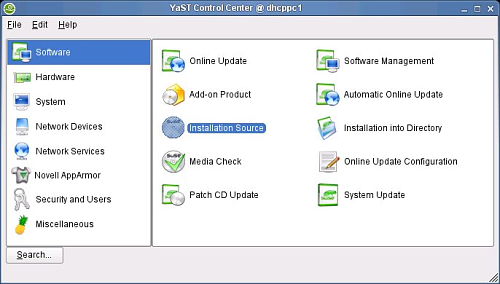
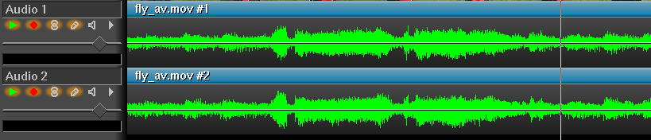
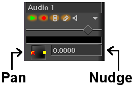
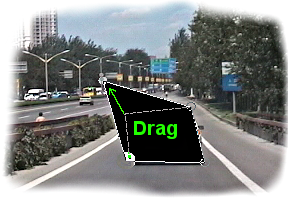
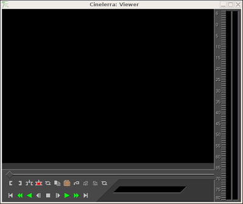
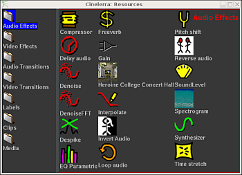
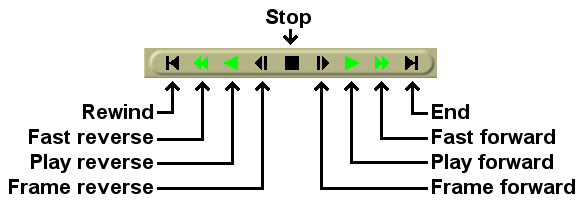
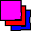
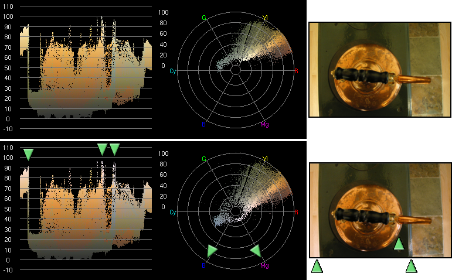
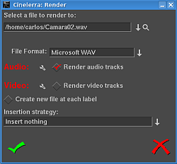

| [Top] | [Contents] | [Índice] | [ ? ] |
| 1.1 Sobre o Cinelerra | ||
| 1.2 As duas versões do Cinelerra | ||
| 1.3 Sobre este manual | ||
| 1.4 Buscando ajuda | ||
| 1.5 Tutoriais | ||
| 1.6 Como fazer (HOWTOs) | ||
| 1.7 Links diversos |
Por anos algumas pessoas desejaram uma forma de editar seu vídeo e áudio em um lugar que fosse tão fluido como os em que se escreve textos. Cinelerra tenta ser um local único para todas as suas necessidades que envolvam edição de vídeo e áudio. Toda a gravação, edição e exibição ("playback") pode ser feita aqui. O software também pode ser usado como um reprodutor de áudio. Ele pode ser usado para gravar áudio ou vídeo. Ele pode até ser usado para retocar fotos.
Existem dois tipos de pessoas que apreciam vídeos: produtores que querem criar novos conteúdos, voltando a seus conteúdos futuramente para um melhor refinamento, e consumidores, que querem adquirir o conteúdo e assisti-lo. O Cinelerra não visa consumidores. O Cinelerra possui vários recursos para conteúdo não-comprimido, processamento de alta resolução e composição, com muito poucos atalhos. Produtores precisam dessas funções devido à necessidade de retocar várias gerações de gravação com alterações no formato, o que torna o programa muito complexo. Consumidores devem considerar outras ferramentas, como Avidemux (http://www.avidemux.org/), Kino (http://kinodv.org/) ou Kdenlive (http://kdenlive.org/).
Citação do Wiki do Miro (http://www.mitvwiki.org/Cinelerra):
"A grande diferença entre o Cinelerra e vários outros editores comerciais é que o Cinelerra esconde muito menos do usuário, expondo muito mais de seus processos internos para dirigir a interação. Isso pode ser mais difícil de usar, mas torna-o tremendamente poderoso e, para algumas operações, extremamente rápido."
Existem duas versões do Cinelerra. Uma pode ser encontrada no endereço http://www.heroinewarrior.com e a outra em http://cvs.cinelerra.org. Esta documentação está focada no Cinelerra-CV (Community Version).
O Cinelerra é desenvolvido de forma "upstream" por uma entidade a quem chamaremos de HV que é uma entidade que compartilha, mas que não é do tipo "comunidade". HV prefere trabalhar em sua própria cópia do Cinelerra por conta própria, lançando um novo código em uma base de seis em seis meses mais ou menos. Alguns desenvolvedores decidiram que seria interessante melhorá-la de uma forma comunitária, mas não queriam exatamente dividir ("fork") o desenvolvimento. Basicamente, mantemos uma cópia que é bastante similar à publicação oficial. Porém, aplicamos nossas correções de erros, correções de compilação ("compiler compliance fixes") e alguns melhoramentos ao SVN. Nós tentamos mandar os patches aos desenvolvedores oficiais. Assim, a versão do Cinelerra CV possui um número de características que a versão oficial não possui.
Em termos de estabilidade, ao contrário de outros programas, a publicação que o HV faz não pode ser descrita como uma publicação "estável". Após a versão do Cinelerra HV é lançada, normalmente há questões relacionadas a erros ("bugs") ou usabilidade. Além disso, nem todas as implementações do Cinelerra CV conseguem entrar na versão oficial (por exemplo, renderização para um pipe YUV). Desta forma, quando há um novo lançamento, um dos membros (j6t) funde ("merge") o código do HV com o do Cinelerra CV, pegando as melhorias do HV e re-arranjando o código para ser mais similar ao do HV (espaços em branco, nomenclatura de funções, nomenclatura de diretórios, leves mudanças nas implementações, etc). Após a fusão, a última versão do Cinelerra CV é possivelmente um pouco instável até que todas as questões do novo código HV adicionadas sejam reparadas, usuários encontrem erros e conforme o tempo permita corrigi-los. O Cinelerra CV pode ser visto como uma tentativa da comunidade de estabilizar a publicação do HV e também como um esforço de adicionar melhorias de uma forma comunitária onde podemos comentar as implementações de cada plug-in de cada um. De fato, a HV fica de olho no que fazemos e, eventualmente, diz algumas palavras aqui ou ali sobre nossas implementações.
Dada a discussão acima, pode-se dizer que obter o SVN logo antes de uma fundição entre os códigos ("merge") seja uma versão estável, mas você provavelmente encontrará problemas de arquivos de descrição de projetos não serem mais compatíveis. Além disso, a HV também acha erros que nós não havíamos encontrado. Em alguns casos, também corrige erros que havíamos apontado mas não conseguíamos corrigir. Assim, o que é "estável" torna-se realmente questionável e para você decidir, mas se você se mantiver conosco, provavelmente conseguirá se comunicar melhor com a gente do que com a HV.
Esta edição é a 1.55.pt_BR, válida para a versão 2.1 da versão do Cinelerra CV. Você pode redistribui-lo e/ou modificá-lo sob os termos da GNU General Public License, conforme publicada pela Free Software Foundation; tanto a versão 2 da Licença, quanto (à sua escolha) qualquer versão posterior.
Este manual se origina do "Secrets of Cinelerra", um excelente manual escrito por Adam WILLIAMS do HEROINE VIRTUAL LTD. Em 2003, Alex FERRER criou um Wiki baseado naquele manual e adicionou um monte de capturas de tela e novas informações. Naquela época, o Cinelerra CV ainda não tinha seu próprio manual e informações relacionadas à Versão da Comunidade do Cinelerra estavam jogadas pela internet (listas de discussão, IRC, sites, wiki, etc). Em 2006, Nicolas MAUFRAIS combinou o "Secrets of Cinelerra" original com o conteúdo do Wiki de Alex FERRER em um único documento.
Mantenedores da documentação do Cinelerra-CV:
Inglês: Nicolas MAUFRAIS (coordenador), Raffaella TRANIELLO (aprendiz de feiticeira)
Tradutores do manual:
Francês: Jean-Luc COULON
Português do Brasil: Flavio SOARES (mantenedor), Willie MARCEL
Espanhol: Alberto RAMALLO, Gustavo Iñiguez GOYA (capítulo 17 - Quadros-chave)
Basco: Iñaki Larrañaga MURGOITIO "Dooteo".
Outros contribuintes para este manual são: Alexandre BOURGET, Kevin BROSIUS, Carlos DAVILA, Cillian DE ROISTE, Rafael DINIZ, Pierre DUMUID, Mike EDWARDS, Martin ELLISON, Graham EVANS, Alex FERRER, Scott FRASE, Joe FRIEDRICHSEN, gour, Gus Gus, Terje HANSSEN, Mikko HUHTALA, Ben JORDEN, Nathan KIDD, Marcin KOSTUR, Joseph L., David MCNAB, Valentina MESSERI, Sean PAPPALARDO, Paolo RAMPINO, Herman ROBAK, Dana ROGERS, Jim SCOTT, Andraz TORI, Raffaella TRANIELLO, Hermann VOSSELER, Norval WATSON.
Agradecemos à equipe do projeto GNU, e particularmente a Karl BERRY, maintenedor do GNU Texinfo, pela preciosa ajuda que nos deu durante a elaboração deste manual.
Os fontes deste manual são arquivos Texinfo. Eles estão no mesmo repositório SVN que o código-fonte do Cinelerra (pasta hvirtual/doc). Eles podem ser convertidos em vários formatos. O arquivo doc/README_en contém instruções para transformá-lo em PDF, HTML (página única), HTML (uma página por capítulo, em uma pasta), TXT simples, TXT em sintaxe DokuWiki (um arquivo por capítulo, em uma pasta), Docbook.
Você pode participar editando este manual fazendo modificações no wiki do Cinelerra-CV wiki:
http://cvs.cinelerra.org/docs/wiki/doku.php
Se você gostaria de traduzir este manual para sua língua, veja o arquivo doc/TRANSLATIONS e contate a Comunidade do Cinelerra CV.
Para conseguir as fontes do manual, instale o cogito e o git-core em seu computador em rode:
cg-clone git://scm.pipapo.org/cinelerra-nicolasm
Você pode conseguir ajuda em:
See section Reportando erros, caso você queira preencher um reporte de erros.
Alguns tutoriais do Cinelerra disponíveis na internet:
Alguns HOWTOs para usos específicos estão disponíveis na internet:
Links diversos:
Todos os pacotes do Cinelerra contêm os seguintes itens:
O Cinelerra não é um programa leve. A demanda de leitura, decodificação e reprodução de vídeo pode sobrecarregar completamente seu sistema. A performance e, conseqüentemente, a usabilidade do cinelerra está diretamente relacionada à velocidade, I/O - portas de entrada e saída, vídeo e à memória do seu hardware e ao tipo de stress a que você pretende submeter o sistema. Para os/as usuários/as que trabalham apenas com áudio ou com formatos leves de vídeo, um computador menos potente pode ser suficiente. No entanto, para alguém que deseja trabalhar com arquivos no formato DV, várias faixas de áudio e um bom conjunto de efeitos e transições é necessário uma melhor configuração de hardware. Como regra geral, é sugerido rodar o Cinelerra em sistemas com, no mínimo, as seguintes especificações:
Para instalar o Cinelerra você precisa ter uma versão atual do Linux com o Sistema de Janelas X (por exemplo, X.org) e com algum software controlador de áudio funcionando corretamente. Você também precisará instalar as seguintes bibliotecas (lista parcial):
Você também vai precisar dos cabeçalhos ("headers") para todas as bibliotecas requeridas. Para várias distribuições, isso significa que você precisará instalar os pacotes "-dev" ou "devel" que correspondam aos pacotes de bibliotecas que você possui instalados. Além das bibliotecas listadas aqui, assegure-se de ter os cabeçalhos ("headers") do X. A falta desses cabeçalhos normalmente resultará em uma falha na compilação com mensagens cifradas de erro.
| 2.3.1 Processo comum de compilação | ||
| 2.3.2 Compilando com símbolos de depuração |
Você pode instalar Cinelerra CV obtendo o código fonte e compilando-o. Este é o método que você deve utilizar caso deseje compilar a versão mais atual do Cinelerra CV.
O código fonte do Cinelerra-CV está disponível no repositório Subversion (SVN). O Subversion está disponível para download em http://subversion.tigris.org/, mas muito provavelmente a sua distribuição possui pacotes pré-compilados. A documentação completa do subversion está disponível em http://svnbook.red-bean.com/nightly/en/index.html.
svn checkout svn://svn.skolelinux.org/cinelerra/trunk/hvirtual cd hvirtual
autoreconf -i --force
./configure --with-buildinfo=svn/recompile ./configure --helpmake
Se você quer gerar um registro para o resultado do make para buscar erros, este comando pode ser usado:make 2>&1 | tee logfile
sudo make install
ldconfig
Notas:
./configure. Se você fizer isto, deverá usar também a opção `--without-pic', caso contrário, a compilação pode falhar. ./configure --prefix=/usr --enable-x86 --enable-mmx32 --enable-freetype2 --with-buildinfo=svn/recompile CFLAGS='-O3 -pipe -fomit-frame-pointer -funroll-all-loops -falign-loops=2 -falign-jumps=2 -falign-functions=2 -ffast-math -march=pentium-m -mfpmath=sse,387 -mmmx -msse'
./autogen.sh./configuremakemake installsvn updatesvn checkout -r <revisão> svn://svn.skolelinux.org/cinelerra/trunk/hvirtual
./configure (substitua `xxx' pelo número da versão que você quer compilar): cd /usr/local_cinelerra/rxxx ./cinelerra_rxxx
Se você instalar o Cinelerra utilizando este método, os arquivos de tradução `.po' não serão instalados corretamente. Se você quer rodar o Cinelerra em outra língua, veja See section Variáveis de ambiente, para instruções específicas.
Quando o Cinelerra CV trava, você pode compilar com símbolos de depuração e executá-lo dentro do gdb. A informação exibida pelo gdb é muito mais detalhada e, dessa maneira, os desenvolvedores terão informações mais úteis para a corrigir os erros ("bugs").
Primeiro, baixe as fontes do SVN da mesma forma que foi descrito anteriormente. Depois, execute os seguintes comandos:
cd hvirtual
nice -19 autoreconf -i --force
mkdir ../hvdbg
cd ../hvdbg
nice -19 ../hvirtual/configure CXXFLAGS='-O0 -g' CFLAGS='-O0 -g' --with-buildinfo=svn/recompile
cd quicktime/ffmpeg
nice -19 make CFLAGS='-O3'
cd ../..
nice -19 make
nice -19 make install
See section Reportando erros, para informação a respeito da execução do Cinelerra dentro do gdb.
A maneira mais simples de executar o cinelerra é através do comando /usr/bin/cinelerra
Esse comando esconde uma interface em linha de comando com muito mais recursos. Execute cinelerra -h para ver uma lista de opções para linha de comando. A utilidade dessas opções é descrito em várias seções. Para renderização através da linha de comando veja See section Renderizando arquivos.
Se esta mensagem aparecer quando você estiver rodando o Cinelerra pela primeira vez:
WARNING:/proc/sys/kernel/shmmax is 0x2000000, which is too low
veja See section Liberando mais memória compartilhada, para detalhes.
Pode-se tentar usar o Cinelerra em um computador sem que seja preciso instalá-lo no disco rígido. Isso é possível pelo uso de Live CDs, que estão em distribuições GNU/Linux que dão boot pelo CD, sem instalação no disco rígido. Aqui estão alguns dos Live CDs que conhecidamente contém o Cinelerra:
O Cinelerra CV está incluso no repositório da comunidade Arch Linux.
Para instalar o pacote cinelerra, você deve primeiro habilitar o repositório da comunidade (Veja http://wiki.archlinux.org/index.php/AUR_User_Guidelines para mais informações).
Então, use o seguinte comando a partir de um terminal:
pacman -Sy cinelerra-cv
O Cinelerra CV está incluso no repositório de pacotes Ark Linux.
Para instalar o pacote cinelerra, use a ferramenta Install Software em Mission Control ou rode os seguintes comandos a partir de uma linha de comando:
apt-get update
apt-get install cinelerra.
| 2.8.1 Pacotes binários para Debian | ||
| 2.8.2 Pré-requisitos para Debian |
Andraz TORI mantém instruções de empacotamento para Debian Sid. Ele também faz pacotes binários .deb para Sid. Estes são empacotados a partir de releases não-oficiais do SVN. Pacotes para Debian Sid podem ser encontrados aqui:
deb http://www.kiberpipa.org/~minmax/cinelerra/builds/sid/ ./
deb http://www.kiberpipa.org/~minmax/cinelerra/builds/pentium4/ ./
deb http://www.kiberpipa.org/~minmax/cinelerra/builds/pentiumm/ ./
deb http://www.kiberpipa.org/~minmax/cinelerra/builds/athlonxp/ ./
Valentina MESSERI também construiu o
deb http://giss.tv/~vale/debian64/ ./
Christian MARILLAT faz pacotes binários de Debian, construídos a partir das publicações SVN não-oficiais, para estável, em teste e instável.
deb http://www.debian-multimedia.org BRANCH main
Nota: BRANCH = stable, testing or unstable
Nota: Instale o debian-multimedia-keyring para adicionar o gpg-key do Marillat em seu keyring.
Nota: Se o Cinelerra apresentar o seguinte erro:
cinelerra: relocation error: /usr/lib/libavcodec.so.0.4.8:
undefined symbol: faacDecOpen
Você pode resolver o problema com o seguinte comando (como root):
apt-get install --reinstall libfaad2-0=2.0.0-0.5
Pacotes padrão de desenvolvimento
Há pacotes que poderiam ser considerados "padrão" de desenvolvimento. As chances, porém, são de que você não os teria instalados por padrão, então você provavelmente precisará deles:
error: X11/extensions/xf86vmode.h: No such file or directory
error: X11/extensions/Xvlib.h: No such file or directory
/usr/bin/ld: cannot find -lXxf86vm
Pacotes extras Debian
Estes são pacotes de desenvolvimento que não seriam "não-padrão", e você muito provavelmente terá de instalá-los se for compilar o Cinelerra:
Alguns pacotes que podem ou não ser requeridos:
Pacotes externos
Você precisará de algumas dependências que não são encontradas nos repositórios oficiais da Debian. Adicione ao `/etc/apt/sources.list' a seguinte linha do repositório de Christian Marillat:
deb http://www.debian-multimedia.org/ sid main
Você terá de instalar os seguintes pacotes com o apt-get:
| 2.9.1 Repositórios de pacotes Ubuntu | ||
| 2.9.2 Instruções para a instalação de pacotes no Ubuntu |
Para Ubuntu 8.04 Hardy Heron:
deb http://repository.akirad.net akirad-hardy main
Notas de instalação:
- Para adicionar este repositório na sua lista de fontes, use o seguinte comando no terminal:
sudo wget http://repository.akirad.net/dists/hardy.list -O /etc/apt/sources.list.d/akirad.list
-Instalações a partir deste repositório precisam de uma chave de autenticação. Adicione-a usando o seguinte comando em seu terminal:
wget -q http://repository.akirad.net/dists/akirad.key -O- | sudo apt-key add -
- O pacotes do Cinelerra está disponível em cinco variantes:
cinelerra (x86 e x86_64 sem placa de vídeo opengl 2.0)
cinelerra-generic (todos os x86 e x86_64 com placa de vídeo opengl 2.0)
cinelerra-k7 (amd32 sem placa de vídeo opengl 2.0)
cinelerra-k7gl (amd32 com placa de vídeo opengl 2.0)
cinelerra-k8 (amd k8 otimizado com placa de vídeo opengl 2.0)
- O Cinelerra deve ser configurado para trabalhar com o PulseAudio. Abra o Cinelerra e vá em Configurações->Preferências->Reprodução->Driver de áudio. Selecione ESound e marque os seguintes parâmetros:
Servidor:
Porta: 7007
- Estes pacotes configuram o shmmax para 0x7fffffff e adicionam suporte a línguas que não sejam o inglês para o Cinelerra.
- Por favor, reporte qualquer erros nos pacotes para akir4d em gmail ponto com.
Para Ubuntu 7.10 Gutsy Gibbon:
deb http://repository.akirad.net akirad-gutsy main
Notas de instalação:
- Para adicionar este repositório na sua lista de fontes, use o seguinte comando no terminal:
sudo wget http://repository.akirad.net/dists/gutsy.list -O /etc/apt/sources.list.d/akirad.list
-Instalações a partir deste repositório precisam de uma chave de autenticação. Adicione-a usando o seguinte comando em seu terminal:
wget -q http://repository.akirad.net/dists/akirad.key -O- | sudo apt-key add -
- O pacotes do Cinelerra está disponível em cinco variantes:
cinelerra (x86 e x86_64 sem placa de vídeo opengl 2.0)
cinelerra-generic (todos os x86 e x86_64 com placa de vídeo opengl 2.0)
cinelerra-k7 (amd32 sem placa de vídeo opengl 2.0)
cinelerra-k7gl (amd32 com placa de vídeo opengl 2.0)
cinelerra-k8 (todos os amd64 com placa de vídeo opengl 2.0)
- Estes pacotes configuram o shmmax para 0x7fffffff e adicionam suporte a línguas que não sejam o inglês para o Cinelerra.
- Por favor, reporte qualquer erros nos pacotes para akir4d em gmail ponto com.
deb http://giss.tv/~vale/ubuntu32 ./
deb http://giss.tv/~vale/ubuntu64 ./
Nota:
- Se seu gerente de pacotes reclamar que você não possui a versão correta do libfaac (1.25), você pode instalar:
http://www.debian-multimedia.org/dists/stable/main/binary-amd64/package/libfaac0.php
Para Ubuntu 7.04 Feisty Fawn:
deb http://giss.tv/~vale/ubuntuopengl/ ./
deb http://giss.tv/~vale/ubuntu64 ./
deb http://giss.tv/~vale/ubuntu64NOopengl/ ./
deb http://www.kiberpipa.org/~muzzol/cinelerra/feisty-i386/ ./
deb http://www.kiberpipa.org/~gandalf/ubuntu/feisty/cinelerra/i686/ ./
deb http://www.kiberpipa.org/~gandalf/ubuntu/feisty/cinelerra/athlonxp/ ./
deb http://www.kiberpipa.org/~gandalf/ubuntu/feisty/cinelerra/pentium4/ ./
Para Ubuntu 6.10 Edgy Eft:
deb http://www.kiberpipa.org/~muzzol/cinelerra/edgy-i386/ ./
deb http://giss.tv/~vale/ubuntu32 ./
For Ubuntu 6.06 Dapper Drake
deb http://www.kiberpipa.org/~gandalf/ubuntu/dapper/mjpegtools ./
deb http://www.kiberpipa.org/~gandalf/ubuntu/dapper/cinelerra/pentium4/ ./
deb http://www.kiberpipa.org/~gandalf/ubuntu/dapper/cinelerra/i686/ ./
deb http://www.kiberpipa.org/~gandalf/ubuntu/dapper/cinelerra/athlonxp/ ./
Escolha um dos repositórios acima de acordo com o tipo de sua CPU e instale o pacote.
Aqui estão 3 formas de se fazer isso:
Com o gerenciador de pacotes Synaptic:
Abra a janela de repositórios do programa.
Você pode fazer isso de duas formas:
- Vá para Sistema -> Administração -> Gerenciador de pacotes synaptic
- Dentro do programa: vá para Configurações -> Repositórios.
Assegure-se de habilitar as fontes universe, multiverse e restricted na primeira aba.
Clique em Repositórios de Terceiros ("Third Party"). Clique no botão Adicionar e informe seu repositório escolhido (dos mencionados acima).
Clicar em Adicionar Fonte exibirá o novo repositório habilitado na janela de recursos do programa.
Você deve agora ser capaz de encontrar o Cinelerra na sua lista de pacotes disponíveis no Synaptic.
Siga as instruções do Synaptic para a instalação.
Pela linha de comando:
Edite diretamente o seu arquivo `/etc/apt/sources.list'.
Assegure-se de estar com os repositórios universe, multiverse e restricted habilitados checando se a seguinte linha está descomentada (se não há um "#" na frente dela):
deb http://archive.ubuntu.com/ubuntu dapper universe multiverse restricted
Adicione a linha completa do APT de seu repositório escolhido (a partir da lista acima).
Instale o Cinelerra digitando em seu terminal:
apt-get update
e então
apt-get install cinelerra
Com o instalador de pacotes GDebi:
Mande o Firefox para o endereço de rede do repositório
(por exemplo http://www.kiberpipa.org/~muzzol/cinelerra/edgy-i386/.)
Clique no link .deb de seu pacote Cinelerra escolhido
(por exemplo cinelerra_2.1.0+svn20070109-0ubuntu1_i386.deb)
Uma janela de diálogo pedirá a confirmação de sua intenção para abrir este arquivo com o instalador de pacotes GDebi.
Clicar em OK iniciará o download.
Se durante o processo você obter erros sobre dependências não satisfeitas, tente instalar as bibliotecas problemáticas pelo mesmo método a partir da mesma página.
HOWTOs para a instalação de pacotes ou compilação a partir do código fonte
A instalação no Gentoo Linux é bastante simples. Simplesmente digite:
emerge cinelerra-cvs
como root e o Cinelerra será instalado e rodará sem problemas. Note que você pode precisar colocar o cinelerra-cvs em seu arquivo `/etc/portage/package.keywords' para poder desmascará-lo:
echo "=media-video/cinelerra-cvs ~x86" >> /etc/portage/package.keywords
Veja http://www.gentoo.org/doc/en/handbook/handbook-x86.xml?part=3&chap=3 para detalhes.
Observação: O ebuild do Gentoo media-video/cinelerra-cvs-20061020 não possui ícones de modos de edição. Veja See section Modos de edição, para mais informações. Se você estiver rodando o programa a partir de uma arquitetura que não x86, por exemplo, amd64, você deverá substituir ~x86 pela arquitetura em questão, por exemplo, ~amd64.
Você também pode querer ajustar as bandeiras ("flags") de USE. Primeiro, rode
emerge -av cinelerra-cvs
para ver quais bandeiras estão disponíveis, e então adicione as relevantes a `/etc/portage/package.use':
echo "media-video/cinelerra-cvs ieee1394" >> /etc/portage/package.use
Isso deve habilitar o suporte a dispositivos firewire.
O Cinelerra está incluso no repositório Freshrpms em http://freshrpms.net. O jeito mais fácil de instalar pacotes do Freshrpms é incluir o repositório na configuração do yum. Também assegure-se que o repositório Fedora Extras esteja habilitado. Este é o caso por padrão no Fedora 5 e 6, e Core e Extras são unidos em um no Fedora 7.
Para Fedora 8, veja http://kernelreloaded.blog385.com/index.php/archives/install-cinelerra-on-fedora-8/
No Fedora 6, como usuário root, rode:
rpm -ivh http://ftp.freshrpms.net/pub/freshrpms/fedora/linux/6/\ freshrpms-release/freshrpms-release-1.1-1.fc.noarch.rpm
No Fedora 5, faça:
rpm -ivh http://ftp.freshrpms.net/pub/freshrpms/fedora/linux/5/\ freshrpms-release/freshrpms-release-1.1-1.fc.noarch.rpm
Então digite:
yum -y install cinelerra
para obter e instalar o Cinelerra e todas as suas dependências, incluindo o ffmpeg e o mjpegtools. Caso isso não funcione, cheque o arquivo `/etc/yum.conf' e assegure-se que a configuração do Freshrpms seja inclusa no arquivo `/etc/yum.repos.d'.
Observações:
Pacotes do Cinelerra para Mandriva são feitos por PLF e estão prontos para serem instalados. Leia http://plf.zarb.org/packages.php para mais informação.
Rafael DINIZ mantém pacotes do Cinelerra para Slackware.
RPMs para SuSE 9 são construídos de fontes SVN por Kevin BROSIUS, e disponíveis em http://cin.kevb.net/files/RPM/
RPMs para OpenSUSE 10.1 e 10.2, arquiteturas i586 e x86_64, são construídos a partir do SVN por Leon FREITAG em Packman. Eles estão disponíveis em http://packman.links2linux.org/package/cinelerra/16413.
Os pacotes RPM podem ser instalados como root em um terminal usando este comando:
rpm -Uvh package_name.rpm
O caso seguinte de instalação mostra quatro capturas de tela para uma instalação baseada no GUI do Cinelerra SVN no OpenSUSE 10.2 i586 usando YaST2. Primeiro adicionando o repositório do packman YaST2 como uma fonte de instalação YaST2, e depois a instalação do pacote com o YaST2 Software Manager.
Inicie o centro de controle do YaST no OpenSUSE 10.2 e adicione a senha de root quando pedido:

Inicie a ferramenta de instalação YaST2, selecione o protocolo HTTP e adicione o servername para packman conforme mostrado. A sincronia com o Zenworks pode levar algum tempo, espere até que esteja terminada.
Inicie o YaST2 Software Management. Enter "Cinelerra" no campo de busca à esquerda e habilite as caixas para os pacotes do Cinelerra na janela da direita. Se uma versão mais antiga do Cinelerra for instalada e fique visível com um símbolo de trava, apague-a. Possivelmente, tente fazer uma atualização antes.

Clique em Accept para começar a instalação do pacote e depois em Next para terminá-la.

conserte-me
Devido à sua variedade de usos, o Cinelerra não pode ser usado de uma forma ótima sem que haja uma configuração precisa, voltada para suas necessidades específicas. Muito poucos parâmetros são ajustáveis à hora da compilação. A configuração na hora de rodar o programa ("runtime") é a única opção para a maioria das configurações, devido à multitude de parâmetros.
Aqui nós discutimos não apenas as opções de configuração, mas quais das diferentes APIs são suportadas em GNU/Linux.
Vá para configurações->preferências para ver mais opções.
| 3.1 Variáveis de ambiente | Estas variáveis de ambiente são reconhecidas pelo Cinelerra | |
| 3.2 Drivers de Áudio | Informação sobre os drivers de áudio | |
| 3.3 Drivers de Vídeo | Informação sobre os drivers de vídeo | |
| 3.4 Reprodução | Configurando parâmetros relacionados à reprodução. | |
| 3.5 Gravação | Configurando parâmetros relacionados à gravação. | |
| 3.6 Performance | Configurando parâmetros relacionados a quão rápidas vão as coisas. | |
| 3.7 Interface | Configurando a interface de usuário. | |
| 3.8 Sobre, janela | Vendo informações sobre o programa. |
Nos derivativos de UNIX, variáveis de ambiente são variáveis globais no terminal ("shell") que todas as aplicações são capazes de ler. Elas são configuradas com um comando como set VARIABLE=value. Todas as variáveis de ambiente podem ser vistas com um comando tipo env. O Cinelerra reconhece as seguintes variáveis de ambiente:
export LANG=es_ES LANGUAGE=es_ES, e depois rode o Cinelerra a partir do mesmo terminal. Ele abrirá com os textos dispostos em espanhol. Se sua distribuição possui apenas suporte a UTF-8 (como o Ubuntu), primeiro você deve criar os dispositivos de linguagem com este comando:
localedef -c -i (language_prefix) -f (your ISO-8859 variant) (language_prefix).(your ISO-8859 variant)
Este é um exemplo para o italiano:
localedef -c -i it_IT -f ISO-8859-15 it_IT.ISO-8859-15
Então, você pode rodar o cinelerra com este comando:
env LANG=$(echo $LANG | sed -e s/UTF-8/(your ISO-8859 variant)/g) cinelerra
Este é um exemplo para o italiano:
env LANG=$(echo $LANG | sed -e s/UTF-8/ISO-8859-15/g) cinelerra
Em alguns casos (por exemplo, se você compilou o Cinelerra especificando uma opção `--prefix=' diferente do arquivo `/usr/local'), os arquivos .po traduzidos não são instalados. Se você não consegue rodar o Cinelerra em sua língua escolhida, tente rodar os seguintes comandos antes de mudar as variáveis de ambiente LANG e LANGUAGE:
cd hvirtual
./configure prefix=/usr
cd po
sudo make install
Os drivers de áudio são usados tanto para gravação quanto para reprodução para gerar dados para o e a partir do hardware. Uma vez que os mesmos drivers são usados tanto para gravação quanto para reprodução, sua funcionalidade está descrita aqui em uma seção separada.
| 3.2.1 Atributos do Driver de Som | ||
| 3.2.2 OSS | Notas sobre o driver OSS | |
| 3.2.3 OSS Envy24 | Notas sobre o driver OSS do chip Envy24 | |
| 3.2.4 Alsa | Notas sobre o driver ALSA | |
| 3.2.5 Esound | Notas sobre o driver ESound | |
| 3.2.6 Raw 1394 | Notas sobre o driver Raw1394 | |
| 3.2.7 DV 1394 | Notas sobre o driver DV1394 | |
| 3.2.8 IEC 61883 | Notas sobre o driver IEC 61883 |
Este foi o primeiro driver de som GNU/Linux. Ele possuía uma implementação open source e uma implementação comercial com mais cartões de áudio suportados. Era o driver padrão de som até o GNU/Linux 2.4. Ainda é o único driver de som que um binário i386 pode usar quando rodando em um sistema x86_64.
A versão comercial do OSS possuía uma variante para cartões 24 bits / 96 KHz. Esta variante requeria mudanças significativas no modo como os drivers de som eram usados, sendo para isto que o OSS Envy24 foi criado.
ALSA é o driver de som mais comum no GNU/Linux 2.6. Ele suporta a maioria das placas de som agora. Ele usa as vantagens das características de latência baixa do GNU/Linux 2.6 para obter uma performance melhor do que o OSS possuía no 2.4, mas marginalmente a mesma performance que o OSS tinha no 2.0. Infelizmente, o ALSA está constantemente mudando. Um programa que funcione com ele um dia pode não funcionar no dia seguinte. Novos "wrappers" estão sendo desenvolvidos pelo ALSA no presente momento; planejamos suportá-los em intervalos regulares, não a cada novo lançamento de um novo "wrapper".
O ALSA não é mais portável entre i386 e x86_64. Se um binário i386 tenta fazer uma reprodução num kernel x86_64, ele não funciona. Para este cenário, use o OSS.
ESOUND era um servidor de som que estava acima do OSS. Ele era escrito para um gerenciador de janelas chamado Enlightenment, suportando um número limitado de bits e possuía latência alta se comparado aos tempos modernos, mas multiplexava fontes de áudio múltiplas. É desconhecido se este driver ainda funciona.
Esta era a primeira interface entre softwares GNU/Linux e as câmeras firewire. Era o modo menos confiável de tocar áudio para uma câmera. Consistia numa biblioteca acima dos comandos de kernel.
A segunda re-escritura do suporte a câmeras DV no GNU/Linux. Este era o modo mais confiável de se tocar áudio para uma câmera, pois consistia em comandos diretos do kernel.
A terceira re-escritura do suporta a câmeras DV no GNU/Linux. Esta é uma biblioteca acima da RAW 1394, que é uma biblioteca acima dos comandos de kernel. É menos confiável que a DV 1394, mas mais confiável que a RAW 1394. A próxima re-escritura deve corrigir isso.
Os drivers de vídeo são usados para reprodução ("playback") de vídeo nas janelas de composição e visualização.
Este era o primeiro método de reprodução de vídeo em qualquer sistema UNIX, válido até 1999. Ele simplesmente escreve a tríade RGB para cada pixel diretamente na janela. É o método mais lento de reprodução. Ainda é útil como recurso caso o hardware de gráfico não consegue lidar com quadros ("frames") muito largos.
Este era o segundo grande método de reprodução de vídeo do UNIX, começando em 1999. Ele converte YUV para RGB no hardware por escala ("scaling"). É o método preferível de reprodução, mas não consegue lidar com tamanhos de quadro grandes. O tamanho máximo de vídeo para o XV é normalmente 1920x1080.
O método mais poderoso de reprodução de vídeo é o OpenGL. Com este driver, a maioria dos efeitos é feita no hardware. O OpenGL permite tamanhos de vídeo até o máximo do tamanho de textura, que é normalmente mais largo do que o XV suporta, dependendo do driver de gráfico. Para habilitá-lo, você precisa de um binário construído com suporte a OpenGL. A opção configure (de configuração) para habilitar o OpenGL é `--enable-opengl'. Você precisa de uma placa que suporte OpenGL 2.0. Placas de vídeo nVidia recentes devem funcionar. Você também precisa de um driver de vídeo que suporte OpenGL 2.0, como o driver binário da Nvidia. Para saber se seu driver de vídeo suporta OpenGL 2.0, digite o seguinte comando: glxinfo | grep "OpenGL version".
OpenGL version string: 2.0.2 NVIDIA 87.74
OpenGL version string: 1.4 (2.0.2 NVIDIA 87.74)
O OpenGL utiliza PBuffers e shaders para fazer a renderização de vídeo. A placa de gráfico deve suportar OpenGL 2 e o Cinelerra deve ser necessariamente compilado com suporte a OpenGL 2. Isso requere uma compilação em um sistema com os headers ("cabeçalhos") do OpenGL 2. PBuffers são conhecidos por serem volúveis. Se a placa de gráfico não possui memória suficiente ou não tem os visuais corretos, os PBuffers não funcionarão. Tente buscar vários quadros ("frames") ou reiniciar o Cinelerra se o OpenGL não funcionar.
Limitações:
BC_Texture::create_texture frame size <frame_width>x<frame_height> bigger
than maximum texture 4096x4096.
Este é um método para reproduzir arquivos "motion JPEG-A" diretamente para um sinal analógico composite. Ele utiliza um hack popular do driver Video4Linux 1 de 2000 para descomprimir o JPEG em hardware. Infelizmente, ainda que saída analógica seja obsoleta, novos drivers substituíram o BUZ.
Esta era a primeira interface entre softwares GNU/Linux e câmeras firewire. Era a forma menos confiável de enviar vídeo para uma câmera. Consistia em uma biblioteca acima dos comandos de kernel.
A segunda re-escritura do suporte a câmeras DV no GNU/Linux. Era a forma mais confiável de reproduzir vídeo em uma câmera. Consistia em comandos diretos do kernel.
A terceira re-escritura do suporte a câmeras DV no GNU/Linux. Esta é uma biblioteca acima do RAW 1394, que é uma biblioteca acima dos comandos de kernel. É menos confiável que o DV 1394, mas mais confiável que o RAW 1394. A próxima re-escritura deve consertar isso.
| 3.4.1 Saída de Áudio | ||
| 3.4.2 Saída de Vídeo |
Determinam o que acontece quando você reproduz som a partir da Linha do Tempo.
Determina como o vídeo sai da Linha do Tempo e chega a seus olhos.
Os parâmetros aqui influenciam no que acontece quando você vai para Arquivo->Gravar.... A intenção era fazer o Arquivo->Gravar... ir o mais rápido possível para a Janela de Monitoramento de Gravação, sem uma caixa de diálogo extensa para configurar o formato de arquivo. Ao invés disso, o formato de arquivo para gravação é configurado aqui e é aplicado a todas as gravações. Também configurado aqui é o hardware para gravação, já que o hardware determina os formatos de arquivo suportados na maioria dos casos.
| 3.5.1 Formato de arquivo | ||
| 3.5.2 Entrada de Áudio | ||
| 3.5.3 Entrada de Vídeo |
Determina o formato de arquivo de saída para gravações. Depende muito do tipo de driver usado. A interface é a mesma que a intercafe de renderização. A opção Gravar trilhas de áudio deve estar habilitada para gravar áudio. A opção Gravar trilhas de vídeo deve estar habilitada para gravar vídeo. O botão de ferramenta à esquerda de cada opção abre um diálogo de configuração para configurar o codec correspondente para áudio de vídeo. O áudio e o vídeo são empacotados em um contâiner definido pelo menu Formato de arquivo. Contâiners diferentes podem gravar apenas áudio, apenas vídeo ou ambos.
Alguns drivers de vídeo só conseguem gravar em determinados contâiners. DV, por exemplo, consegue apenas gravar para Quicktime com DV como compressão de vídeo. Se o driver de vídeo é modificado, o formato de arquivo pode ser atualizado para dar a saída suportada. Se você mudar o formato de arquivo para um formato não suportado, ele pode não funcionar com o driver de vídeo.
Determina o que acontece quando você grava o áudio.
Determina o que acontece quando você grava o vídeo.
Você passará amaior parte do tempo configurando esta seção. O foco principal da performance são os parâmetros de renderização que não estão disponíveis no diálogo de renderização.
| 3.6.1 Renderização de fundo | ||
| 3.6.2 Fazenda de renderização |
A renderização de fundo ("background rendering") foi originalmente concebida para permitir que efeitos HDTV fossem exibidos em tempo-real. A renderização de fundo faz com que a saída temporária seja constantemente renderizada enquanto a Linha do Tempo está sendo modificada. A saída temporária é exibida durante a reprodução sempre que possível. É bastante útil para transições e previsões de efeitos que são muito lentos para serem reproduzidos em uma quantia razoável de tempo. Se a fazenda de renderização ("renderfarm") estiver habilitada, a fazenda é usada para a renderização de fundo, dando-lhe o potencial para efeitos em tempo-real caso haja banda ou nódulos de CPU suficientes.
A renderização de fundo é habilitada na aba Performance da Janela de Preferências. Ela possui uma função interativa Menu configurações -> Ajustar renderização de fundo. Isso marca onde a renderização de fundo começa para onde o ponto de entrada estiver. Se algum vídeo existe, uma barra vermelha aparece na barra de tempo, mostrando o que foi renderizado ao fundo.
É normalmente útil inserir um efeito ou uma transição e selecionar Menu configurações -> Ajustar renderização de fundo logo antes do efeito para pré-visualizá-lo a taxas de quadros inteiras.
ls não funcionarão no diretório de renderização de fundo. O botão  para esta opção também normalmente não funcionará, mas o botão de configuração
para esta opção também normalmente não funcionará, mas o botão de configuração  para esta opção funcionará.
para esta opção funcionará.
Para usar a fazenda de renderização, configure estas opções. Ignore-as no caso de um sistema único.
Estes parâmetros afetam unicamente como a interface do usuário funcionará.
Esta seção te dá informações sobre direitos autorais, quando o build presente foi criado, a falta de uma garantia e as versões de algumas bibliotecas. Esteja certo de concordar com os termos de falta de garantia.
| 4.1 Janela de configuração de formato | ||
| 4.2 Pré-configurações | ||
| 4.3 Atributos de áudio | ||
| 4.4 Atributos de vídeo |
Quando você reproduz arquivos de mídia no Cinelerra, os arquivos de mídia possuem um certo número de trilhas, uma certo tamanho de quadro, um certo tamanho de amostragem e assim por diante. Não importa o que o arquivo de mídia possui; entretanto, ele ainda será reproduzido de acordo com os atributos do projeto. Se uma taxa de amostragem de áudio for diferente dos atributos do projeto, ela será refeita. Se o tamanho do quadro de um arquivo de vídeo for diferente dos atributos do projeto, ele será composto a um quadro preto, ou recortado ou encaixado dentro de bordas pretas.
Os atributos do projeto são ajustados em Configurações->Ajustar Formato e, de uma forma algo mais limitada, em Arquivo->Novo. Quando você ajusta as configurações do projeto em Arquivo->Novo, uma nova linha do tempo é criada sem informações. Cada linha do tempo criada a partir deste ponto usará as mesmas configurações. Quando você ajusta asconfigurações em Configurações->Formato, a linha do tempo não é recriada sem informações, mas cada linha do tempo criada a partir deste ponto usará as mesmas configurações.

Janela de configuração de Formato
Além das configurações tradicionais de taxa de amostragem, taxa de quadros e tamanho de imagem, o Cinelerra usa algumas configurações pouco usuais como posições de canais, modelo de cor e razão de aspecto.
Selecione uma opção deste menu para ter todas as configurações de projeto marcadas para um dos padrões conhecidos.

A ferramenta de posição do canal
Os canais são numerados. Quando renderizados, a saída do canal 1 é renderizada para a primeira trilha de saída no arquivo ou para o primeiro canal da placa de áudio. Outros canais serão renderizados para suas trilhas sucessivamente numeradas.
Os locais dos canais de áudio correspondem a onde na panorâmica cada saída de áudio está. Quão mais perto a posição da panorâmica estiver se uma das saídas de áudio, mais sinal o falante obterá. Clique em um ícone de falante e arraste para mudar a localização do canal de áudio.
Os falantes podem estar em qualquer orientação. Um arranjo diferente de falantes é armazenado para cada número de canais de áudio já que normalmente você não quer que o mesmo arranjo de falantes para números diferentes de canais.
As posições de canais são a única configuração que não afetam a saída necessariamente. É simplesmente uma conveniência, então quando mais de dois canais são usados, os controles de panorâmica na linha do tempo podem distinguir entre eles. Isso não tem nada a ver com o arranjo real dos falantes.
Mas canais diferentes podem ser posicionados muito próximos um ao outro para fazer com que tenham a mesma saída.
See section Fazendo um pan nas trilhas de áudio.
Para fazer efeitos que envolvem um canal alfa, um modelo de cor com canal alfa deve ser selecionado. Esses são RGBA8888, YUVA8888 e RGBA Float. Os modelos de cor de 4 canais são notoriamente mais lentos do que os de 3 canais, sendo o mais lento o RGBA Float. Alguns efeitos como fade conseguem trabalhar sem a necessidade de um canal alfa, enquanto outros como o chromakey requerem um canal alfa para fazer qualquer coisa, então é uma boa idéia tentar o efeito sem canais alfa para ver se ele funciona antes de configurar o projeto com um canal alfa e deixá-lo mais lento.
Os modelos de cor YUV são normalmente mais rápidos do que os modelos de cor RGB quando se usa material comprimido. Eles também destróem menos cores do que os modelos RGB. Se um material armazenado como JPEG ou MPEG for processado muitas vezes em RGB, as cores vão esvanecer enquanto isso não acontecerá caso sejam processadas em YUV.
Anos trabalhando com material com abrangência dinânica alta mostraram que o RGB com ponto flutuante ("floating point RGB") é o melhor formato para abrangência dinâmica alta. Enquanto os integradores ("integers") de 16 bit eram usados no passado, eles tinham muita perda ("lossy") e eram muito lentos para a quantidade de melhorias.
O RGB float não destrói a informação quando usado com um material fonte YUV. Ele também suporta brilho acima de 100%. Saiba que alguns efeitos, como o Histograma, ainda recortam acima de 100% quando usados com ponto flutuante.
| 5.1 Formatos de arquivo suportados | Quais formatos o Cinelerra consegue importar e exportar | |
| 5.2 Carregando arquivos | Carregando todos os tipos de arquivos | |
| 5.3 Carregando o backup | Recuperando uma sessão de antes de um pau | |
| 5.4 Salvando arquivos de projeto | Salvando e editando listas de decisão | |
| 5.5 Fundindo projetos |
Aqui está a maioria dos formatos de arquivo suportados que podem ser carregados e para os quais se pode renderizar, com notas sobre sua compressão. Você pode ser capaz de conseguir carregar outros formatos não descritos aqui.
O formato do arquivo afeta o que o Cinelerra faz com ele. Editar as Listas de Decisão de Edição (EDL) substitui as configurações do projeto. Formatos que contêm mídia mas não edições de decisões apenas adicionam informações às trilhas. Se a taxa de amostragem de seu projeto é 48 kHz e você carregar um arquivo de áudio a 96khz, você ainda o estará reproduzindo a 48 kHz. Se você carregar um arquivo EDL a 96khz e a taxa de amostragem do projeto atual for de 48 kHz, você o mudará para 96 kHz.
Alguns formatos de arquivo são exibidos muito lentamente na Linha do Tempo. Normalmente, eles possuem vídeos que estão altamente comprimidos. Desenhar nos vídeos altamente comprimidos pode ser muito lento - desabilite o desenho ("picon drawing") para estes arquivos com a opção Desenhar mídia para aumentar a velocidade das operações.

Atributos de trilha
Atualmente, são suportados os seguintes formatos de importação e exportação:
Quicktime não é o padrão para UNIX, mas nós o usamos porque ele é bem documentado. Todos os vídeos Quicktime na internet são comprimidos. O Cinelerra não suporta a maioria dos vídeos Quicktime comprimidos, mas suporta alguns. Se o programa der pau quando tentar carregar um vídeo Quicktime, isso significa que o formato provavelmente não era suportado.
O Quicktime é um contâiner para 2 codecs, um codec de vídeo e um codec de áudio. Os codecs de vídeo e áudio são pegos separadamente. A codificação preferível de saída para Quicktime é vídeo em MPEG-4 e áudio em MPEG-4. Este formato toca nos reprodutores comerciais do Windows e possui uma boa qualidade de compressão. Para uma melhor compressão, use vídeo em H-264. Infelizmente, a decodificação do H-264 é tão lenta que ele não consegue reproduzir tamanhos de quadros muito grandes.
O Cinelerra suporta 2 codecs não-padrão: vídeo em Dual MPEG-4 e vídeo em Dual H.264. Eles não tocarão em nada além do Cinelerra e do XMovie. Eles são desenhados para vídeos nos quais os quadros foram divididos em 2 campos ("fields"), cada campo sendo exibido sequencialmente. Os codecs Dual sobrepõem ("interleave") as duas faixas de vídeo para melhorar a eficiência sem requerer mudanças maiores no reprodutor ("player").
É o mesmo que o Quicktime com MPEG-4 como codec de áudio.
| 5.1.3.1 Carregando imagens estáticas | ||
| 5.1.3.2 Tamanho de imagens estáticas | ||
| 5.1.3.3 Abrindo imagens EXR | ||
| 5.1.3.4 Imagens brutas de câmeras digitais |
Você pode carregar imagens estáticas em trilhas de vídeo do mesmo modo como faria com qualquer outro arquivo de vídeo.
Formatos suportados são principalmente: PNG, TIF, TGA ou JPG, EXR, imagens RAW de câmeras digitais.
Quando carregados na linha do tempo, por padrão as imagens ocupam um quadro de duração. Para vê-la, aproxime a linha do tempo (seta para baixo) de modo que você consiga ver o quadro único.
Para extender a duração da imagem, arraste seus limites do mesmo modo como faria com uma mídia de vídeo normal.
Você pode arrastar as bordas de uma imagem estática tanto quanto quiser. Imagens no Cinelerra possuem duração infinita.
O Cinelerra permite que você defina a duração inicial dos recortes carregados. O parâmetro para isto está na seção Imagens da janela Configurações->Preferências->Janela de gravação.
A menos que seu material original venha de uma fonte digital (como uma câmera de fotografia digital), a primeira coisa que você deve fazer antes de usá-la é de alguma forma capturar os blocos ("assets") em um meio digital utilizável.
Para fotos antigas, mapas em papel, desenhos ou diagramas, você pode querer usar um scanner para lê-los e transformá-los em arquivos PNG, TIF, TGA ou JPG. Você pode querer usar o programa Gimp para pós-processar as imagens, limpar áreas danificadas ou corrigir sua coloração.
Se suas imagens vêm de uma fonte digital como uma câmera digital ou uma captura de tela, assegure-se de capturar o material usando a melhor resolução possível. Isso te ajudará quando estiver trabalhando com o material dentro do Cinelerra.
Renderizar um vídeo para uma imagem única faz com que o arquivo de imagem final seja sobrescrito para cada posição na linha do tempo. O arquivo renderizado é uma imagem estática do último quadro do vídeo. Nenhuma tabela de conteúdo é criada. See section Seqüência de imagens.
Imagens importadas sempre ficam em seu tamanho original. Assim, você pode ter de re-escalar suas imagens antes de importá-las no Cinelerra.
Para re-escalar sua imagem de modo que ela se adeque ao tamanho do projeto, você pode usar o Imagemagick (http://www.imagemagick.org/script/index.php)
Exemplo:
convert inputfile.jpg -resize 720x576 outputfile.jpg
Você deve levar em consideração a razão de aspecto do seu vídeo.
Por exemplo, a razão de aspecto de imagens PAL é 4:3, mas 720x576 é 5/4. Para que suas imagens importadas sejam exibidas corretamente, você precisa redimensionar o tamanho horizontal:
Novo tamanho horizontal=(5 / 4) / (4 / 3) x Tamanho horizontal original
Para vídeos PAL, você tem que multiplicar o tamanho horizontal das imagens que você quer importar por um fator de 0.9375.
Aqui está um pequeno script shell que, quando rodado a partir de uma pasta contendo imagens jpg, redimensiona essas imagens e as coloca em uma nova pasta chamada `redimensionadas':
Nota: Assegure-se de ter o Imagemagick instalado, que provê as funções 'identify' e 'convert' usadas no script.
#/bin/sh
mkdir redimensionadas
for element in `ls . | grep -i '\.jpe*g$\'`;
do
size=`identify ${element}`
width=`echo ${tamanho} | sed '+s+.*JPEG ++' | sed '+s+x.*++'`
height=`echo ${tamanho} | sed '+s+.*JPEG [0-9]*x++' | sed '+s+DirectClass.*++'`
let new_width=${largura}*9375/10000
convert -resize "${nova_largura}x${altura}!" -quality 100 ${element} resized/${element}
done
Quando o tamanho de sua imagem for diferente do tamanho de seu projeto, mas a proporção for a mesma, você pode querer a imagem em seu tamanho original, para carregá-la em uma trilha específica e ajustar sua exibição com a aproximação de câmera. See section A câmera e o projetor.
Você pode não conhecer o Open EXR. Este formato armazena imagens de pontos flutuantes RGB ("floating point RGB images"). Ele também suporta um pequeno grau de compressão.
Projetos que renderizam para EXR devem estar em um modelo de cor de ponto flutuante para obter as vantagens do EXR See section Atributos do projeto.
Várias opções de compressão estão disponíveis para EXR.
Selecione Usar alfa se o modelo de cor do projeto possui um canal alfa e você quer mantê-lo no arquivo. De outro modo, as cores primárias serão multiplicadas pelo canal alfa.
Imagens brutas ("RAW") de câmeras digitais são um tipo especial de arquivo de imagem que o Cinelerra apenas importa.
Elas devem ser processadas em um espaço de cor de ponto flutuante uma vez que estejam na Linha do Tempo. Imagens brutas de câmeras Canon são as únicas que foram testadas. Elas precisam que lhes seja aplicado o efeito Gama para corrigir o gama. Uma vez que imagens brutas levam um bom tempo para interpolar, elas normalmente são vistas primeiro em um arquivo proxy e depois tocadas.
Primeiro aplique o efeito Gama em uma trilha de imagens brutas e configure-o para Automático com gama em 0.6. Depois, renderize a Linha do Tempo para um arquivo Quicktime JPEG. Apenda ("Append") o arquivo Quicktime JPEG em uma nova trilha e desabilite a reprodução ("playback") da trilha antiga. Agora, a cópia de cada imagem bruta com o gama corrigido pode ser pré-visualizada relativamente rápido na mesma posição da Linha do Tempo da imagem original.
Uma seqüência de imagens é uma série ordenada de imagens estáticas (ex. os quadros de uma cena animada). Eles podem ser carregados como vários arquivos.
Uma seqüência de imagens também pode ser representada no Cinelerra por um arquivo de listagem de imagens, também chamado de arquivo de Tabela de Conteúdos ("Table Of Contents", TOC). Uma TOC é um arquivo de texto com um formato específico conteno caminhos absolutos para cada quadro na seqüência, além de informações adicionais como resolução, formato de arquivo e taxa de quadros da seqüência. Para obter uma melhor performance, a tabela de conteúdos pode ser carregada como um bloco único ao invés de imagens individuais. Uma TOC não é um arquivo de mídia, mas se comporta como um recorte de vídeo.
O Cinelerra cria arquivos TOC ao se renderizar como "Seqüência de imagens".
Quando se renderiza um vídeo para uma seqüência de imagens, o Cinelerra cria um arquivo de imagem diferente para cada posição na linha do tempo e gera uma TOC para esta seqüência de imagens. Isso é útil para dividir o vídeo em quadros como estáticos únicos.
Quando se renderiza uma série de quadros para uma seqüência de imagens, o Cinelerra gera uma TOC para a seqüência de imagens, mas também cria um arquivo de imagem diferente para cada quadro estático. Os arquivos de origem são copiados e renomeados. O arquivo TOC contém os caminhos para os novos arquivos. Isso é útil apenas quando você quer criar uma lista e mudar o formato de seus arquivos de origem.
Para criar um arquivo TOC sem criar novos arquivos de imagem, você pode usar geradores de listas externos, como o IMG2LIST 0.1.5. (de Claudio "maléfico" ANDAUR) ou Seven Gnomes (de Peter SEMILETOV). Veja http://cvs.cinelerra.org/user-tips.php.
O Cinelerra pode criar TOCs para os seguintes formatos: JPEG, PNG, EXR, TIFF, TGA.
Listas de imagens podem ser editadas manualmente.
AVI com codecs de áudio e vídeo variados. Uma vez que o AVI é tão fragmentado, sua sorte vai variar.
Arquivos MPEG contendo vídeo podem ser carregados diretamente no Cinelerra. Se o arquivo for suportado, uma tabela de conteúdos (TOC) será construída. Se o arquivo não for suportado, o programa normalmente dá pau ou mostra trilhas muito pequenas. Infelizmente, este método de carregar arquivos MPEG não é bom o suficiente se você pretende usar uma fazenda de renderização ("renderfarm").
Para usar arquivos MPEG em uma fazenda de renderização, você precisa rodar o mpeg3toc para gerar uma tabela de conteúdos (TOC) para o arquivo e então carregar a tabela de conteúdos. O mpeg3toc requere o caminho completo do arquivo MPEG. Se você não usar o caminho completo, ele assume que o arquivo MPEG está no mesmo diretório de onde o Cinelerra está sendo rodado.
Faixas de MPEG são estruturadas em várias trilhas. Cada trilha pode ser vídeo ou áudio. Cada trilha de áudio pode ter de 1-6 canais. O Cinelerra converte cada canal de áudio em uma trilha.
Notas sobre codificação de vídeo em mpeg:
A codificação de vídeo MPEG é feita separadamente da codificação de áudio MPEG. Em vídeos MPEG, há 2 modelos de cor. O modelo YUV 4:2:0 é codificado por uma versão altamente otimizada do mpeg2enc com pré-configurações para eletrônicos padrão de cosumidores. No processo de otimizar o mpeg2enc, eles se livraram da codificação YUV 4:2:2. O modelo de cor YUV 4:2:2 é codificado por uma versão menos otimizada do mpeg2enc.
A codificação YUV 4:2:2 foi mantida porque a versão NTSC do vídeo DV perde muita qualidade quando transferida para YUV 4:2:0. Este vídeo DV deve ser transferido para YUV 4:2:2.
Quando codificando para YUV 4:2:0, o parâmetro de taxa de bits possui um significado diferente dependendo de se a taxa de bits ou a quantização é mantida fixa. Se a taxa de bits for mantida fixa, significa a taxa de bits-alvo. Se a quantização e mantida fixa, significa o máximo permitido como taxa de bits. Esta é uma coisa estranha da versão do mpeg2enc.
O DVD é dividido em um número de programas, cada um identificado por um arquivo `IFO' singular. Se você quiser carregar um DVD, ache o arquivo `IFO' correspondente para o programa de interesse. Carregue o arquivo IFO diretamente e uma tabela de conteúdos (TOC) será construída. Alternativamente, para o uso de fazenda de renderização ("renderfarm"), a tabela de conteúdos pode ser criada separadamente.
Rode: mpeg3toc -v /cdrom/video_ts/vts_01_0.ifo dvd.toc
ou algo similar. Então carregue o `dvd.toc'.
Arquivos de áudio MPEG 1 têm extensão .mp2 e .mp3. Se os arquivos forem codificados usando uma taxa de bits fixa, eles podem ser carregados diretamente no Cinelerra. De outro modo, uma tabela de conteúdos (TOC) precisa ser criada e carregada no lugar do arquivo de áudio. Se você sabe que sua faixa de áudio possui uma taxa variável de bits ou se você reparar que o Cinelerra não consegue buscar entre a faixa ou reproduzi-la corretamente, voc deve criar a TOC usando o mpeg3toc.
Aqui está um exemplo de comando:
mpeg3toc -v /caminho/para/meuarquivo.mp3 meuarquivo.toc
`meuarquivo.toc' é a Tabela de Conteúdos ("Table of Contents") que pode ser carregada como recurso.
O caminho deve se absoluto, a não ser que você planeje sempre manter seus .xml no mesmo diretório que o arquivo. Para fazendas de renderização, o prefixo do sistema de arquivos deve ser / e o diretório do vídeo montado sob o mesmo diretório em cada nódulo.
O formato OGG é uma forma antiquada mas supostamente não patenteada de comprimir áudio e vídeo. A qualidade não é tão boa quanto o H.264 ou o áudio MPEG-4. Na realidade, qualquer pessoa com dinheiro e desejo suficiente pode achar uma violação de patente, então a justificativa para o OGG é questionável.
Listas de decisões de edição são geradas pelo Cinelerra para armazenar projetos. Elas possuem como extensão o .xml. Elas mudam os atributos do projeto quando carregadas. Uma vez que listas de decisões de edição consistem em um texto, elas podem ser editadas por um editor de texto.
CONSERTE-ME
CONSERTE-ME
CONSERTE-ME
CONSERTE-ME
Toda informação que você trabalhar com o Cinelerra é adquirida tanto por gravar de um dispositivo ou por carregar a partir do disco. Esta seção descreve a opção de carregar arquivos a partir do disco.
O carregamento e a reprodução dos arquivos é justo como você poderia esperar. Apenas vá para arquivo->Carregar, selecione um arquivo para carregar e pressione ok. Dependendo da configuração da lista da Estratégia de Inserção, seu arquivo ou será carregado na janela de Recursos de mídia ou diretamente na janela de Programa. Neste último caso, clique no botão de reprodução e ele deve começar a ser reproduzido, independentemente de se uma barra de progresso apareceu ou não.

A janela de carregar arquivos
Se o arquivo é uma imagem estática, os atributos do projeto não serão modificados e o primeiro quadro de cada trilha se torna a imagem. Se o arquivo possui áudio, o Cinelerra pode construir um arquivo de índice para ele para aumentar a velocidade de desenho. Você pode editar e reproduzir o arquivo enquanto o arquivo de índice vai sendo criado.
| 5.2.1 Estratégia de inserção | ||
| 5.2.2 Carregando múltiplos arquivos | ||
| 5.2.3 Carregando arquivos a partir de um terminal | ||
| 5.2.4 Filtrando arquivos por extensão | ||
| 5.2.5 Carregando outros formatos |
Normalmente três coisas acontecem quando você carrega um arquivo.
Mas o Cinelerra permite que você mude o que acontece quando você carrega um arquivo.
Na janela de diálogo Carregar, vá para a caixa Estratégia de inserção e selecione uma das opções do menu. Cada uma das opções carrega o arquivo de uma forma diferente.
Ao usar essas opções, você consegue fazer praticamente toda a edição carregando os arquivos.
A estratégia de inserção é uma opção recorrente em várias funções do Cinelerra. Em cada função, as opções fazem as mesmas coisas.
Se você carregar os arquivos passando argumentos de linha de comando ao Cinelerra, os arquivos são carregados com as regras de Substituir projeto atual.
Na caixa de seleção de arquivos, vá para a lista de arquivos. Selecione um arquivo. Vá para outro arquivo e selecione-o enquanto deixa pressionada a tecla CTRL. Isso faz com que o arquivo adicional seja selecionado. Vá para outro arquivo e selecione-o enquanto mantém a tecla SHIFT pressionada. Isso selecionará todos os arquivos que estiverem entre os dois. Este comportamento também funciona na maioria das caixas de listas.
Use este método e a estratégia de inserção Concatenar às trilhas existentes para criar um slideshow de imagens ou uma lista de reprodução de músicas.
Outro meio de carregar arquivos é informar os nomes de arquivos como argumentos por linha de comando.
cinelerra meuvideo.mov videodaminhamae.mov
Isso cria novas trilhas para cada arquivo e inicia o programa com todos os argumentos carregados.
Caso existam muitos arquivos em sua pasta de mídia, pode ser difícil achar o arquivo que você quer no meio dos outros. Para isso, a janela de carregar arquivos permite que você filtre quais arquivos são exibidos na lista de acordo com sua extensão.
Clique na seta-para-baixo do campo seletor de extensões de arquivos (logo abaixo da caixa de nomes de arquivos) e selecione a extensão do arquivo de sua mídia (por exemplo, mpg, mov, mp3, avi, etc). A lista de arquivos agora mostra apenas arquivos que possuem a extensão selecionada.
Se você não consegue carregar um tipo particular de vídeo e não possui seu arquivo fonte original, você terá de convertê-lo para um formato suportado pelo Cinelerra. Converter seu arquivo para mpeg2 é uma boa solução, já que o Cinelerra carrega este tipo de arquivo sem nenhum problema. Neste caso, você deve usar o ffmpeg para fazer a conversão. Entretanto, os formatos mpeg2 requerem que o vídeo possua tamanhos de imagem e taxas de quadros específicos:
Para arquivos de entrada que não possuam essas propriedades, você deve usar o mencoder para convertê-los para MPEG4. Você pode identificar os codecs e o container de qualquer vídeo usando o comando:
mplayer -identify <seu_arquivo_de_vídeo.xyz>
ffmpeg -sameq -i vídeo_original.xyz vídeo_convertido.mpegmencoder vídeo_original.xyz -ovc lavc -lavcopts vcodec=mpeg4:\vhq:vbitrate=6000 -oac mp3lame -lameopts br=256:vol=1 \-ffourcc DIVX -o vídeo_convertido.avi
Existe um arquivo XML especial no disco rígido a todo momento. Após cada operação de edição, o Cinelerra salva o projeto atual para um arquivo de backup em `$HOME/.bcast/backup.xml'. Caso o programa dê algum pau, vá para arquivo->carregar backup para carregar o backup.
É importante após um pau (o programa fechar) reiniciar o Cinelerra sem fazer nenhuma outra operação de edição. Carregar o backup deve ser a primeira operação, ou você sobrescreverá o arquivo.
Note que o arquivo backup.xml sempre é um arquivo único, mesmo quando você estiver trabalhando com dois Cinelerras abertos ao mesmo tempo. Neste caso, a última operação feita e qualquer dos Cinelerras sobrescreverá o backup.
O Cinelerra salva projetos como arquivos XML. Vá para Arquivo->salvar como.... Selecione um arquivo para ser sobrescrito ou informe um novo nome de arquivo. O Cinelerra automaticamente concatenará o `.xml' ao nome de arquivo caso uma extensão `.xml' não seja dada.
Quando o Cinelerra salva um arquivo, ele salva uma lista de decisões de edição (EDL) do projeto atual, mas não salva nenhuma mídia. O arquivo consiste em um texto. Ele contém todas as configurações do projeto e localizações de cada recorte, mas ao invés de mídia, ele contém apontadores para os arquivos originais de mídia no disco rígido.
Para cada arquivo de mídia, o arquivo XML grava ou um caminho completo ou apenas um caminho relativo a ele. Se a mídia estiver no mesmo diretório do arquivo XML, um caminho relativo será salvo. Se ela estiver em uma pasta diferente, um caminho completo será salvo.
Você deve ter cuidado quando movimentar seus arquivos por aí: você está se arriscando a quebrar as ligações de mídia.
Você pode manter as mídias e o arquivo XML na mesma pasta para sempre e mover livremente toda a pasta, uma vez que os caminhos relativos serão salvos. De um modo alternativo, você pode salvar o arquivo XML em uma pasta diferente das de mídia, mas não poderá mover as mídias nunca mais. Neste caso, você poderá mover seu arquivo XML por aí livremente, já que os caminhos absolutos estão salvos.
Se você salvou o seu arquivo XML na mesma pasta que suas mídias mas gostaria de movê-lo para outro lugar, você pode modificar os caminhos de relativos para absolutos indo em Arquivo->Salvar como... e informar a nova localização.
De modo similar, se você salvou seu projeto fora de seu diretório de mídias, mas gostaria de mover sua mídia para outro local, você pode mudar os caminhos de absolutos para relativos indo em Arquivo->Salvar como... e salvando seu arquivo XML no mesmo diretório das mídias.
Se você quiser criar uma lista de reprodução de áudio e queimá-la em um CD-ROM, salve o arquivo XML na mesma pasta dos arquivos de áudio e queime todo o diretório. Isso manterá os caminhos de mídia relativos.
Deve ser dito que, sendo o arquivo XML um arquivo de texto, você sempre poderá reparar as ligações quebradas de mídia editando o arquivo XML em um editor de texto. Para cada mídia que você moveu, busque o caminho antigo e substitua-o pelo atual. Não esqueça de fazer uma cópia de backup de seu arquivo XML antes de fazer qualquer edição!
Você pode substituir o caminho de cada bloco de edição cujo arquivo de origem você moveu ainda dentro do programa, informando uma nova localização na caixa de diálogo de informação do recurso. Para abrir este recurso, clique com o botão direito do mouse na janela de Recursos e escolha Info... no menu que aparecerá. Digite o caminho diretamente no primeiro campo do diálogo ou clique no amplificador à direita para navegar pelos arquivos. Fazer isso pela interface gráfica só é conveniente quando um pequeno número de mudanças for necessário.
Arquivos XML são úteis para salvar o estado atual do Cinelerra antes de sair de uma sessão de edição.
Os arquivos XML são específicos do Cinelerra. Você não conseguirá 'tocar' arquivos XML em um reprodutor de vídeos.
Efeitos tempo-real em um arquivo XML devem ser re-sintetizados a cada vez que você os reproduzir.
O arquivo XML também requere que você mantenha cópias de todas as suas fontes no disco rígido, o que pode ocupar espaço e custar bastante eletricidade para rodar. Para um armazenamento mais persistente da saída, existe o render.
Para fundir vários projetos separados em um grande projeto:
| 6.1 Navegando na janela de programa |
Esta janela contém a Linha do Tempo e o ponto de entrada para todas as operações baseadas em menu. A Linha do Tempo consiste em um conjunto vertical de trilhas com representação horizontal de tempo. Define a saída das operações de render e o que é salvo quando você salva arquivos. À esquerda de Linha do Tempo está o patchbay, que contém opções que afetam cada trilha.

A linha do tempo
Abaixo da Janela de menu, você encontrará operações que afetam as janelas principais. A opção posições padrão reposiciona todas as janelas para uma configuração de edição em quatro janelas. Em configurações com dois monitores, a operação posições padrão preenche apenas um monitor com janelas.
A janela de programa contém várias funções para navegação e exibe a Linha do Tempo conforme está estruturada na memória: trilhas juntas verticalmente e se extendendo por sobre o tempo na forma horizontal. A barra de rolagem horizontal permite que você busque pelo tempo. A barra de rolagem vertical permite que você busque pelas trilhas.

Uma trilha de vídeo
Trilhas de vídeo representam a Linha do Tempo de seus vídeos, como se você efetivamente despusesse um filme fotográfico real horizontalmente em uma mesa. As imagens individuais que você vê na trilha são uma amostra do que está localizado naquele momento particular da Linha do Tempo.

Uma trilha de áudio
Trilhas de áudio representam a sua mídia de áudio como uma onda sonora; seguindo a analogia do filme, seria como se você "visse" a fita magnética horizontalmente na sua mesa.
Você pode ajustar o aumento ou diminuição vertical ou horizontal das trilhas e da exibição da "onda sonora" usando os controles da barra de aproximação de painel.
Cada trilha na linha do tempo possui um conjunto de atributos à esquerda, chamado de patch bay. Eles é usado para controlar o comportamento das trilhas. O atributo mais importante é o de armar trilha.
A navegação por trilhas envolve tanto chegar a uma trilha específica (áudio ou vídeo) quanto chegar a um certo momento no tempo da trilha. A janela de programa contém várias funções para navegação e exibe a Linha do Tempo conforme ela está estruturada na memória.
A barra de rolagem horizontal permite que você faça buscas pelo tempo. Para rolagem vertical, você também pode usar a rodinha do mouse.
A barra de rolagem horizontal permite que você busque pelo tempo. Para rolagem horizontal você também pode usar a rodinha do mouse com a tecla CTRL pressionada.
Além das ferramentas gráficas, você provavelmente vai usar mais o teclado para navegar. Use PAGE UP e PAGE DOWN para rolar para cima e para baixo nas trilhas.
Você freqüentemente terá de rolar para além do final da Linha do Tempo, mas as barras de rolagem não permitirão que você faça isso. Ao invés, use a SETA-PARA-A-DIREITA para rolar para além do final da linha do tempo.
Use as teclas HOME e END para chegar instantaneamente para o início ou final da linha do tempo. No modo barra, mantenha a tecla SHIFT pressionada enquanto pressiona o HOME ou END para selecionar a região da linha do tempo entre o ponto de inserção e a tecla pressionada.
Abaixo da linha do tempo, você encontrará o painel de aproximação. O painel de aproximação contém valores para aproximação de amostra (duração visível na linha do tempo), amplitude (escala da onda sonora), aproximação de trilha (altura das trilhas na linha do tempo), e aproximação de curva (abrangência da automação). Em adição às barras de rolagem, essas aproximações são as ferramentas principais para posicionar a linha do tempo.

Mudar o aproximação de amostra faz mudar a quantidade de tempo visível. Isso permite que você veja sua mídia desde a partir de uma configuração quadro a quadro quanto uma disposição completa de toda a linha do tempo. Quanto mais alta a configuração, mais quadros você poderá ver por tela. O valor de aproximação de amostra não é uma referência absoluta para a unidade de tempo, já que ele se refere à duração visível na linha do tempo e portanto também muda conforme você modifica a duração da janela do programa horizontalmente.
Use as setas PARA-CIMA e PARA-BAIXO para mudar a aproximação de amostra por uma razão de dois.
Caso seu mouse possua uma rodinha e ela funciona no X11, vá para as pré-vizualizações em miniatura e use a rodinha para aproximar ou afastar.
A amplitude afetará apenas o áudio. Ela determina quão grande será a onda sonora.
CTRL-PARACIMA e CTRL-PARABAIXO fazem a aproximação de amostra mudar.
A aproximação de trilha afeta todas as trilhas. Ela determina a altura de cada trilha. Se você mudar a aproximação da trilha, a aproximação de amplitude será compensada, de forma que as ondas sonoras pareçam proporcionais.
CTRL-PGUP e CTRL-PGDOWN fazem a aproximação de trilha mudar.
A Aproximação de curvas afeta as curvas em todas as trilhas do mesmo tipo. Ela determina a abrangência de valor para as curvas. Primeiro selecione o tipo de automação (fade de áudio, fade de vídeo, aproximação, X ou Y) e então use os valores à esquerda como mínimos e os da direita como máximos; ou informe manualmente os valores na caixa de texto. Normalmente, você usará -40.0 a 6.0 para fade de áudio e 0.0 a 100.0 para fade de vídeo. See section O patchbay.
Esses valores mudam a amplitude da curva, mas o único modo de deslocar as curvas é usar o botão Enquadrar autos à exibição.
 .
.
ALT-PARACIMA e ALT-PARABAIXO fazem a amplitude de curvas mudar.
Cada trilha possui um menu relacionado a ela. Para ativar o menu da trilha, clique com o botão direito do mouse na trilha (o menu relacionado afeta a trilha caso ela esteja armada no patch bay ou não). O menu de trilha contém um número de opções para lidar com várias trilhas simultaneamente:
O ponto de inserção é esse fio branco piscante que aparece se estendendo verticalmente na linha do tempo. Análogo ao cursor de seu editor de texto, o ponto de inserção marca o lugar na linha do tempo onde a próxima atividade do programa será iniciada. É o ponto onde ocorre uma operação de colar. Quando se renderiza um arquivo, ele define o início da região da linha do tempo a ser renderizada. Ele também é o ponto de início de todas as operações de reprodução.
O ponto de inserção na janela principal,
representado como um fio branco vertical no ponto 00:00.500
O ponto de inserção normalmente é movido ao se clicar no interior da barra de tempo principal. Qualquer região da linha do tempo não obscurecida por marcadores e pontos de entrada ou saída é uma região válida para se reposicionar o ponto de inserção. No modo de recortar e colar somente, o ponto de inserção também pode ser movido ao se clicar na linha do tempo.

A barra de tempo principal
Quando se move o ponto de inserção, a posição será ou alinhada aos quadros ou alinhada às amostragens ("samples"). Quando se edita um vídeo, é melhor alinhá-lo aos quadros. Quando se edita um áudio, é melhor alinhá-lo às amostragens. Selecione sua preferência em Configurações->Alinhar cursor aos quadros.
Modos de edição são dois métodos diferentes de operação que afetam o ponto de inserção e a edição na linha do tempo.
São eles:
O modo de funcionamento é determinado ao se selecionar a seta ou a barra ("i-beam") na barra de botões. Alternativamente, você pode usar a tecla e como um atalho de teclado para alternar entre os modos.

Os botões do modo de edição
Se a seta estiver selecionada, ela habilita o modo arrastar e soltar.
No modo arrastar e soltar, clicar na linha do tempo não reposiciona o ponto de inserção.
Um duplo-clique na linha do tempo seleciona todo o bloco de edição em cima do qual o mouse estiver posicionado.
Arrastar na linha do tempo reposiciona o bloco de edição para onde o apontador do mouse estiver passando. Isto é útil para reordenar as listas de reprodução de áudio, ordenar cenas de vídeos, mover efeitos por aí.
Para recortar e colar no modo de arrastar e soltar, você precisa marcar pontos de entrada/saída para definir uma região a ser afetada. See section Os pontos de entrada/saída.
See section Edição de arrastar e soltar.
Se a barra ("i-beam") estiver selecionada, ela habilita o modo recortar e colar.
No modo de recortar e colar, clicar na linha do tempo reposiciona o ponto de inserção.
Dar um duplo-clique na linha do tempo seleciona todo o bloco de edição por sobre o qual o cursor estiver sobre.
Arrastar na linha do tempo seleciona uma região. A região em destaque se torna a região afetada pelas operações de recortar e colar e a abrangência da reprodução durante a próxima operação de exibição. Clicar com a tecla SHIFT pressionada na linha do tempo estende a região em destaque.

Trilhas com área destacada, mostradas dentro do contorno verde
Quando se destaca uma região, os pontos de início e fim são ou alinhados aos quadros ou a amostras. Quando você estiver editando vídeo, você provavelmente vai querer que este alinhamento seja feito aos quadros. Quando editar áudio, você quererá alinhá-los a amostras. Isso pode ser configurado em configurações->Alinhar cursor aos quadros.
See section Edição de recortar e colar.
Observação: As revisões do Cinelerra CV 943 e 944 (checkouts do SVN de 19 a 21 de outubro de 2006) não possuíam botões de modos de edição. Os modos de ediçaõ "Copiar e colar" e "Arrastar e soltar" estavam unidos em um só, sendo a tecla shift a diferenciação entre eles. Este é o caso do ebuild do Gentoo media-video/cinelerra-cvs-20061020.
Em ambos os modos de edição, você pode marcar pontos de entrada e saída. Os pontos de entrada/saída definem a região afetada. No modo arrastar e soltar, eles são o único meio de definir uma região afetada. Nos dois modos, de recortar e colar e arrastar e soltar, a área em destaque sobrescreve os pontos de entrada/saída. Se uma área em destaque e pontos de entrada/saída estiverem marcados, a área selecionada é afetada pelas operações de edição e os pontos de entrada/saída são ignorados. Se nenhuma região estiver em destaque, os pontos de entrada/saída são usados. Para evitar confusões, é melhor usar ou o destaque ou os pontos de entrada/saída, mas não ambos simultaneamente.
Normalmente, os pontos de entrada/saída não afetam a região de reprodução. Apenas se você manter a tecla CTRL pressionada enquanto envia um comando de reprodução é que os pontos de entrada/saída determinam a região de reprodução.
Para marcar os pontos de entrada/saída, vá para a barra de tempo e posicione o ponto de inserção em algum lugar. Pressione o  botão de ponto de entrada. Mova o ponto de inserção para uma posição depois do ponto de entrada e pressione o
botão de ponto de entrada. Mova o ponto de inserção para uma posição depois do ponto de entrada e pressione o  botão do ponto de saída.
Ao invés de usar a barra de botões, você pode usar as teclas [ e ] para colocar/retirar pontos de entrada/saída.
botão do ponto de saída.
Ao invés de usar a barra de botões, você pode usar as teclas [ e ] para colocar/retirar pontos de entrada/saída.

Barra de tempo com pontos de entrada/saída marcados.
Se você marcar o ponto de inserção em algum outro lugar quando pontos de entrada/saída já existirem, quando você clicar os botões de entrada/saída, os pontos existentes serão reposicionados.
Se você clicar nos pontos de entrada/saída quando uma região estiver em destaque, o ponto de inserção será ignorado e pontos de entrada/saída serão marcados ao início e ao fim da área destacada.
Se você selecionar o ponto de entrada ou o ponto de saída, o ponto de inserção pulará para aquela localização. Depois de selecionar um ponto de entrada, se você pressionar o botão de ponto de entrada, o ponto de entrada será apagado. Depois de selecionar um ponto de saída, se você pressionar o botão de ponto de saída, o ponto de saída será apagado.
Dica: Para se livrar rapidamente dos pontos de entrada/saída, sem se preocupar onde eles estão ou se eles estão marcados ou não, simplesmente dê um duplo-clique nos botões [ e ]. O primeiro clique posicionará um novo ponto ou reposicionará um existente no ponto de inserção; o segundo clique o apagará. Obviamente, este truque não funcionará se o ponto de entrada ou de saída já estiverem marcados no ponto de inserção.
Clicar deixando o SHIFT pressionado em um ponto de entrada/saída destaca a região entre o ponto de inserção e aquele ponto de entrada/saída.
O ponto de inserção e os pontos de entrada/saída permitem que você defina uma região afetada mas eles não permitem que você salte para pontos exatos na linha do tempo tão facilmente. Para essa função, use os marcadores.
Marcadores são um jeito fácil de marcar localizações exatas na linha do tempo para onde você quer chegar. Quando você posiciona um ponto de inserção em algum lugar e pressiona o botão de marcador, um novo marcador aparece na linha do tempo.

Barra do tempo com um marcador nela
Independentemente de quais forem as configurações de aproximação, clicar no marcador o coloca em evidência e posiciona o ponto de inserção exatamente onde você havia colocado o marcador. Apertar o botão de marcador novamente quando um marcador estiver selecionado remove-o.
Marcadores podem reposicionar o ponto de inserção quando forem selecionados, mas também pode haver uma navegação entre eles com os botões de  marcador traversal. Quando um marcador estiver fora de visão, os botões de movimentação entre marcadores reposicionam a linha do tempo de modo que o marcador fique visível. Há atalhos de teclado para movimentação entre marcadores também.
marcador traversal. Quando um marcador estiver fora de visão, os botões de movimentação entre marcadores reposicionam a linha do tempo de modo que o marcador fique visível. Há atalhos de teclado para movimentação entre marcadores também.
CTRL-ESQUERDA reposiciona o ponto de inserção no marcador anterior.
CTRL-DIREITA reposiciona o ponto de inserção no próximo marcador.
Com a movimentação entre marcadores, você pode rapidamente buscar pontos anteriores e posteriores na linha do tempo.
A aba Marcadores na janela de recursos lista a marcação de tempo de cada marcador. Você pode editar a lista de marcadores e adicionar um título para cada item usando o menu que aparece. Para abrir o diálogo Informação de Marcador, clique com o botão direito do mouse no ícone do marcador na janela de Recursos, ou diretamente no símbolo do marcador na barra de tempo.
Com marcadores, você também pode selecionar regiões.
SHIFT-CTRL-ESQUERDA destaca a região entre o ponto de inserção e o marcador anterior.
SHIFT-CTRL-DIREITA destaca a região entre o ponto de inserção e o próximo marcador.
Um duplo-clique na barra de tempo entre dois marcadores evidencia a região entre os marcadores.
Clicar com o SHIFT em um marcador coloca em evidência a região entre aquele marcador e o ponto de inserção. Se uma região já estiver em destaque, isso estenderá a região em evidência para até aquele marcador.
Se você pressionar o botão de marcador quando uma região estiver em evidência, os marcadores serão criados ao final de cada região em destaque. Entretanto, se um final já tiver um marcador, então o marcador existente será apagado.
Pressionar o botão de marcador novamente quando um marcador estiver selecionado o apaga. Pressionar o botão de marcador manualmente ou a tecla l de novo e de novo para apagar uma série de marcadores pode ser bastante tedioso. Para apagar um conjunto de marcadores, primeiro selecione a região e depois use a função Editar...->Limpar marcadores. Se pontos de entrada/saída existirem, os marcadores entre os pontos de entrada/saída serão limpos e a região destacada ignorada.
Apenas no modo de edição Recortar e Colar, ao habilitar "Editar marcadores" no menu de configurações, ou ao desabilitar o botão  "Lock labels from moving" na barra de ferramentas do programa, os marcadores serão recortados, copiados ou colados ao londo da área selecionada da primeira trilha armada.
"Lock labels from moving" na barra de ferramentas do programa, os marcadores serão recortados, copiados ou colados ao londo da área selecionada da primeira trilha armada.
De forma similar, se uma área selecionada de um recurso for dividida do Visor para a linha do tempo em uma posição antes dos marcadores, estes marcadores serão empurrados para a direita na linha do tempo conforme a duração da área selecionada.
Para manter presos os marcadores em suas posições na barra de tempo, desabilite a opção "Editar marcadores" ou habilite o botão "Impedir marcadores de se mover".
No modo de edição Arrastar e soltar, os marcadores sempre ficarão presos à barra de tempo, mesmo com a opção "Editar marcadores" habilitada.
Editar envolve tanto o domínio das trilhas quanto do tempo. Uma vez que a linha do tempo consiste em um conjunto de trilhas, você precisa se preocupar em como criar e ordenar trilhas além de quando certas mídias aparecem em uma trilha.
No domínio de tempo, o Cinelerra oferece muitas abordagens para o processo de edição. Os três métodos principais são edição com dois monitores, edição de arrastar e soltar e edição de recortar e colar.
Há vários conceitos que o Cinelerra usa quando edita que se aplicam a todos os métodos.
A linha do tempo é onde todas as decisões de edição são representadas. Ela é um conjunto de trilhas no meio da janela principal. Ela pode ser rolada para cima e para baixo, esquerda e direita com as barras de rolagem à direita e abaixo dela. Ela também pode ser rolada para cima e para baixo com a rodinha do mouse, ou para a esquerda e direita, com a rodinha do mouse e a tecla CTRL.
A região ativa é a abrangência de tempo que será afetada pelos comandos de edição na linha do tempo. A região ativa é determinada primeiro pela presença de pontos de entrada/saída na linha do tempo. Caso eles não existam, a área em destaque será usada. Caso não exista uma área destacada, o ponto de inserção será usado como o início da região ativa. Alguns comandos tratam todo o espaço à direita do ponto de inserção como ativo enquanto outros tratam a abrangência ativa como 0 se nenhum ponto de término para a região ativa for definido.
Finalmente, decisões de edição nunca afetam o material fonte. Isso chama-se edição não-destrutiva e tornou-se popular com o áudio porque era muito mais rápida do que se você tivesse que copiar toda a mídia afetada por uma edição. Editar afeta apenas apontadores para o material fonte, então se você quiser ter um arquivo de mídia ao final de sua sessão de edição que represente suas decisões de edição, você precisa fazer um render. See section Renderizando arquivos. See section Salvando arquivos de projeto.
| 7.1 O patchbay | Habilitando diferentes funções em trilhas diferentes | |
| 7.2 Empurrando trilhas | Mudando trilhas inteiras horizontalmente | |
| 7.3 Fazendo um pan nas trilhas de áudio | Mudando os canais de saída de áudio | |
| 7.4 Pan automático de trilhas de áudio | Fazendo um pan nas trilhas para configurações comuns de falantes | |
| 7.5 Mapeamentos padrão de áudio | Fazendo um pan de áudio que funcione em outros reprodutores | |
| 7.6 Manipulando trilhas | Movendo trilhas inteiras por aí | |
| 7.7 Edição em duas janelas | Usando duas janelas de vídeo para editar | |
| 7.8 Edição de arrastar e soltar | Arrastando objetos para editar | |
| 7.9 Edição de recortar e colar | Editando mídia como texto | |
| 7.10 Redimensionando ("trimming") | Mudando pontos as bordas dos blocos de edição |
À esquerda de linha do tempo está uma região afetuosamente conhecida como o patchbay. O patchbay habilita funções específicas para cada trilha.
Todas as trilhas têm uma área de texto para nomear a trilha.
Todas as trilhas possuem um expandidor  para ver mais opções no patchbay e para ver os efeitos representados na trilha. Clique na seta para expandir ou encolher o patchbay e a trilha. Caso esteja apontando para o lado, a trilha está encolhida. Caso esteja apontando para baixo, a trilha está expandida. Efeitos existentes aparecem abaixo da mídia daquela trilha, caso existam.
para ver mais opções no patchbay e para ver os efeitos representados na trilha. Clique na seta para expandir ou encolher o patchbay e a trilha. Caso esteja apontando para o lado, a trilha está encolhida. Caso esteja apontando para baixo, a trilha está expandida. Efeitos existentes aparecem abaixo da mídia daquela trilha, caso existam.
Todas as trilhas possuem a seguinte lista de habilitações para várias funções.
Atributos de trilha
Se o botão que habilita a função estiver colorido, a função estará habilitada. Se ele estiver com a mesma cor do fundo da maioria das janelas, ele está desabilitado. Clique no botão para habilitar ou desabilitar a função. Várias operações de mouse aceleram a configuração de várias trilhas ao mesmo tempo.
Clique em um atributo e arraste o cursor por trilhas adjacentes para copiar o mesmo atributo para essas trilhas.
Mantenha o SHIFT pressionado enquanto clica em um atributo de uma trilha para habilitá-lo na trilha atual e desabilitá-lo em todas as outras trilhas.
Mantenha o SHIFT pressionado enquanto clica em um atributo. Clique até que todas as outras trilhas que não a selecionada estejam desabilitadas. Arraste então o cursor por sobre a trilha adjacente para habilitar o atributo na trilha adjacente.
Atributos que afetam a saída da trilha:
Cada trilha possui uma caixa de texto de deslocamento ("nudge") em seu patchbay. Você deve ter que expandir a trilha para vê-la. Essas são as imagens do patchbays quando expandido.

Fazendo panorâmica e deslocamento para uma trilha de áudio

Modo de sobreposição e deslocamento para uma trilha de vídeo
O valor do deslocamento ("nudge") é o quanto a trilha é empurrada para a esquerda ou direita durante a reprodução. A trilha não é disposta deslocada na linha do tempo, mas é deslocada quando é reproduzida. Isso é útil para sincronizar áudio com vídeo, criar um falso estéreo ou compensar um efeito que modifica o tempo, tudo sem modificar os blocos de edição.
Apenas informe a quantidade de tempo para ser deslocada para deslocar imediatamente a trilha. Números negativos fazem a trilha ser reproduzida com atraso. Números positivos fazem com que seja reproduzida com antecedência. As unidades de deslocamento ("nudge") são tanto segundos ou as unidades nativas para a trilha (quadros ou amostragem). Selecione as unidades clicando com o botão direito do mouse na caixa de texto de deslocamento e selecione a partir do menu.
Configurações de deslocamento são agrupadas com a função Agrupar faders e a função Armar trilha.
Use a rodinha do mouse por sobre a caixa de texto de deslocamento para aumentar ou diminuir o número ali.
Trilhas de áudio possuem uma caixa de pan em seu patchbay. Você pode ter que expandir a trilha para vê-la. A caixa de pan é mostrada aqui.
Fazendo panorâmica e deslocamento para uma trilha de áudio
Posicione o apontador na caixa de pan e clique/arraste-o para reposicionar a saída de áudio conforme o arranjo dos falantes. A altura de cada falante é impressa em seu ícone respectivo durante a operação de arraste. A caixa de pan usa um algoritmo especial para tentar permitir que o áudio seja focado através de um falante ou dividido entre os falantes mais próximos quando mais de 2 falantes estiverem sendo usados.
Várias funções de conveniência são dadas para configurar automaticamente o pan para vários padrões comuns. Elas estão listadas no menu de Áudio. Estas funções afetam apenas as trilhas de áudio armadas. Elas são:
See section Atributos de áudio.
Embora o Cinelerra permita que você mapeie qualquer trilha de áudio para qualquer falante, existem mapeamentos padrão que você pode usar para ter certeza de que a mídia possa ser reproduzida em outros lugares. Além disso, a maioria dos transcodificadores de áudio requerem que as trilhas de áudio sejam mapeadas para números padrão de falantes ou elas não funcionarão.
Na opção Posições dos canais de See section Atributos de áudio, os canais são numerados para corresponder às trilhas de saída para onde são renderizados. Para estéreo, a fonte do canal 1 requere ser a trilha da esquerda e a fonte do canal 2 precisa ser a trilha da direita.
Para som surround 5.1, as fontes dos 6 canais precisam estar na ordem centro, esquerda-frente, direita-frente, esquerda-trás, direita-trás, efeitos de baixa freqüência. Se as trilhas certas não forem mapeadas para os falantes certos, a maioria dos transcodificadores de áudio não codificarão a informação certa, se é que codificarão alguma coisa. A trilha para efeitos de baixa freqüência especificamente não pode armazenar freqüências altas na maioria dos casos.
As trilhas no Cinelerra contêm ou áudio ou vídeo. Não há designações especiais para trilhas além do tipo de mídia que contêm. Quando você cria um projeto, ele contém três trilhas padrão: uma trilha de vídeo e duas trilhas de áudio. Você ainda pode adicionar ou apagar trilhas a partir dos menus. O menu de Trilhas contém um número de opções para lidar com múltiplas trilhas simultaneamente. Cada trilha possui um menu que afeta apenas ela mesma. See section O menu relacionado às trilhas.
Operações no menu de Trilhas afetam apenas as trilhas que estiverem armadas:
Finalmente, você vai querer criar novas trilhas. Os menus de Áudio e Vídeo contêm uma opção cada para adicionar uma trilha daquele tipo específico. No caso de áudio, a nova trilha é colocada ao final da linha do tempo e o canal de saída da trilha de áudio é aumentado por um. No caso de vídeo, a nova trilha é colocada ao topo da linha do tempo. Desta forma, o vídeo possui uma ordem natural de composição. Novas trilhas de vídeo são sobrepostas ao topo das trilhas antigas.
Este é o jeito mais rápido de construir um programa a partir de arquivos de vídeo. A idéia consiste em ver um arquivo de vídeo em uma janela e ver o programa em outra janela. Subseções do arquivo de vídeo são definidas em uma janela e transferidas para o final do programa na outra janela.
O jeito de começar uma sessão de edição em duas janelas é carregar alguns recursos. Em Arquivo->Carregar, carregue alguns vídeos com o modo de inserção Criar novos recursos. Você vai querer que a linha do tempo permaneça sem modificações quando os novos recursos forem carregados. Vá para a Janela de Recursos e selecione a pasta Mídia. Os novos recursos, recém-carregados, devem aparecer. Arraste um recurso para a janela de Visualização.
Deve haver trilhas armadas o suficiente na linha do tempo para colocar as subseções do material-fonte que você quiser. Caso não haja, crie novas trilhas ou arme mais trilhas.
Na janela de Visualização, defina um recorte de seu arquivo de vídeo:
botão do ponto de entrada.
botão do ponto de saída.
Os dois pontos devem agora aparecer na barra de tempo e definir um recorte.
Há várias coisas que você pode fazer com o recorte agora:
 Sobrescreve a região da linha do tempo com o recorte.
Sobrescreve a região da linha do tempo com o recorte.  Gera um novo recorte para a janela de recursos contendo a região afetada mas não modifica a linha do tempo. Cada recorte possui um título e uma descrição, ambos opcionais.
Gera um novo recorte para a janela de recursos contendo a região afetada mas não modifica a linha do tempo. Cada recorte possui um título e uma descrição, ambos opcionais.
A edição em duas janelas pode ser feita inteiramente através de atalhos de teclado. Quando você move o apontador do mouse sobre qualquer botão, uma caixa de dica deve aparecer, mostrando qual tecla está relacionada àquele botão. Na janela de Visualização, as teclas do teclado numérico controlam o transporte e as teclas [ ] v executam pontos de entrada/saída e divisão.
Edição de arrastar e soltar é uma forma simples e rápida de trabalhar com o Cinelerra, usando apenas o mouse. A idéia básica é criar um punhado de recortes e então arrastá-los na ordem para a linha do tempo, construindo um protótipo de filme que você possa assistir na janela de composição. Se após assisti-lo você decidir re-arranjar seus recortes, marcar efeitos, adicionar transições ou inserir/apagar material, só arraste-os e solte-os na linha do tempo.

O Cinelerra preenche as trilhas de áudio e vídeo abaixo do cursor que estiver arrastando as mídias com informações sobre o arquivo. Isso afeta que trilhas você deve criar inicialmente e para qual trilha você arrastará a mídia.
Para arrastar e soltar um arquivo na janela de Programa, você precisa criar na linha do tempo o mesmo conjunto de trilhas de seu arquivo de mídia.
Um arquivo comum de câmera possui um conjunto de uma trilha de vídeo e duas de áudio. Neste caso, você precisará de uma trilha de vídeo e duas trilhas de áudio e a mídia deverá ser arrastada por sobre a primeira trilha de vídeo.
Se a mídia for apenas de áudio, você precisará de uma trilha de áudio na linha do tempo para cada trilha de áudio na mídia, e a mídia deverá ser arrastada por sobre a primeira trilha de áudio.
Se a mídia for uma imagem estática, você precisará de uma trilha de vídeo apenas.
Quando você arrasta sua mídia escolhida da pasta de mídias para a linha do tempo, o apontador de seu mouse arrastará uma imagem miniatura e, uma vez sobre a linha do tempo, o contorno de um retângulo branco do tamanho do bloco de edição que você terá aparecerá.
Arraste a mídia para a posição desejada de uma trilha da linha do tempo e solte-a. Caso haja outros blocos de edição naquela trilha, quando você mover o contorno branco por sobre um bloco, você verá um símbolo de gravata-borboleta >< aparecendo nas bordas do bloco. Se você soltar a mídia ali, o novo bloco será iniciado a partir da borda indicada ao centro da gravata-borboleta ><.
Uma vez que o apontador do mouse estiver no meio do contorno branco, quando este retângulo for maior que a parte visível da linha do tempo, é bem difícil inseri-lo de modo preciso. (Isso provavelmente acontecerá a mídias grandes). Diminuir a duração visível da linha do tempo modificando a amostragem de aproximação no painel de aproximação reduzirá o tamanho do retângulo branco, fazendo com que uma inserção precisa seja possível.
Você também pode arrastar vários arquivos da janela de recursos. Quando jogados na linha do tempo, eles são concatenados.
O jeito de selecionar vários arquivos para arrastar mudanças vai depender se os recursos estiverem sendo exibidos como texto ou como ícones. Para mudar o modo de exibição, clique com o botão direito do mouse dentro da lista de mídia e selecione ou Exibir ícones ou Exibir texto.
Quando texto estiver sendo exibido na janela de recursos, clicar + usar o botão CTRL nos arquivos de mídia seleciona arquivos adicionais um por vez; clicar + usar o botão SHIFT nos arquivos de mídia extende o número de seleções destacadas.
Quando ícones estiverem sendo exibidos na janela de recursos, clicar + usar o botão SHIFT ou clicar + usar o botão CTRL seleciona os arquivos de mídia um por vez; desenhar uma caixa sobre os arquivos seleciona arquivos contíguos.
Além de arrastar arquivos de mídia, se você criar recortes e abrir a pasta recortes você pode arrastar recortes para a linha do tempo.
Na linha do tempo há funções extras de arraste. Arrastar blocos de edição pela linha do tempo permite que você ordene listas de reprodução de músicas, cenas de vídeos e gere demos do NAB melhores, mas não muito mais que isso. Para habilitar a função de arraste na linha do tempo, selecione o ícone de flecha  na barra de controle.
na barra de controle.
Arme uma trilha com várias cenas.

Trilha original com três cenas.
Vá para a cena #3, clique e arraste-a para o meio.

Quando você soltar a cena #3

a cena #2 muda para a direita.

Assim é como a seqüência terminada fica.
Se mais de uma trilha estiver armada, o Cinelerra arrastará todos os blocos de edição que começam na mesma posição que o bloco onde o cursor do mouse está posicionado. Em outras palavras, você pode arrastar e soltar um grupo de blocos de edição. O Cinelerra reconhece como um grupo os blocos de trilhas diferentes armadas que possuem inícios alinhados, sejam eles da mesma fonte ou não, tendo finais alinhados ou não.
Quando você arrasta e solta blocos de edição dentro da linha do tempo:
Se você soltar um bloco quando as gravatas-borboletas >< estiverem sendo mostradas, ele será recortado e colado iniciando na borda de edição indicada ao centro da gravata ><. Os blocos de edição seguintes se moverão.
Se você soltar um bloco quando não há gravatas-borboleta >< sendo mostradas, o bloco original será mutado e colado onde você o largou. Nenhum bloco de edição se moverá. Um silêncio aparecerá no lugar de seu recorte original.
Se você possui mais trilhas armadas na linha do tempo além da qual você está arrastando, apenas os blocos seguintes das trilhas afetadas pela operação de arrastar e soltar se moverão para a direita. Isso causará a perda de sincronia. Para restaurá-la, desarme as trilhas afetadas pela operação de arrastar e soltar, destaque apenas o bloco recém solto e insira silêncio por sobre ele (Editar -> Inserir Silêncio).
No modo de arrastar e soltar, você não pode arrastar e soltar marcadores. Eles estarão sempre presos à barra do tempo, mesmo com a opção Editar marcadores habilitada. Ainda assim, com a opção Editar marcadores habilitada, se uma área selecionada de um recurso for dividida a partir do Visor para a linha do tempo em uma posição anterior aos marcadores, estes serão empurrados para a direita pela duração da área selecionada.
Com pontos de entrada/saída, você pode realizar operações de Recortar e Colar no modo de Arrastar e Soltar assim como faria no modo Recortar e Colar. Vá para o Menu Editar para ver a lista e os atalhos de teclado.
Este é o método tradicional de edição nos editores de áudio.
No caso do Cinelerra, você pode copiar blocos de edição na mesma trilha, copiar a partir de diferentes trilhas na mesma instância, iniciar uma segunda instância do Cinelerra e copiar a partir de uma instância para a outra ou carregar um arquivo de mídia no Visor e copiá-la a partir dali.
Carregue alguns arquivos na linha do tempo. Para fazer a edição por recorte e cola, selecione o  ícone da barra. Selecione a região da linha do tempo e selecione o
ícone da barra. Selecione a região da linha do tempo e selecione o  botão de recorte para cortá-lo. Mova o ponto de inserção para outro ponto da linha do tempo e selecione
botão de recorte para cortá-lo. Mova o ponto de inserção para outro ponto da linha do tempo e selecione  o botão de colar. Assumindo que não haja pontos de entrada/saída definidos na linha do tempo, isso faz a operação de recortar e colar.
o botão de colar. Assumindo que não haja pontos de entrada/saída definidos na linha do tempo, isso faz a operação de recortar e colar.
Se pontos de entrada/saída estiverem definidos, o ponto de inserção e a região em destaque serão sobrescritas pelos pontos de entrada/saída para as operações de prancheta ("clipboard"). Assim, com pontos de entrada/saída você pode fazer recorte e cola no modo de arrastar e soltar tanto quanto no modo de recortar e colar.
A maioria das operações está listada no menu Editar. Algumas possuem um botão na barra de ferramentas de controle do programa e um atalho de teclado.
Outras operações de edição:
No modo de Copiar e Colar, você também pode editar marcadores. Ao habilitar Editar marcadores no menu de configurações, ou ao desabilitar o botão de "Impedir marcadores de se mover" na barra de controle de ferramentas do programa, marcadores poderão ser cortados, copiados ou colados juntamente com as regiões selecionadas das trilhas armadas.
Quando estiver editando áudio, é comum recortar uma área da onda sonora para uma mesma área de outra onda sonora. Os pontos de início e final do recorte são idênticos em cada onda sonora e podem ser deslocados levemente caso a informação de onda seja diferente. Seria bem difícil destacar uma onda sonora e recortá-la e destacar a segunda onda sonora e colá-la sem mudar as posições relativas de início e final.
Uma alternativa para simplificar isso é abrir uma segunda cópia do Cinelerra, recortar e colar para transportar mídia entre as duas cópias. Desta forma, duas regiões destacadas podem existir simultaneamente.
Outra opção é marcar pontos de entrada/saída para a região fonte da onda sonora fonte e colocar marcadores para a região de destino da onda sonora de destino. Faça um recorte, limpe os pontos de entrada/saída, selecione as regiões entre os marcadores e faça a cola.
Com alguns bloco de edição na linha do tempo, é possível fazer o redimensionamento. Por redimensionamento, você encolhe ou estica as bordas do bloco de edição ao arrastá-las. No modo de arrastar e soltar ou no modo de recortar e colar, mova o cursor para sobre a borda de um bloco de edição até que ele mude de forma. O cursor se tornará uma forma para expandir para a esquerda ou para a direita. Se o cursor for para expandir para a esuqerda, a operação de arrastar afeta o início do bloco de edição. Se o cursor for para expandir para a direita, a operção de arraste afeta o final do bloco de edição.
Quando você clica na orda de um bloco de edição para começar a arrastá-la, o número do botão do mouse determina qual o comportamento de arraste será usado. 3 comportamentos possíveis estão relacionados aos botões do mouse nas preferências de interface. See section Interface.
O efeito de cada operação de arraste não depende somente no comportamento do botão, mas se o começo ou final do bloco de edição é que está sendo arrastado. Quando você solta o botão do mouse, a operação de redimensionamento acontece.
Na operação Arrastar todas as edições seguintes, o começo do bloco de edição ou recorta informação do bloco se você movê-lo para frente ou cola nova informação de antes do recorte se você movê-lo para trás. O final do bloco cola informação no recorte se você movê-lo para frente ou corta informação do final do recorte se você movê-lo para trás. Todos os recortes a partir dali mudam. Finalmente, se você arrastar o final do recorte passando pelo começo do recorte, o bloco de edição é apagado.
Na operação Arrastar somente uma edição, o comportamento é o mesmo quando você arrasta o começo ou o final de um bloco de edição. Aúnica diferença é que nenhum dos outros blocos são mudados. Ao invés disso, tudo adjacente ao bloco atual expande ou encolhe para preencher buracos deixados pela operação de arraste.
Em uma operação Arrastar fonte somente, nada é recortado ou colado. Se você mover o início ou o final do bloco de edição para a frente, a fonte de referência no recorte é modificada para frente. Se você mover o início ou o final do bloco de edição para trás, a fonte de referência muda para trás. O lugar onde o recorte aparece na linha do tempo permanece o mesmo, mas a fonte muda.
Para todos os formatos exceto imagens estáticas, a extensão da operação de redimensionamento é limitada pela duração do arquivo de origem. Tentar arrastar o início de um recorte para além do início do material fonte não resultará em nada.
Em todas as operações de redimensionamento, todos os recortes que começam na mesma posição que o cursor quando a operação de arraste começar serão afetados. Desarme as trilhas para prevenir que os recortes sejam afetados.
A maioria dos efeitos do Cinelerra podem ser entendidos simplesmente usando-os e mexendo em suas propriedades. Aqui estão algumas breves descrições de efeitos que você pode não usar inteiramente simplesmente experimentando-os.
Esta janela exibe a saída da linha do tempo. É a interface para a maioria das operações de composição e operações que afetem a aperência da saída da linha do tempo. Operações realizadas no Compositor afetam a linha do tempo mas não afetam os recortes.
| 8.1 Controles do compositor | ||
| 8.2 Composição |
A saída do vídeo possui várias funções de navegação. O tamanho de saída do vídeo está ou ligado ao tamanho da janela ou desligado, com barras de rolagem para navegação. A saída do vídeo pode ser aproximada ou afastada e/ou vista de uma forma panorâmica. Navegar pela saída de vídeo desta forma não afeta a saída renderizada; isso apenas muda o ponto de vista na janela de composição.
Caso o vídeo esteja desligado do tamanho da janela, clicar com o botão do meio do mouse e arrastar para qualquer lugar no vídeo faz uma panorâmica pelo ponto de vista.
Pressionar as teclas + e - aproxima e afasta a saída de vídeo.
Abaixo da saída de vídeo há cópias de várias das funções disponíveis na janela principal. Além delas, há um  menu de aproximação e uma
menu de aproximação e uma  luz em forma de losango.
luz em forma de losango.
O menu de aproximação pula para todas as configurações possíveis de aproximação e, por meio da opção Auto, trava o ajuste de visualização do vídeo ao tamanho da janela. O menu de aproximação não afeta do tamanho da janela.
A luz em forma de losango fica vermelha quando estiver acontecendo uma renderização. Isso é útil para saber se a saída é atual.
Clicar com o botão direito do mouse em qualquer lugar da saída de vídeo traz um meni com todos os níveis de aproximação e algumas outras opções. Neste caso em particular, os níveis de aproximação redimensionam toda a janela e não apenas o vídeo.
As opções Zerar câmera e Zerar projetor centralizam a câmera e o projetor See section Composição.
A opção Esconder controles esconde tudo exceto o vídeo.
À esquerda da saída de vídeo há uma barra de ferramentas específica da janela de composição. Aqui estão as funções da janela de ferramentas:
Desabilita as mudanças para a saída do compositor a partir de cliques feitos nela. É uma camada extra acima da armação/desarme de trilhas para prevenir mudanças não desejadas.
Esta ferramenta aproxima e afasta a saída do compositor sem redimensionar a janela. Se a saída do vídeo for atualmente ligada ao tamanho da janela, clicar no vídeo com a lente de aumento desliga-o e cria barras de rolagem para navegação.
Clicar com o botão esquerdo do mouse no vídeo aproxima.
Clicar com a tecla ctrl no vídeo aproxima.
Rodar a rodinha do mouse aproxima ou afasta.
Esta ferramenta  traz a ferramenta de edição de máscaras See section Máscaras. Habilite a
traz a ferramenta de edição de máscaras See section Máscaras. Habilite a  janela de ferramentas para ver as opções para esta ferramenta.
janela de ferramentas para ver as opções para esta ferramenta.
Esta ferramenta  traz a ferramenta de edição de câmera See section A câmera e o projetor. Habilite a janela de ferramentas para ver as opções para esta ferramenta.
traz a ferramenta de edição de câmera See section A câmera e o projetor. Habilite a janela de ferramentas para ver as opções para esta ferramenta.
Esta ferramenta  traz a ferramenta de edição do projetor See section A câmera e o projetor. Habilite a janela de ferramentas para ver as opções para esta ferramenta.
traz a ferramenta de edição do projetor See section A câmera e o projetor. Habilite a janela de ferramentas para ver as opções para esta ferramenta.
Esta ferramenta  traz a ferramenta de recorte See section Recorte. A janela de ferramentas deve estar habilitada para que esta ferramenta possa ser usada.
traz a ferramenta de recorte See section Recorte. A janela de ferramentas deve estar habilitada para que esta ferramenta possa ser usada.
Traz o conta-gotas. O conta-gotas detecta qualquer cor que estiver abaixo dele e a armazena em uma área temporária. Habilitar a ferramenta de informação exibe a cor selecionada atualmente. Clique em qualquer lugar da saida de vídeo para selecionar a cor daquele ponto.
O conta-gotas não apenas permite que você veja áreas recortadas como seu seu valor pode ser aplicado a vários efeitos. Diferentes efeitos lidam com o conta-gotas de diferentes maneiras.
Este botão de ferramenta trabalha apenas em conjunto com outros controles no compositor. Baseado em qual controle do compositor estiver ativo, o botão ativará/desativará a caixa de diálogo de controle apropriada.
Controles com caixas de diálogos são:
Esta ferramenta desenha as áreas de segurança na saída do vídeo. Isso não afeta a saída renderizada See section Margens de segurança.
Grande quantidade do tamanho binário do Cinelerra é dirigido para a composição. Quando você remove as legendas ("letterbox") de um programa em widescreen, você está compondo. Mudar a resolução de um programa, fazer uma divisão de telas, fades de entrada ou saída, entre outras coisas, todas são operações de composição no Cinelerra. O Cinelerra detecta quando está em uma operação de composição e somente aí faz a reprodução pelo engine de composição. De outra forma, ele usa o decodificador mais rápido disponível no hardware.
Operações de composição são feitas na linha do tempo e na Janela de Composição. Há atalhos na Janela de Recursos para mudar alguns dos atributos de composição. Uma vez que alguns arquivos de vídeo estejam na linha do tempo, a janela de composição é um bom lugar para tentar fazer a composição.
| 8.2.1 A câmera e o projetor | ||
| 8.2.2 Máscaras | ||
| 8.2.3 Recorte | ||
| 8.2.4 Margens de segurança | ||
| 8.2.5 Modos de sobreposição | ||
| 8.2.6 Tamanhos de trilha e saída |
| 8.2.1.1 O temporário | ||
| 8.2.1.2 Controles de composição do projetor | ||
| 8.2.1.3 Controles de composição de câmera | ||
| 8.2.1.4 Menu de opções | ||
| 8.2.1.5 A janela de ferramentas de câmera e projetor |
Na janela de composição, as funções mais importantes são o botão de câmera e o botão de projetor. Eles controlam a operação da câmera e do projetor. Dentro da linha de composição do Cinelerra, a câmera determina de onde no vídeo fonte o temporário será copiado. O projetor determina para onde na saída o temporário será copiado. O temporário é um quando de vídeo na memória do Cinelerra onde todo o processamento gráfico é realizado.

O processo é bem como se escaneássemos um rolo de filme a um quadro por vez e alterássemos, por exemplo usando o Gimp, digitalmente a imagem escaneada com vários filtros. Uma vez que a imagem tenha sido transformada pelos filtros - de correção de cor, por exemplo -, nós então projetamos a imagem acabada de novo em um novo rolo de filme, criando assim uma nova versão "modificada" do original.
Cada trilha possui um temporário diferente que é definido pelo tamanho da trilha. Ao redimensionar as trilhas, você pode criar telas divididas, panorâmicas e aproximações.

Representação visual da cadeia de composição
Quando se edita a câmera e o projetor na janela de composição, a primeira trilha com o gravar habilitado é a trilha afetada. Mesmo se a trilha estiver completamente transparente, ela ainda será a afetada. Caso várias trilhas de vídeo existam, o jeito mais fácil de selecionar uma delas para ser editada é pressionar clicar + usar o botão SHIFT no ícone de gravação daquela trilha. Isso a isolará.

O propósito do projetor é colocar os conteúdos do temporário na saída do projeto. A intenção do projetor é compor várias fontes de várias trilhas em uma trilha final de saída.
O quadro de alinhamento do projetor é idêntico à visualização ("viewport") da câmera, exceto que ele guia para onde na tela ("canvas") de saída serão colocados os conteúdos de cada temporário.

Quando o botão do projetor está habilitado na janela de composição, você está no modo de edição do projetor. Uma caixa de guia aparece na janela do vídeo. Arrastar em qualquer lugar da janela de vídeo faz com que a caixa de guia se mova, se tudo der certo junto com o vídeo. arratar-com-o-SHIFT em qualquer lugar da janela de vídeo faz com que a caixa de guia encolha ou cresça junto com o vídeo. Uma vez que você tenha posicionado o vídeo com o projetor, você está pronta/o para dominar a câmera.
Selecione o botão de câmera para habilitar o modo de edição de câmera. Neste modo, a caixa de guia mostrará onde a posição da câmera está em relação às posições passadas e futuras de câmera, mas não onde ela está com relação ao vídeo de origem. Arrastar a caixa da câmera na janela de composição não move a caixa, mas a localização do vídeo dentro dela.
O viewport é uma janela na câmera que enquadra a área do vídeo-fonte a ser escaneada. O viewport é representado como um quadro vermelho com barras diagonais em cruz.

O viewport

Tamanhos de Viewport
O tamanho do viewport é definido pelo tamanho da trilha atual. Um viewport menor (640x400) captura uma área menor. Um viewport mais largo (800x200) captura uma área mais larga que o vídeo de origem e preenche os espaços vazios com brancos.
Uma vez que temos nosso viewport definido, ainda precisamos colocar a câmera abrangendo a área do vídeo de origem na qual estamos interessados. Para controlar o local da câmera:
Quando fazemos o arraste por sobre o viewport na janela de composição (embora inicialmente anti-intuitivo), não é o viewport que se move, mas a área de vídeo que está abaixo da locação da câmera, como quando monitoramos uma câmera em movimento em um monitor.

Na janela de composição, o viewport sempre será exibido
de forma centralizada, o que se move é o vídeo abaixo dele
Por exemplo, quando você arrasta a câmera para baixo, o viewport de fato estará se movendo para baixo no vídeo, mostrando seu caminho em direção à base do vídeo, mas de nossa perspectiva na tela de composição, vemos o vídeo se movendo para cima. Quando você arrasta a câmera para a direita, o vídeo parece se mover para a esquerda e assim por diante.
Nota: A caixa guia mostra onde a posição da câmera está com relação às posições passadas e futuras da câmera, não onde ela está com relação ao vídeo de origem.
Na janela de composição, há um menu de opções para a câmera e o projetor. Clique com o botão direito por sobre a porção do vídeo na janela de composição para revelar o menu.
A câmera e o projetor não têm operações de atalho nem no menu nem representado nas sobreposições de vídeo. Eles estão acessíveis na Janela de ferramentas. A maioria das operações na janela do Compositor têm uma janela de ferramentas que pode ser habilitada ativando o botão de interrogação.

A janela de ferramentas de câmera e projetor
No caso da câmera e do projetor, a janela de ferramentas mostra as coordenadas x, y e z. Ao se mudar estes valores, a câmera e o projetor podem ser posicionados precisamente. 9 tipos de justificação também estão definidos para acesso fácil. Uma operação popular de justificação é a projeção na parte superior esquerda após a redução da imagem. Isso é usado quando se reduz o tamanho do vídeo com ajuste de razão de aspecto.
 Esquerda
Esquerda
 Horizontal Centro
Horizontal Centro
 Direita
Direita
 Topo
Topo
 Vertical Centro
Vertical Centro
 Base
Base
O efeito de translação permite a conversão e redução simultânea de razão de aspecto, mas é mais fácil de ser usado se o vídeo reduzido for colocado na parte superior esquerda do temporário ao invés de ao centro. O tamanho da trilha é ajustado para o tamanho original do vídeo e a câmera é centralizada. O tamanho de saída é ajustado para o tamanho reduzido do vídeo. Sem efeitos, isso produz justamente o recorte da porção central do vídeo na saída.
O efeito de translação é jogado na trilha de vídeo. As dimensões de entrada do efeito de translação são ajustadas para o tamanho original e as dimensões são ajustadas para o tamanho reduzido. Para colocar o vídeo reduzido na subseção central que o projetor mostra requereria deslocar o x de saída e o y de saída por um cálculo complicado. Ao invés disso, deixamos o x de saída e o y de saída em 0 e usamos a janela de ferramentas do projetor.
Simplesmente ao selecionar  justificar à esquerda e
justificar à esquerda e  justificar ao topo, o projetor exibe a imagem reduzida na parte de cima e à equerda do temporário no centro da saída.
justificar ao topo, o projetor exibe a imagem reduzida na parte de cima e à equerda do temporário no centro da saída.
As máscaras selecionam uma região do vídeo para tanto exibi-la quanto para escondê-la. Máscaras também são usadas junto com outro efeito para isolar o efeito a uma certa região do quadro. Uma cópia de uma trilha de vídeo pode ser levemente atrasada e desmascarada em locais onde uma das cópias possui interferência mas a outra não. Correções de cor podem ser necessárias em uma área de um quadro, mas não em outra. Uma máscara pode ser aplicada para apenas uma subseção da trilha com a cor corrigida enquanto e outra trilha pode ser vista nas outras áreas. Remoção de microfones direcionais, aviões e esposas são outros usos das máscaras.
A ordem da linha de composição afeta o que pode ser realizado com as máscaras. Normalmente, as máscaras são feitas no temporário após os efeitos e antes do projetor. Isso significa que várias trilhas podem ser "quicadas" ("bounced") em uma trilha com máscara e projetadas com as mesma máscara.
Nosso gráfico de linha de composição agora possui um estágio de máscara. Há 8 máscaras possíveis por trilha. Cada máscara é definida separadamente, embora cada uma delas executem a mesma operação, seja de adição ou subtração.

Linha de composição com máscaras
Para definir uma máscara, vá para a janela de Composição e habilite a máscara. Agora vá para o vídeo e clique-e-arraste.
IMPORTANTE: Você deve selecionar quadros-chave automáticos (See section Quadros-chave automáticos,) caso queira mover uma máscara conforme o tempo. Se você não selecionar quadros-chave automáticos, a posição da máscara será a mesma mesmo se você editá-la em locais diferentes da linha do tempo.

Clique-e-arraste de novo em outra parte da imagem para criar um novo ponto de máscara. Embora não seja o comportamento convencional de curva Bezier, esta interface de máscara mostra em tempo-real qual o efeito da máscara será. A cada ponto da máscara criado, uma aba da máscara se expandirá.
Uma vez que os pontos tenham sido definidos, eles podem ser movidos por arrastar-com-o-CTRL nas proximidades dos cantos.

arrastar com o CTRL permite que você mova pontos existentes
para novos locais, assim alterando a forma da máscara
Isso, entretando, não suaviza a curva. Os pontos de entrada-saída da curva Bezier são acessados por arrastar-com-o-SHIFT na proximidade dos cantos. Então, arrastar-com-o-SHIFT perto dos pontos de entrada ou saída faz o ponto se mover.

arrastar-com-o-SHIFT ativa os controles belzier
para criar curvas entre os pontos de máscara
Finalmente, uma vez que você tenha uma máscara, ela pode ser transladada como peça única fazendo um arrastar-com-o-ALT na máscara. A edição de máscaras no Cinelerra é idêntica a como se edita máscaras no Gimp, com exceção que neste caso o efeito de máscaras está sempre ligado.

arrastar-com-o-CTRL-ALT translada uma máscara inteira
para um novo local na tela
As máscaras possuem vários outros parâmetros que não puderam ser representados com sobreposição de vídeos. Eles estão representados na janela de ferramentas para máscaras. Selecionar o ponto de interrogação quando o botão de máscara estiver aceso revela as opções de máscaras.

Janela de opções de máscara
O modo de máscara determina se a máscara remove informação ou se faz a informação ficar visível. Se o modo for subtrativo, a máscara faz o vídeo desaparecer. Se o modo for aditivo, a máscara faz o vídeo aparecer e tudo fora da máscara desaparecer.

Modo de máscara
O valor da máscara determina quão extrema será a adição ou subtração. No modo subtrativo, valores mais altos subtraem mais alfa. No modo aditivo, valores mais altos fazem a região na máscara mais brilhantes enquanto a região fora da máscara estará sempre escondida.

Valor de máscara
O número da máscara determina qual das 8 máscaras possíveis estamos editando. Cada trilha possui 8 máscaras possíveis. Quando você clica-e-arrasta na janela de composição, você está editando apenas uma das máscaras. Mude o valor de número de máscara para fazer com que a outra máscara seja editada. A máscara prévia ainda está ativa, mas apenas a sobreposição de curva para a máscara atualmente selecionada está visível.
Quando várias máscaras são usadas, seus efeitos são lidos juntos. Cada máscara em uma trilha usará o mesmo valor e modo.
As bordas de uma máscara são duras por padrão, mas isso raramente é desejável. O parâmetro Suavização determina quantos pixels serão suavizados da máscara. Isso cria bordas mais suaves, mas leva mais tempo para ser renderizado.

Parâmetro de Suavização
Observação: o renderizador de máscaras OpenGL possui uma qualidade ruim e apenas útil como uma previsão ou trabalho inicial. Para um ajuste fino de máscaras (com valores maiores de suavização) o OpenGL deve ser desligado e a renderização por software utilizada.
Finalmente, há parâmetros que afetam apenas um ponto na máscara atual ao invés de em toda ela. Esses são Apagar, x, y. O ponto ativo é definido pelo último ponto arrastado na janela de composição. Qualquer ponto pode ser ativado simplesmente pressionando clicar-com-o-CTRL perto dele sem mover o cursor. Uma vez que o ponto esteja ativado, Apagar apaga-o e x, y permitem um reposicionamento por entrada numérica.
Recortar reduz a área de imagem visível de todo o projeto.
Ele muda os valores das dimensões de saída (largura e altura em pixels) e os valores X Y do projetor em uma única operação.
Uma vez que ele muda as configurações do projeto, ele afeta todas as trilhas por toda a sua duração e não pode levar quadros-chave.
Habilite o botão de recorte e a janela de ferramentas na janela de composição para exibir a caixa de diálogo de controle de recorte.

Caixa de diálogo de controle de recorte
Clique-e-arraste em qualquer lugar do vídeo para definir a área de recorte. Isso desenhará um retângulo por sobre o vídeo.

Área de recorte definida
Clique-e-arraste em qualquer lugar do vídeo para começar um novo retângulo.
Clique-e-arraste por sobre qualquer canto do retângulo para reposicioná-lo.
Clicar-com-o-ALT no retângulo de recorte para transladá-lo para qualquer posição sem redimensioná-lo.
O diálogo de controle do recorte também permite entradas de texto das coordenadas superior-esquerda (X1,Y1) e inferior-direita (X2,Y2) que definem o retângulo de recorte.
Quando o retângulo é posicionado, pressione o botão Faça no diálogo de controle de recorte para executar a operação: a porção da imagem fora deste retângulo será eliminada e o projetor fará a saída de reprodução se adequar à tela.
A janela de Configurar formato mostrará os novos valores de Largura e Altura do projeto.
A janela da ferramenta de projetor mostrará os novos valores X Y.
O tamanho da trilha permanecerá inalterado.
Para desfazer o recorte, informe as dimensões originais do projeto na janela de Configurar formato e clique em Zerar projetor no menu popup do Compositor.
Em aparelhos de consumidores, as bordas da imagem são cortadas e dentro do ponto de corte está uma região que não é sempre quadrada como ela é na janela de composição. As margens foram pensadas como uma área de rascunho e informação nula vertical ("vertical blanking data"). Você pode mostrar onde essas margens estão habilitando o botão de margens de segurança. Mantenha os títulos dentro do retângulo menor e a ação dentro do retângulo de fora.
Cada trilha de vídeo possui um modo de sobreposição, acessível ao se expandir a trilha. O modo de sobreposição é um menu que desce à esquerda, abaixo do fader. Quando retraído, ele mostra um ícone representando o modo atual de sobreposição.
Selecione o botão de expandir trilha para ver todas as opções para uma trilha de vídeo se você não consegue ver o modo de sobreposição. O modo de sobreposição das trilhas de vídeo está em normal por padrão. Selecione outros modos clicando no botão de sobreposição e selecionando um item do menu que aparecerá.
Modos de sobreposição são processados dentro do estágio de composição do projetor. Os diferentes modos estão resumidos abaixo.
| 8.2.6.1 Tamanho de trilha | ||
| 8.2.6.2 Tamanho de saída |
O tamanho do temporário e o tamanho da saída na sua linha de composição são independentes e variáveis. Isso condiz com tudo o que vimos até agora. O viewport da câmera é o tamanho temporário. Efeitos são processados no temporário e são afetados pelo tamanho do temporário. Projetores são renderizados na saída e são afetados pelo tamanho da saída. Se o temporário for menor que a saída, o temporário será margeado por regiões em branco na saída. Se o temporário for maior que a saída, o temporário será recortado.
O tamanho do temporário é definido como o tamanho da trilha. Cada trilha possui um tamanho diferente. Clique com o botão direito do mouse em uma trilha para revelar o menu da trilha. Selecione Redimensionar trilha para redimensionar a trilha para qualquer tamanho. Alternativamente, você pode selecionar Ajustar a tamanho da saída para fazer a trilha ter o mesmo tamanho da saída.

A janela de redimensionar trilha
Por exemplo, a próxima imagem mostra como uma trilha de vídeo e a saída de um projeto de tamanhos iguais aparecem diferentes quando mostrados no compositor.

Tamanho de saída do projeto e trilha de
vídeo com dimensões iguais (720x480)
Se você redimensionar a trilha, sua aparência no compositor mudará de acordo.
Reduzir a trilha (para 640 x 400) e deixar o tamanho de saída do projeto sem alterações fará a trilha aparecer menor no compositor e margeada por uma área em branco.

Nova trilha (640x400), menor que
a saída do projeto (720x480)
Aumentar a trilha (para 800 x 560) e deixar o tamanho de saída do projeto sem alterações fará a trilha aparecer maior no compositor e recortada na dimensão de saída.

Nova trilha (800x560), recortada para
o tamanho da saída do projeto (720x480)
Ao usar esta relação entre a trilha e o tamanho de saída do projeto, você pode efetivamente reduzir ou aumentar o tamanho de uma trilha em particular no que se refere à saída final e portanto criar "efeitos" visuais como telas divididas, panorâmicas e aproximações no compositor.
O tamanho de saída é configurado tanto em Novo quando se cria um novo projeto quanto em Configurações->Formato. Na janela de Recursos, há um outro meio de se mudar o tamanho de saída. Clique com o botão direito em um objeto de vídeo e selecione Ajustar ao tamanho do projeto para ajustar a saída ao objeto de vídeo. Quando novas trilhas forem criadas, o tamanho da trilha sempre se ajustará ao tamanho de saída especificado por estes métodos.
Quando se renderiza, o tamanho de saída do projeto é o tamanho final do vídeo, para onde a linha do temporário será renderizada.

Tamanho da saída (mostrado em verde) é mais largo que o temporário

Tamanho da saída é muito pequeno para o temporário
A janela de visualização é um lugar para carregar e prever suas mídias-fonte e recortes. Aqui você pode dar uma olhada rápida por um bloco de vídeo usando o controle do deslizador, focar em uma área de trabalho com a região de previsão ou usar os controles de edição para recortar e colar segmentos no projeto ou criar um recorte ("clip") para ser usado depois.

A janela de visualização
Para abrir a janela de visualização, vá para Janela->Mostrar Visor
A tela é a área do visor onde você vê a mídia sendo reproduzida. Antes de reproduzir qualquer mídia, você primeiro precisa carregá-la no visor.
Para carregar uma mídia no visor:

Você também pode carregar uma mídia no visor clicando com o botão direito do mouse em um arquivo do gerenciador de recursos e selecionando Ver do menu que aparecer ou dando um duplo-clique no ícone.
Uma vez que sua mídia seja carregada, você a verá aparecer na tela. Para reproduzi-la, rebobiná-la ou avançá-la, use o controle do deslizador ou os controles de transporte.
Você pode mudar o tamanho de exibição da mídia clicando com o botão direito do mouse na tela para ativar o menu de aproximação da tela. Selecione os níveis de aproximação de 50%, 100% ou 200% do tamanho original da mídia.
Quando exibindo a mídia, o visor usa o tamanho de formato de saída definido nas configurações do projeto, não o formato original dos blocos de vídeo. Você pode mudar a saída do projeto para se ajustar ao formato do bloco de vídeo usando a opção Ajustar ao tamanho do projeto do menu no gerenciador de recursos.
Aqui, você poderá 'folhear' as fontes de mídia e recortes, selecionando regiões para serem coladas no projeto. Operações feitas no visor afetam um EDL temporário ou um recorte, mas não a Linha do Tempo.
| 10.1 Navegando pelos recursos |
Efeitos, transições, recortes e blocos de vídeos são acessados por aqui. A maioria dos recursos são inseridos no projeto arrastando-os para fora da janela de recursos. O gerenciamento da alocação de recursos também é feito aqui.
A janela de recursos está dividida em duas áreas. Uma área lista as pastas e a outra área lista os conteúdos das pastas. Indo para a lista de pastas e clicando em uma delas atualiza a área de conteúdo com os conteúdos daquela pasta.

A janela de recursos
Apasta e os conteúdos podem ser dispostos como ícones ou texto.
Clicar com o botão direito do mouse na pasta ou área de conteúdos revela um menu contendo as opções de formatação. Selecione Exibir texto para exibir uma listagem em texto. Selecione Ordenar ítens para ordenar os conteúdos de uma pasta alfabeticamente.
A janela de informação do recurso exibe informações detalhadas sobre o arquivo de mídia selecionado. Para acessá-la, vá para a pasta de gerenciamento de blocos de vídeo e clique com o botão direito do mouse no título ou ícone do arquivo o qual você tiver interesse. Um menu relacionado ao bloco aparecerá; clique então em Info.

A janela de informação do recurso
Uma janela adicional, a janela de níveis pode ser trazida a partir do menu Janelas. A janela de níveis exibe os níveis de saída de áudio após toda a mixagem ser feita.

A janela de medidores de nível de som
Medidores de nível de som aparecem em várias localidades. Eles podem ser colocados ou retirados das janelas de visualização e composição a partir do botão 'exibir medidores'. Eles aparecem no patchbay quando uma trilha de áudio é expandida. See section O patchbay. Eles aparecem no monitor de gravação quando áudio estiver sendo gravado.
Os níveis de som em janela de níveis, compositor e visor correspondem aos níveis de saída final antes que eles sejam recortados para a abrangência da placa de som. No monitor de gravação eles são os valores de entrada vindos da placa de som. No patchbay, eles são os níveis de som de cada trilha após todos os efeitos serem processados e antes da mixagem que é jogada para a saída final.
A maioria do tempo, os níveis de áudio possuem marcações numéricas em dB, mas no patchbay não há espaço suficiente.
O nível do som possui um código de cores como um meio extra de determinar o nível do áudio. Mesmo sem as marcações numéricas, a cor do nível de som pode distinguir sentre várias abrangências e níveis excessivos. Olhe para os códigos de cor em um medidor com marcações numéricas para ver quais cores correspondem a qual nível de som. Assim, para os medidores no patchbay com trilhas de áudio expandidas, use os códigos de cor para ver se estão sobrecarregando.
Atente que os níveis de som no Cinelerra podem ir acima de 0 dB. Isso permite não apenas ver se uma trilha está sendo sobrecarregada mas quanto de informação está sendo perdido pela sobrecarga. Uma sobrecarga de menos de 3 dB normalmente é aceitável. Enquanto uma sobrecarga é tratada como números positivos no Cinelerra, ela é recortada para 0 quando enviada a uma placa de áudio ou arquivo.
A abrangência visível do nível dos medidores de som é configurável em configurações->preferências->interface (See section Interface.)
Controles de transporte são tão úteis na navegação quanto o são para reproduzir gravações; por isso são descritos aqui na seção de navegação. Cada uma das janelas de visualização, composição e programa possui um painel de transporte.

O panel de transporte.
O painel de transporte é controlado tanto pelo teclado como pela interface gráfica. Para cada uma das operações que ele performa, a posição de início é a posição do ponto de inserção da janela de Programa e o slider na janela de Composição. A posição final é tanto o fim ou começo da Linha do Tempo ou o fim ou começo da região selecionada, caso haja uma.
Aorientação do fim ou início depende da direção da reprodução. Se ela for para a frente, a posição final é o fim da região selecionada. Se é para trás, a posição final é o começo da região selecionada.
O ponto de inserção se move para acompanhar a reprodução. Quando a reprodução pára, o ponto de inserção fica no ponto onde ela parou. Assim, ao reproduzir o vídeo, você muda a posição do ponto de inserção.
A interface de teclado é normalmente a mais rápida e possui mais velocidades. As teclas de transporte estão arranjadas em um T lateral na área numérica do teclado.
4 | Quadro anterior | 5 | Lento reverso | 6 | Reverso | + | Reverso rápido |
1 | Quadro à frente | 2 | Á frente lento | 3 | Reproduzir | Enter | À frente rápido |
0 | Parar |
Pressionando qualquer tecla no teclado duas vezes pausa a exibição.
Quando estiver utilizando funções de avanço de quadros, o comportamento pode parecer estranho. Se você fizer o avanço de um quadro e depois voltar o mesmo quadro, o quadro exibido não mudará. Isso acontece porque a posição de reprodução não é o quadro, mas o tempo entre dois quadros. O quadro renderizado é a área que cruza a posição de reprodução. Quando você aumenta o tempo entre dois quadros por um e o decresce por um, você cruza o mesmo quadro nas duas vezes e portanto o mesmo quadro é exibido.
O comportamento de transporte muda se você mantiver pressionado o CTRL quando usando qualquer dos comandos de transporte. Isso faz o ponto de início ser o ponto de entrada caso a reprodução seja para frente e o ponto de saída se for reversa. Se for para a frente, o ponto de saída se torna o ponto final e se estiver sendo reversa, o ponto de entrada torna-se o ponto final. Se nenhum ponto de entrada/saída forem especificados, o comportamento volta a ser o de usar o ponto de inserção e limites de trilhas como os pontos de início e término.
É possível usar um hardware JogShuttle(1)
As funções de navegação das janelas de Visualização e Composição comportam-se de maneira muito similar. Cada uma possui uma barra de tempo e um slider abaixo da saída de vídeo. Ambos são críticos para a navegação.

A barra de tempo representa todo o tempo coberto pelo programa. Quando você define marcadores e pontos de entrada/saída, eles também aparecem nela. Finalmente, a barra de tempo define uma região conhecida como a região de previsão.
A região de previsão é a região da Linha do Tempo que é afetada pelo slider. O slider cobre apenas o tempo coberto pela região de previsão. Ao usar uma região de previsão dentro do programa inteiro e usar o slider dentro da região de previsão, você pode buscar rápida e precisamente no Compositor e no Visualizador.
Quando você substitui o projeto atual por um arquivo, a região de previsão automaticamente se redimensiona para cobrir todo o arquivo. Quando você insere novos dados ou muda o tamanho do projeto atual, a região de previsão fica do mesmo tamanho ou encolhe. Portanto, você precisará redimensionar a região de previsão.
Carregue um arquivo e então deslize por ele usando o slider do Compositor. O ponto de inserção na janela principal segue o Compositor. Mova o apontador por sobre a barra de tempo do Compositor até que ele se torne um apontador de redimensionamento à esquerda. Clique nele e arraste-o para a direita. A região de previsão deve ter mudado e o slider redimensionado proporcionalmente.
Vá para a direita da barra de tempo até que um apontador de redimensionamento à direita apareça. Arraste-o para a esquerda de modo que a região de previsão encolha.
Vá para o centro da região de previsão na barra de tempo e arraste-a em volta para se convencer de que ela pode ser movida.
Nota: Quando você insere coisas ou muda o tamanho do projeto atual, a região de previsão fica do mesmo tamanho e encolhe. Portanto, você precisa redimensioná-la.

Região de previsão no compositor
Se você for para o slider e deslizá-lo por sobre a região de previsão diminuída, você verá o que slider afeta apenas a região de previsão. Abarra de tempo e o slider na janela de visualização funcionam exatamente do mesmo modo.
Marcadores e pontos de entrada/saída são totalmente suportados pelo Visualizador e pelo Compositor. A única diferença entre o visualizador e o compositor é que o compositor reflete o estado do programa enquanto o visualizador reflete o estado de um recorte mas não do programa.
Quando você pressiona o botão de marcador no Compositor, o marcador aparece tanto na barra de tempo do compositor quanto na barra de tempo do programa.
Quando você seleciona um marcador ou ponto de entrada/saída no Compositor, o ponto de inserção na janela de Programa pula para aquela posição. Para "folhear" seu vídeo e então mover o ponto de inserção para a parte visível da linha do tempo, use o botão Ir para manual do compositor.

Marcadores e pontos de entrada/saída no visor.
Nas janelas de Visualização e Composição, marcadores e pontos de entrada/saída são dispostos na barra de tempo. Ao invés de exibir apenas uma região do programa, a barra de tempo exibe todo o programa aqui.
Como a janela de programa, o Compositor possui a função de aproximação. Primeiro, o menu que se abre à base da janela de Composição possui um número de opções de aproximação. Quando marcado para Auto, o vídeo é aproximado para se ajustar o mais próximo possível ao tamanho da Janela de Composição. Quando marcado para qualquer outra porcentagem, o vídeo é aproximado por uma razão de 2 e barras de rolagem podem ser usadas para navegarem pela saída de vídeo. Quando o vídeo for aproximado de modo que fique maior que o tamanho da janela, você pode usar tanto as barras de rolagem quanto o botão do meio do mouse para navegar pelo vídeo. Isso é exatamente como o programa Gimp faz.
Além disso, o botão de aproximação faz com que a janela de Composição entre no modo de aproximação. No modo de aproximação, clicar nas aproximações da saída de vídeo enquanto faz um clicar-com-o-ctrl na saída de vídeo faz o vídeo se afastar. Se você possui uma rodinha no mouse, rodá-la aproxima ou afasta o vídeo também.
Aproximar ou afastar com a ferramenta de aproximação não muda a saída renderizada. Esta função serve apenas para observar detalhes no vídeo ou para redimensioná-lo para caber na área de trabalho.
Reproduzir vídeo no Compositor quando aproximado para qualquer tamanho que não 100% (o tamanho original), faz com que o Cinelerra use mais passos de processamento. Isso pode afetar a performance em sistemas mais lentos.
Estes são posicionados abaixo da trilha nas quais estão sendo aplicados. Processam a trilha quando ela estiver sendo reproduzida, sem armazenamento permanente da saída, exceto quando o projeto for renderizado.
Todos os efeitos tempo-real estão listados na Janela de Recursos, divididos em dois grupos: efeitos de áudio e efeitos de vídeo. Efeitos de áudio devem ser arrastados da janela de recursos para as trilhas de áudio. Efeitos de vídeo devem ser arrastados para as trilhas de vídeo.
Se há informação na trilha de destino, o efeito será aplicado em toda a trilha. Se não há informação, o efeito é apagado. Finalmente, se uma região da trilha estiver selecionada, o efeito é colado nesta região, independentemente de se há ou não informação ali.
Alguns dos efeitos não processam informação, mas a sintetizam. No caso de um efeito de síntese, você quererá selecionar uma região da trilha de forma que a operação de arraste o cole sem que ele seja apagado.
Quando se arrasta mais de um efeito para uma trilha, você verá os efeitos sendo dispostos da base para o topo, na base da trilha. Quando a trilha for reproduzida, os efeitos são processados do topo para a base. A saída do efeito do topo torna-se a entrada do efeito da base e assim por diante.
Além de poderem ser arrastados a partir da janela de recursos, efeitos podem ser aplicados a uma trilha a partir de um menu. Clique com o botão direito do mouse em uma trilha e selecione adicinar efeito do menu. O diálogo adicionar efeito dá mais controle do que o simples arrastar e soltar - a caixa de diálogo permite que você adicione mais dois tipos de efeitos: efeitos compartilhados e trilhas compartilhadas. Selecione um plugin da coluna de Plugins e pressione Adicionar... abaixo da coluna de plugins para adicioná-lo. O resultado é o mesmo de como se o efeito houvesse sido arrastado da janela de recursos.
Quando um efeito existe embaixo de uma trilha, ele normalmente precisa ser configurado. Vá para o efeito e clique com o botão direito do mouse para revelar a caixa do efeito. Nesta caixa, existe a opção Mostrar. Esta opção faz com que a caixa de configuração do efeito apareça abaixo do cursor. A maioria dos efeitos possuem configuração, mas alguns não. Caso ele não possua, nada aparecerá quando a opção Mostrar for selecionada. Quando você mexe nos parâmetros de configuração do efeito, normalmente eles agem sobre toda a duração do efeito.
| 14.1 Tipos de efeitos tempo-real | ||
| 14.2 Editando efeitos tempo-real | ||
| 14.3 Efeitos tempo-real de áudio | ||
| 14.4 Efeitos tempo-real de vídeo |
Os outros dois tipos de efeitos suportados pela caixa de diálogo Adicionar Efeito são efeitos reciclados. Para usar um efeito reciclado, três pré-requisitos devem ser satisfeitos:
No caso de um efeito compartilhado, essas condições devem ser verdadeiras. No caso de uma trilha compartilhada, eles precisam ser apenas outra trilha na linha do tempo do mesmo tipo que a trilha para a qual você está aplicando o efeito. Se você clicou com o botão direito do mouse em uma trilha de vídeo, não haverá nada na coluna Trilhas compartilhadas se nenhuma outra trilha de vídeo existir. Se você clicou com o botão direito do mouse em uma trilha de áudio não haverá nada na coluna de trilha compatilhada caso não exista outra trilha de áudio.
Se efeitos compartilhados ou trilhas compartilhadas estiverem disponíveis, eles aparecerão nas colunas Efeitos compartilhados e Trilhas compartilhadas. O botão Adicionar abaixo de cada coluna faz tudo o que estiver destacado na coluna ser adicionado abaixo da trilha atual.
Efeitos compartilhados e trilhas compartilhadas permitem que coisas muito singulares possam ser feitas. No caso de um efeito compartilhado, o efeito compartilhado será tratado como uma cópia do efeito original, exceto que no efeito compartilhado a caixa de configuração não pode ser acessada. Toda a configuração do efeito compartilhado é determinada pela configuração do efeito original e apenas a caixa de configuração do efeito original pode ser acessada.
Quando um efeito compatilhado é reproduzido, ele é processado como um efeito normal, exceto que a configuração é copiada do efeito original. Alguns efeitos detectam quando estão sendo compartilhados, como os efeitos de reverberação e o compressor. Esses efeitos determinam quais trilhas os estão compartilhando e ou mixam as duas trilhas ou usam uma delas para marcar algum valor. O reverb mixa as trilhas para simular ambiência. O compressor usar umas das trilhas compartilhadas como disparador ("trigger").
Quando uma trilha original possui uma trilhas compartilhada como um de seus efeitos, a própria trilha compartilhada é usada como um efeito tempo-real. Isso é mais comumente conhecido como combinar trilhas, mas o Cinelerra chega ao mesmo resultado adicionando trilhas compartilhadas. O fade e qualquer efeito na trilha compartilhada são aplicados à trilha original. Uma vez que a trilha compartilhada tenha processado a informação, a trilha original lâ quaisquer efeitos que estejam abaixo da trilha compartilhada e então os compõem na saída.
Além disso, uma vez que a trilha compartilhada tenha processado a saída da trilha original como um efeito em tempo-real, a trilha compartilhada se mixa na saída com suas configurações de panorâmica, modo e projetor. Assim, duas trilhas estão mixando a mesma informação na saída. Na maioria das vezes, você não vai querer que a trilha compartilhada mixe a mesma informação que a trilha original na saída. Você vai querer que ela pare logo antes do estágio de mixagem e dê a informação de volta à trilha original. Faça isso habilitando o  botão de mutar próximo a cada trilha que você não quer que seja mixada na saída.
botão de mutar próximo a cada trilha que você não quer que seja mixada na saída.
Suponha que você estivesse fazendo um vídeo e você queria que a trilha compartilhada fosse composta junto com a informação da trilha original na saída uma segunda vez. No caso de vídeo, o vídeo a trilha compartilhada sempre apareceria abaixo do vídeo da trilha original, independentemente de se ele estivesse no topo da trilha original. Isso acontece porque trilhas compartilhadas são compostas por ordem de sua adição. Já que ela é parte da trilha original, ela deve ser composta antes que a trilha original seja composta.
Muitas operações existem para manipular efeitos uma vez que eles estejam na linha do tempo. Já que mixar efeitos e mídia é um trabalho complexo, os métodos usados na edição de efeitos não são tão concisos como recortar e colar. Parte da edição acontece pelo arraste de pontos de entrada/saída, parte da edição acontece a partir de menus e parte acontece arrastando efeitos.
Normalmente quando você edita as trilhas, os efeitos seguem as decisões de edição. Se você cortar a partir de uma trilha, o efeito enconlhe. Se você arrastar pontos de entrada/saída, o efeito muda de duração. Este comportamento pode ser desabilitado selecionando Configurações->editar efeitos na janela de projeto. Isso separa os efeitos das operações de edição, mas e se você só quer editar os efeitos?
Mova o cursor da linha do tempo por sobre as bordas do efeito até que ele mude para um ícone de redimensionamento à esquerda ou à direita. Neste estado, se você arrastar o final do efeito, ele fará uma edição igual à que arrastar o final de uma trilha faz.
Os três comportamentos de expansão/encolhimento de trilha se aplicam à edição de efeitos e eles estão relacionados aos botões do mouse conforme você configurou em preferências de interface See section Interface. Quando você faz uma edição de expansão/encolhimento em um efeito, a borda do efeito é movida ao arrastá-la. Ao contrário da edição de trilha, o efeito não possui uma duração baseada na fonte. Você pode extendê-lo tanto quando desejar sem que haja limites.
Também diferentemente da edição de trilhas, a posição de início da operação de arraste não condiciona a decisão de edição à mídia. A mídia à qual o efeito está relacionado não segue as edições de efeito. Outros efeitos, entretanto, seguem as decisões de edição feitas em um efeito. Se você arrastar o final de um efeito que esteja alinhado a efeitos em outras trilhas, os efeitos nas outras trilhas serão editados enquanto a mídia permanecerá a mesma.
O que acontece se você arrastar o final de um efeito para dentro, deixando um monte de tempo não afetado por ele ao final da trilha? Quando você arrasta um efeito a partir da Janela de Recursos, você pode inseri-lo na porção da fileira não ocupada pela operação de arraste. Efeitos tempo-real são organizados em fileiras abaixo da trilha. Cada fileira pode ter vários efeitos.
Em alguns casos, você vai querer que a operação de arraste mude apenas um dos efeitos enfileirados. Isso pode ser feito primeiro posicionando o ponto de inserção no começo ou no final do efeito. Pressione a tecla SHIFT quando estiver começando a operação de arraste. Isso faz com que a operação mude apenas uma fileira de efeitos.
Além de arrastar para redimensionar a abrangência do efeito, você pode movê-los para cima ou par baixo. Cada trilha pode possuir uma pilha de efeitos abaixo dela. Ao mover um efeito para cima ou para baixo, você muda a ordem na qual os efeitos são processados na trilha. Vá para um efeito e clique com o botão direito do mouse para revelar o menu de efeitos. As opções Mover para cima e Mover para baixo movem o efeito para cima ou para baixo.
Quando você estiver movendo efeitos para cima ou para baixo, esteja ciente que se eles estiverem compartilhados como shared effects, quaisquer referências apontarão para um efeito diferente após a operação de movê-los.
Finalmente, há o arraste dos efeitos propriamente ditos. Arrastar efeitos se parece muito a arrastar os blocos de edição. Você deve selecionar a  seta para entrar no modo de arrastar e soltar antes de conseguir arrastar efeitos. Os efeitos se colam às bordas das mídias, dos efeitos e das trilhas. Esteja ciente que se você arrastar uma referência a um efeito compartilhado, a referência normalmente apontará para o efeito errado depois disso.
seta para entrar no modo de arrastar e soltar antes de conseguir arrastar efeitos. Os efeitos se colam às bordas das mídias, dos efeitos e das trilhas. Esteja ciente que se você arrastar uma referência a um efeito compartilhado, a referência normalmente apontará para o efeito errado depois disso.
Clique com o botão direito do mouse em um efeito para revelar o menu para o efeito. Selecione adicionar... para mudar o efeito ou mudar a referência caso ele seja um efeito compartilhado.
| 14.3.1 Compressor | Como reduzir a abrangência dinâmica do áudio. | |
| 14.3.12 Áudio ao vivo | Passar áudio da placa de som diretamente para a linha do tempo. | |
| 14.3.15 Mudança de freqüência | ||
| 14.3.16 Reverter áudio | Como reproduzir regiões ao reverso. | |
| 14.3.2 Atrasar áudio | ||
| 14.3.3 Depurador | ||
| 14.3.4 DepuradorFFT | ||
| 14.3.5 Limar pontas | ||
| 14.3.6 EQ Paramétrica | ||
| 14.3.7 Verb livre | ||
| 14.3.8 Ganho | ||
| 14.3.9 Colégio de Heroína | ||
| 14.3.10 Interpolar | ||
| 14.3.11 Inverter Áudio | ||
| 14.3.13 Áudio em loop | ||
| 14.3.14 Sobreposição | ||
| 14.3.17 Nível do Som | ||
| 14.3.18 Espectrograma | ||
| 14.3.19 Sintetizador | ||
| 14.3.20 Esticamento de tempo |
Contrário à experiência da ciência da computação, o compressor de áudio não reduz a quantidade de informação necessária para armazenar o áudio. O compressor de áudio reduz a abrangência dinâmica do áudio. Na verdade, no Cinelerra, o compressor faz a função de um expansor e compressor.
O compressor funciona calculando o nível máximo de som dentro de um certo período de tempo da posição atual. O nível máximo de som é usado como o nível de entrada de som. Para cada nível de entrada de som há um nível de saída de som especificado pelo usuário. O ganho na posição atual é ajustado de forma que o nível máximo de som na abrangência de tempo seja o valor especificado pelo usuário.
O compressor possui um gráfico que correlaciona cada nível de entrada de som a um nível de saída. A direção horizontal é o nível de entrada de som em dB. A direção vertical é o nível de saída de som em dB. O usuário especifica os níveis de saída de som criando pontos no gráfico. Clique no gráfico para criar ym ponto. Se dois pontos existem, arraste um ponto por sobre o outro para apagá-lo. O último ponto a ser selecionado terá seus valores exibidos em caixas de texto para um ajuste mais preciso.
Para fazer o compressor reduzir a abrangência dinâmica do áudio, faça com que todos os valores de saída sejam mais altos que os valores de entrada exceto 0 dB. Para fazer o compressor expandir a abrangência dinâmica do áudio, faça todos os valores de saída exceto 0 dB serem mais baixos que os valores de entrada. O algoritmo atual limitará todos os níveis de som acima de 0 dB para 0 dB, então, para conseguir um efeito de sobrecarga ("overload"), ponha um efeito de ganho antes do compressor para reduzir todos os níveis e siga-o com outro efeito de ganho para amplificar todos os níveis de volta para acima de 0 dB.
Segundos para reação: Determina para onde com relação à posição atual o nível máximo de áudio é levado e quão rápido o ganho é ajustado para alcançar este pico. É notado em segundos. Se este número for negativo, o compressor lê à frente da posição atual para obter o pico futuro. O ganho é jogado ("ramped") para aquele pico por sobre um tempo de reação. Isso o permite chegar ao nível de saída desejado exatamente quando o pico de entrada ocorre na posição atual.
Se o tempo de reação for positivo, o compressor busca apenas a posição atual para o ganho e joga ("ramps") o ganho por sobre um tempo de reação para chegar ao nível de saída desejado. Ele chega ao nível de saída exatamente um período de reação após detectar o pico de entrada.
Segundos para declínio: Se o pico for maior que o nível atual, o compressor joga ("ramps") o ganho para cima até o valor de pico. Então, se um pico futuro for menor que o pico atual, ele joga o ganho para baixo. O tempo levado para jogar o ganho para baixo pode ser maior que o para elevá-lo. Este tempo de jogá-lo para baixo são os segundos de queda.
Tipo de Gatilho: O compressor é um efeito multi-canal. Várias trilhas podem dividir um compressor. Como o sinal de muitas trilhas é interpretado é determinado pelo tipo de gatilho.
O Tipo de Gatilho usa o valor informado na caixa de texto Gatilho como o número da trilha a ser usada como entrada para o compressor. Isso permite que uma trilha que não é nem ouvida determine a altura de outras trilhas.
O gatilho Máximo pega a trilha mais alta e a usa como a entrada para o compressor.
O tipo de gatilho Total adiciona o sinal de todas as outras trilhas e usa o total como entrada para o compressor. Essa é a compressão que soa mais natural e é ideal quando a média de várias trilhas é jogada para falantes únicos ("single").
Gatilho: O compressor é um efeito multi-canal. Várias trilhas podem dividir um compressor. Normalmente apenas uma trilha é sondada para o pico de entrada. Esta trilha é especificada pelo Gatilho. Ao dividir várias trilhas e reproduzi-las com o valor de gatilho, você pode fazer uma onda seno de uma trilha seguir a amplitude de uma bateria de outra trilha, por exemplo.
Suavizar apenas: Para visualizar o que o compressor está fazendo para o nível de som, esta opção faz com que ele substitua a onda sonora com apenas o valor atual de pico. Assim fica bem fácil ver como os Segundos para reação afetam os valores detectados de pico.

Apenas informe quantos segundos você quer atrasar a trilha de vídeo.

conserte-me.

conserte-me.

conserte-me.

conserte-me.
conserte-me.

conserte-me.

conserte-me.

conserte-me.

conserte-me.

Este efeito lê o áudio diretamente da entrada da placa de som. Ele substitui qualquer áudio na trilha, então é normalmente aplicado a uma trilha vazia.
Para usar o Áudio Ao Vivo, destaque uma região horizontal de uma trilha de áudio ou defina pontos de entrada e saída. Então, solte o efeito Áudio Ao Vivo nela. Crie trilhas extras e adicione cópias compartilhadas do primeiro efeito Áudio Ao Vivo às outras trilhas para possuir canais de gravação extras.
O Áudio Ao Vivo usa o driver de áudio selecionado em Configurações->Preferências->Reprodução->Saída de Audio para gravação, mas ao contrário do que acontece em gravações, ele usa o Tamanho do buffer de reprodução como o tamanho de buffer de gravação e usa a taxa de amostragem do projeto como taxa de amostragem.
Essas configurações são críticas, já que algumas placas de som não conseguem gravar no mesmo tamanho de buffer em que elas fazem a reprodução. Áudio Ao Vivo tem sido mais confiável quando o driver de gravação é o ALSA e o tamanho do fragmento de reprodução ("playback fragment") é 2048.
Coloque outros efeitos após o Áudio Ao Vivo para processar entrada da placa de som em tempo-real.
Agora, a notícia ruim. Com o Áudio Ao Vivo não há pré-leitura ("read-ahead"), então efeitos como o compressor ou atrasarão se eles tiverem pré-leitura habilitada ou a reprodução vai sofrer um under-run.
Outro problema é que às vezes o relógio de gravação na placa de som é levemente mais lento que o relógio da reprodução. A gravação eventualmente fica para trás e a reprodução soa zoada.
Finalmente, Áudio Ao Vivo não funciona ao reverso.

conserte-me.

conserte-me.

Assim como os métodos de esticamento de tempo, existem três métodos de modificação de nível: Mudança de freqüência, Refazer amostragem, e caixa de diálogo de informação do recurso. Mudança de Freqüência é um efeito tempo-real que pode ser arrastado e solto em trilhas de áudio graváveis. Mudança de Freqüência usa uma transformação Fourier rápida para tentar mudar a freqüência sem modificar a duração, mas isso introduz artefatos.
Já que os artefatos ("windowing artifacts") são menos obstrusivos em um áudio que obviamente sofreu uma mudança de freqüência, a Mudança de Freqüência é principalmente útil para mudanças extremas de freqüência. Para mudanças médias de freqüências, use Refazer amostragem da interface Áudio->Renderizar efeito. Refazer a Amostragem pode mudar a freqüência em até 5% sem uma mudança notável na duração.
Um outro jeito de mudar a freqüência levemente é ir para a janela de Recursos, destacar a pasta mídia, clicar com o botão direito do mouse em um arquivo de áudio e selecionar Info. Ajuste a taxa de amostragem na caixa de diálogo Info para ajustar a freqüência. Este método também requere clicar com o botão esquerdo do mouse na borda direita das trilhas de áudio e arrastá-las para a esquerda ou para a direita para corresponderem às mudanças de duração.

Aplique Reverter áudio a uma trilha de áudio e reproduza-a de trás para frente. O som tocará para frente.
Saiba que quando reverter o áudio, a onda sonora na linha do tempo não mais refletirá a saída revertida.

conserte-me.

conserte-me.

conserte-me.

conserte-me.
| 14.4.1 1080 para 480 | Como converter HDTV em SD | |
| 14.4.2 TV Envelhecendo | Como conseguir uma aparência de filme antigo | |
| 14.4.3 Desfocar | ||
| 14.4.4 Brilho/Contraste | Como ajustar brilho e contraste | |
| 14.4.5 TV Queimando | Como fazer seu vídeo "queimar" | |
| 14.4.6 Chroma key | Criar transparência baseada em similaridades de cores | |
| 14.4.7 Chroma key (HSV) | ||
| 14.4.8 Balanço de Cores | ||
| 14.4.11 Atrasar Vídeo | ||
| 14.4.12 Depurar vídeo | ||
| 14.4.13 Depurar vídeo2 | ||
| 14.4.9 Decimar | Como reduzir taxas de quadros eliminando quadros similares | |
| 14.4.10 Desentrelaçar | Como converter vídeo entrelaçado em vídeo progressivo | |
| 14.4.14 Chave de diferença | Criar transparência baseada em diferenças de cor | |
| 14.4.15 TV Pontilhada | Como dar a seu vídeo uma aparência de "TV Pontilhada" | |
| 14.4.16 Reduzir amostragem | Como reduzir o tamanho de uma imagem jogando informação fora | |
| 14.4.17 Campos para quadros | Como recuperar vídeo entrelaçado a partir de "bobbed video" | |
| 14.4.18 Inverter | Como inverter uma trilha de vídeo | |
| 14.4.19 Quadros para campos | ||
| 14.4.20 Congelar Quadro | ||
| 14.4.21 Gama | ||
| 14.4.22 Gradiente | ||
| 14.4.23 Histograma | Como mudar o mapeamento de diferentes valores de brilho | |
| 14.4.24 TV Holográfica | ||
| 14.4.25 Saturação de tons | Como ajustar a saturação e a gradação de tons | |
| 14.4.26 Interpolar vídeo | ||
| 14.4.27 Interpolar pixels | Como criar uma ilusão de taxas de quadros mais altas | |
| 14.4.28 Telecine Inverso | Como converter quadros "pull down" para quadros progressivos | |
| 14.4.29 Inverter Vídeo | ||
| 14.4.30 Desfoque Linear | ||
| 14.4.31 Vídeo Ao Vivo | Passar o vídeo da placa de captura diretamente para a linha do tempo | |
| 14.4.32 Vídeo em loop | Como fazer regiões da linha do tempo ficarem em loop | |
| 14.4.33 Moção | A arte de mapear movimento | |
| 14.4.34 Desfoque de movimento | ||
| 14.4.35 Pintura a óleo | Como fazer seu vídeo se parecer a uma pintura | |
| 14.4.36 Sobrepor vídeo | ||
| 14.4.37 Perspectiva | Como modificar a perspectiva de uma trilha de vídeo | |
| 14.4.38 Polar | Como dobrar e embrulhar seu vídeo | |
| 14.4.39 RGB-601 | ||
| 14.4.40 Desfoque Radial | ||
| 14.4.41 Mudar taxa de quadros - RT | Mudar o número de quadros em uma seqüência | |
| 14.4.42 Redirecionar | Redirecionar canais para uma trilha diferente | |
| 14.4.43 Reverter vídeo | Como reproduzir regiões ao reverso | |
| 14.4.44 Rotacionar | Como rotacionar seu vídeo | |
| 14.4.45 SVG via Inkscape | ||
| 14.4.46 Escala | ||
| 14.4.47 Média Temporal Seletiva | ||
| 14.4.48 Aguçar | ||
| 14.4.49 Mudar Entrelaçamento | ||
| 14.4.50 Inverter canais | ||
| 14.4.51 Entrada | Como conseguir monocromo de uma região da imagem | |
| 14.4.52 Média de tempo | Como adicionar padrões de trilha ou aumentar a qualidade da imagem estática | |
| 14.4.53 Frente de Tempo | ||
| 14.4.54 Título | Como adicionar texto a uma trilha a partir do Cinelerra. | |
| 14.4.55 Trasladar | ||
| 14.4.56 Desaguçar | Como desaguçar seu vídeo | |
| 14.4.57 Escopo do Vídeo | Como ver a abrangência dinâmica da intensidade e gradação de tons | |
| 14.4.58 Onda | ||
| 14.4.59 Rodopiar | ||
| 14.4.60 YUV | ||
| 14.4.61 Desfoque de Aproximação |

A maioria das transmissões de tv são recebidas com uma resolução de 1920x1080, mas se originam de uma fonte 720x480 no estúdio. É uma perda de espaço comprimir todo o 1920x1080 se os únicos detalhes resolvíveis são 720x480. Infelizmente, redimensionar um vídeo 1920x1080 para 720x480 não é tão simples como encolhê-lo.
Na estação de tv, o material 720x480 original foi primeiro convertido para campos de 720x240. Cada campo foi então re-escalado para 1920x540. Os dois campos 1920x540 foram finalmente combinados com entrelaçamento para formar a imagem 1920x1080. Esta técnica permite que uma tv de consumidor reproduza a imagem re-amostrada sem circuitos extras para segurar o entrelaçamento 720x480 em uma imagem 1920x1080.
Se você simplesmente desentrelaçasse as imagens 1920x1080, você acabaria com uma resolução de 720x240. O efeito 1080 para 480 extrai propriamente dois campos de tamanho 1920x540 da imagem, redimensiona-os separadamente e os combina de novo para restaurar uma imagem 1920x480 entrelaçada. O efeito Escala deve ser então aplicado para reduzir o tamanho horizontal para 960 ou 720 dependendo da razão de aspecto original.
As trilhas para as quais 1080 para 480 for aplicado precisam estar a uma resolução de 1920x1080. As configurações em configurações->formato devem estar em uma resolução de pelo menos 720x480.
O efeito não sabe se a primeira fileira da imagem 1920x1080 pertence à primeira fileira do 720x480 original. Você deve especificar o que a primeira fileira é nas configurações do efeito.
A saída deste efeito é uma imagem pequena no meio do quadro 1920x1080 original. Use o projetor para centralizar a imagem de saída no reprodutor.
Finalmente, uma vez que você tenha um vídeo entrelaçado 720x480, você pode tanto aplicar Quadros para campos ou Telecine Inverso para recuperar mais dos quadros progressivos originais.

Este efeito é aquele que você usa se quiser chegar a um aspecto de "filme antigo" ou aparência de programa de tv. Ele vai colocar linhas pra cima e pra baixo do vídeo, além de colocar uns pontos pretos na tela. O uso é feito junto com Brilho/Contraste e Balanço de Cores para fazer seu vídeo parecer realmente um vídeo antigo em preto e branco.

Este efeito desfoca uma trilha de vídeo. Os parâmetros são:

Se você quer esclarecer uma tomada escura ou adicionar luz, esta é a ferramente a ser usada. Não use este efeito em excesso para não degradar a qualidade de seu vídeo. Use-o junto com quadros-chave para fazer brilhar uma tomada longa que está escura no começo, mas clara ao final. Geralmente, você vai querer mudar o brilho e o contraste usando mais ou menos os mesmos valores (por exemplo, escuridão 28, contraste 26) de forma que as cores originais permaneçam intactas.
O efeito de vídeo queimando faz o seu vídeo "queimar" onde há pequenos pedaços de luz colorida no vídeo, nas bordas de uma camiseta branca por exemplo. Ele pode ser um bom recurso para um vídeo musical ou uma ferramenta para te ajudar a soltar a imaginação em seu vídeo.

Este efeito apaga pixels que combinem com a cor selecionada. Eles são substituídos por preto se não há canal alfa ou transparência se há um canal alfa. A seleção do modelo de cor é importante para determinar o comportamento.
O Chroma key usa ou a luminância ou a gradação da cor para determinar o que será apagado. Usar valor considera apenas a luminância para determinar a transparência. Selecione uma cor central para apagar usando o botão Cor. Alternativamente, uma cor pode ser selecionada diretamente do quadro de saída usando a ferramenta selecionador de cor na janela de composição primeiro e, então, selecionando o botão Usar selecionador de cor. Isso marca a cor do chroma key para a cor atual colhida pelo selecionador de cor.
Saiba que a saída do chroma key é alimentada de volta para o compositor, então selecionar uma cor novamente do compositor usará a saída do efeito chroma key. O chroma key deve estar desabilitado quando se quer selecionar cores com o Selecionador de cor.
Se a luminância ou a gradação de cor estiver dentro de um certo valor de entrada, ela será apagada. Aumentar a entrada determina a abrangência de cores a ser apagada. Entretanto, isso não é um simples interruptor ligado/desligado. Conforme a cor se aproxima da borda do valor de entrada, ela gradualmente vai se apagando se o valor de gradiência estiver alto ou é rapidamente apagada se a gradiência estiver baixa. A gradiência é definida aqui como o número de valores extras flanqueando a entrada requerida para ir de opaco a transparente.
Normalmente a entrada é bastante baixa quando se está usando uma gradiência alta. Os dois parâmetros tendem a ser exclusivos porque a gradiência preenche a entrada extra.
A gradiência tenta amenizar as bordar do chroma key, mas não funciona bem para fontes comprimidas. Uma técnica popular de amenização é usar a gradiência no máximo e um efeito em cadeia de desfoque abaixo do efeito chroma key para borrar apenas o alfa.

conserte-me.

O Balanço de Cores do Vídeo é uma boa ferramenta para se usar com Brilho/Contraste e Saturação de tons para tentar compensar possíveis erros de filmagem (luz baixa, etc. Ele não consegue fazer muita coisa sem abaixar muito a qualidade do vídeo, entretanto. Ele é como o efeito de balanceamento de cores em programas de manipulação de imagens, como o GIMP. Com ele, você pode mudar as cores que estão sendo enviadas para a saída CMY (Ciano, Magenta, Amarelo) ou RGB (Vermelho, Verde, Azul).

Este efeito descarta os quadros de uma trilha que são mais similares para reduzir a taxa de quadros. Isso normalmente é aplicado a um DVD para converter vídeos a 29.97 quadros por segundo para a taxa de quadros de filme, a 23.97, mas este efeito de decimar consegue pegar qualquer taxa como entrada e convertê-la para qualquer taxa de saída menor.
A taxa de saída do Decimar é a taxa de quadros por segundo do projeto. A taxa de entrada é configurada na interface de usuário do Decimar. Para converter vídeo progressivo a 29.97 quadros por segundo para filme a 23.97 quadros por segundo, aplique um efeito de decimar na trilha. Configure a taxa de entrada do decimar para 29.97 e a taxa do projeto para 23.97.
Saiba que qualquer efeito colocado antes dos processos de decimar processam o vídeo à taxa de entrada do decimar e cada efeito colocado após o decimar processa o vídeo à taxa de quadros do projeto. Efeitos computacionais intensivos devem vir abaixo do decimar.

O efeito Desentrelaçar evoluiu com os anos para desentrelaçamento e muito mais. De fato, dois dos métodos de desentrelaçamento, Telecine Inverso e Quadros para campos, são efeitos separados. O efeito Desentrelaçar oferece várias variações de replicação de linha para aliminar artefatos "pente" no vídeo entrelaçado. Ele também possui algumas ferramentas de troca de linhas para consertar vídeo capturado incorretamente ou fazer com que o resultado de um efeito de Reversão exiba os campos na ordem correta.

conserte-me.

conserte-me.

conserte-me.

A Chave de diferença cria transparência em áreas que sejam similares entre dois quadros. O efeito Chave de diferença deve ser aplicado a duas trilhas. Uma trilha contém a ação em frente a um fundo constante e a outra trilha o fundo sem nada à sua frente. Aplique o efeito Chave de diferença à trilha com a ação e aplique uma cópia compartilhada dele à trilha com o fundo. A trilha com o fundo deve ser mutada e abaixo da trilha com a ação e o modelo de cor deve possuir um canal alfa.
Pixels que forem diferentes entre o fundo e trilha de ação serão tratados como opacos. Pixels que forem similares são tratados como transparentes. Mude a entrada na janela da Chave de diferença para fazer mais pixels que não são da mesma cor transparentes. Mude a Gradiência para mudar a razão diante da qual a transparência se esvanece conforme os pixels tornam-se mais diferentes.
A gradiência conforme definida aqui é o número de valores extras flanqueando a entrada requerida para ir de opaco a transparente. Uma gradiência alta é mais útil com uma entrada baixa porque a gradiência preenche a entrada extra.
Usar valor faz a intensidade de pixels ser comparada ao invés da cor.
Aplicar um desfoque à trilha de cima com apenas o canal alfa sendo desfocado pode suavizar a borda da transparência.
Nota: Atualmente, este efeito tem dado pau quando usado em modos de cor YUV.

Outro efeito de Kentaro (effectTV).

Reduzir a amostragem é o processo de reduzir o tamanho de uma imagem jogando informação fora, reduzindo a taxa de amostragem.
Parâmetros se refere a:
Horizontal
Deslocamento Horizontal
Vertical
Deslocamento Vertical
Canais

Este efeito lê os quadros a duas vezes a taxa de quadros do projeto, combinando dois quadros de entrada em um quadro único entrelaçado de saída. Efeitos precedendo campos para quadros processam quadros a duas vezes a taxa de quadros do projeto. Cada quadro de entrada é chamado um campo.
Campos para quadros precisa saber qual campo corresponde a quais linhas no quadro de saída. O jeito mais fácil de descobrir isso é tentar as duas opções da janela. Se os campos de entrada são resultantes de um processo de duplicação de linhas como quadros para campos, a configuração errada resultará em uma saída mais desfocada. Se os campos de entrada são o resultado de um processo de conversão padrão como 1080 para 480, a configuração errada não vai fazer qualquer diferença.
O "debobber" que converte 720x480 entrelaçado em 1920x1080 entrelaçado ou 1280x720 progressivo parece degradar a resolução vertical a ponto de ela não poder ser recuperada.

Este efeito permite inverter uma trilha de vídeo (ou uma porção dela) da esquerda para a direita, direita para a esquerda, cima para baixo, baixo para cima.
A janela de diálogo é simples, uma vez que apenas os parâmetros verticais e horizontais são requeridos.

Este plugin aplica a operação reversa ao plugin "Campos para Quadros": ele extrai os dois campos entrelaçados armazenados em linhas alternantes do material entrelaçado fonte e gera uma saída como se eles fossem quadros inteiros separados. As linhas alternantes que faltarem em cada quadro de saída são interpoladas. (A nomenclatura deste par de plugins é obviamente enganadora no que se refere ao uso comum dos termos "campo" e "quadro"; normalmente, "campos" denotam as metades das imagens, entrelaçadas, e "quadro" denota a imagem completa).
Este plugin é útil apenas caso sua saída seja puxada com o dobro da taxa de quadros no que diz respeito ao material de origem. Um cenário típico de uso é quando se faz máscara, escalamento e translação em material entrelaçado sem a necessidade de se destruir a informação temporal adicional contida em tal material de origem. Isso é útil se o seu formato alvo pretendido for entrelaçado. Se, de outro modo, você quiser apenas dar saída a exibissões progressivas (por exemplo, caso você crie vídeos para serem exibidos em monitores de computador somente) então será muito mais conveniente desentrelaçar o material de origem antes de fazer qualquer outro processamento.
Processando material entrelaçado sem desentrelaçamento

Em sua forma mais simples, destaque uma região da trilha para congelar, solte o efeito de congelar quadro na região destacada e o quadro com a numeração mais baixa ("lowest numbered frame") na área afetada será reproduzido por toda a região afetada.
Congelar Quadro possui uma opção habilitado que pode ser objeto de quadros-chave. Regiões de um efeito Congelar Quadro que estão habilitadas repetem o quadro de numeração mais baixa desde o último quadro-chave. Isso gera possibilidades únicas.

Imagens brutas de câmera armazenam cores em uma escala logarítmica. Os pretos nessas imagens são próximos a 0 os brancos supostamente seriam a infinidade. As placas de vídeo e a maioria dos codecs de vídeo armazenam cores em uma escala linear, mas o Cinelerra mantém as imagens brutas de câmera em sua escala logarítmica original quando as renderiza. Isso é necessário porque o particionador ("parser") da imagem bruta não consegue sempre decodificar os valores corretos de gama para as imagens. Ele também faz seu processamento em números inteiros 16 bit ("16 bit integers"), o que remove um monte de informações.
O efeito gama converte as cores logarítmicas em cores lineares por meio de um valor gama e um valor máximo. O valor gama determina quão inclinada a curva de saída será e o valor máximo é onde 1.0 na saída corresponderá ao brilho máximo da entrada.
O efeito gama possui mais dois parâmetros para simplificar a correção de gama. A opção automático faz com que ele calcule máx a partir do histograma da imagem. Use-a quando for fazer uma pré-visualização de uma longa lista de imagens, já que isso muda para cada imagem.
A opção Usar selecionador de cor usa o valor atualmente no selecionador de cores para estabelecer o valor máx. Note que toda vez que você seleciona uma cor da janela de composição, você precisa apertar Usar selecionador de cor para aplicar o novo valor.

O efeito Gradiente sobrepõe uma cor suave de gradiente ao topo de cada quadro de vídeo. Ele é útil para todos os tipos de preenchimento de fundo, para filtragem parcial ou para adicionar destaques em movimento. O efeito Gradiente pode gerar preenchimentos de cor linear ou circular. Para preenchimentos lineares, você pode escolher o ângulo; para preenchimentos circulares, o centro do padrão de gradiente criado. Além disso, você pode controlar a gradiência da cor de transição selecionando uma função de transição (linear, logarítmica, quadrada) e mudando o raio de "início" e "fim". Note que ambas as cores usadas nesta transição de cores podem conter um valor arbitrário de Alfa (transparência). Todos os parâmetros podem ser marcados com quadros-chave e serão interpolados entre os quadros-chave.
Observe os problemas já bem conhecidos:

Mostra o número de ocorrências para cada cor na trama de um histograma.
Ele sempre é executado em ponto flutuante ("floating point") RGB, independentemente do espaçamento de cor do projeto. O histograma possui duas configurações de parâmetros de transferência: a transferência de entrada e a transferência de saída.
Quatro histogramas são possíveis no visor de histograma. Os histogramas vermelho, verde, azul mostram a entrada de histograma para vermelho, verde, azul e as multiplica por uma transferência de entrada para obter a saída de vermelho, verde, azul. Então, a saída de vermelho, verde, azul são escaladas por uma transferência de saída. O vermelho, verde, azul escalados são convertidos em um valor e é feita a trama no valor do histograma. O valor do histograma então muda dependendo das configurações de vermelho, verde, azul. As transferências de valor são aplicadas uniformemente para o R, G, B após suas transferências de cores serem aplicadas.
Selecione qual transferência para vê-la selecionando um dos canais ao topo do histograma.
A transferência de entrada é definida por um gráfico sobreposto ao histograma. A direção horizontal corresponde a cada cor possível de entrada. A direção vertical corresponde à cor de saída para cada cor de entrada. O vídeo que entra no histograma é primeiro tramado na trama do histograma e então é transladado de modo que os valores de saída agora igualem os valores de saída para cada valor de entrada no gráfico de entrada.
O gráfico de entrada é editado adicionando-se ou removendo-se qualquer número de pontos. Clique e arraste em qualquer lugar do gráfico de entrada para criar um ponto e movê-lo. Clique em um ponto existente para fazê-lo ficar ativo e movê-lo. O ponto ativo é sempre indicado sendo preenchido. A entrada do ponto ativo e a cor de saída são dados no topo da janela. As cores de entrada e saída do ponto podem ser mudadas por meio dessas caixas de texto.
Pontos podem ser apagados ao primeiro se selecionar um ponto e depois arrastá-lo ao outro lado de um ponto adjacente. Eles também podem ser apagados ao selecioná-los e pressionando a tecla delete.
Após a transferência de entrada, a imagem é processada pela transferência de saída. A transferência de saída é simplesmente o mínimo e o máximo para se escalar as cores de entrada. Valores de entrada de 100% são escalados para baixo para o máximo da saída. Valores de entrada de 0% são escalados para cima para o mínimo da saída.
Valores de entrada abaixo de 0 são sempre achatados para 0 e valores de entrada acima de 100% são sempre achatados para 100%. Clique e arraste nos triângulos de gradiência de saída para mudá-los. Ele também possui caixas de texto onde se podem entrar valores.
Habilite o botão automático para que o histograma faça um cálculo automático da transferência de entrada para vermelho, verde, azul mas não o valor. Ele faz isso escalando o meio 99% dos pixels para pegar 100% da largura do histograma. O número de pixels permitidos para poderem passar é configurado pela caixa de texto Entrada. Uma entrada de 0.99 escala a entrada de modo que 99% dos pixels possam passar. Entradas menores permitem que menos pixels passem e fazem a saída parecer mais contrastada.
A transferência automática de entrada é calculada pelos canais R, G e B, mas não o valor.
Trama do Histograma
Dividir saída

Por Kentarou effectTV

Com este efeito, você pode mudar a gradação, saturação e valor. Os parâmetros são modificados usando três deslizadores simples.

O efeito Interpolar tenta criar uma ilusão de taxa de quadros mais alta a partir do material de origem de taxas de quadros muito baixas alterando os quadros com o tempo. Ele faz uma média de dois quadros de entrada para cada quadro de saída. Os quadros de entrada estão a tempos diferentes, resultando em uma dissolução para todos os quadros de saída entre os quadros de entrada. Há duas formas de especificar os quadros de entrada. Você pode especificar a taxa de quadros de entrada que é mais baixa do que a taxa de quadros do projeto. Isso faz com que os quadros de entrada sejam pegos a intervalor pares.
Você também pode especificar lugares de quadros-chave como posições dos quadros de entrada. Deste modo, a taxa de quadros de saída é usada como a taxa de quadros de entrada e você simplesmente cria quadros-chave onde você quiser especificar um quadro de entrada.

Observação: este efeito funciona somente para modelos de cor flutuante.
conserte-me.

Esta é a ferramenta mais efetiva de desentrelaçamento quando o material é um transfer de vídeo de um filme. Aqui o filme foi convertido de 24 quadros por segundo para 60 quadros por segundo. Então, os 60 quadros por segundo foram re-amostrados para 30 quadros por segundo extraindo-se as linhas ímpares e pares e entrelaçando as linhas. O efeito IVTC é primariamente uma forma de converter vídeo entrelaçado para vídeo progressivo. Ele desfaz três padrões de entrelaçamento.
A AB BC CD D
AB CD CD DE EF
Automático
As duas primeiras opções são padrões fixos e afetadas pelos parâmetros Padrão do deslocamento e Campo ímpar primeiro. A última opção cria várias combinações de linhas para cada quadro e pega a combinação mais progressiva. É um algoritmo de força bruta.
Esta técnica não depende de um padrão como outras técnicas e é menos destrutiva, mas o tempo vai ficar um pouco balançado ("jitter") devido à falta de uma redução de taxa de quadros. Para suavizar o tempo, você deve aplicar um efeito de Decimar após o telecine.

Também chamado de Inverter Vídeo, este é um método de reverter as cores de uma trilha de vídeo.
Os quatro parâmetros se referem aos canais (Vermelho, Azul, Verde, Alfa)

Desfoque possui três estilos: Linear, Radial e de Aproximação.
Os parâmetros se referem a:
Este efeito lê o vídeo diretamente da entrada da placa de captura. Ele substitui qualquer vídeo na trilha, então é normalmente aplicado a uma trilha vazia. A configuração para a placa de captura é pega das preferências de gravação. Vá para Configurações->Preferências->Gravação para configurar a placa de captura.
Vá para a seção Entrada de Vídeo, onde diz Driver de Gravação. Ele deve estar configurado para Video4Linux2 ou IEC 61883. Outros drivers de vídeo não foram testados com o efeito Vídeo Ao Vivo e provavelmente não funcionarão.
Para vídeo ao vivo, a seleção de Formato de Arquivo e Vídeo precisa estar configurada para um formato que a linha do tempo possa usar. O formato de arquivo deve ser Quicktime para Linux e a gravação de vídeo deve estar habilitada para ele. Clique no ícone de ferramenta para configurar a compressão do vídeo.
A compressão do vídeo depende do driver de gravação. Para o driver de gravação Video4Linux2, a compressão deve ser Motion JPEG A. Para o driver IEC 61883, a compressão deve ser DV. Isso faz com que o driver gere uma saída em um modelo de cor que a linha do tempo consiga usar.
Algumas placas provêm configurações de cor e canal. Vídeo Ao Vivo pega as configurações de cor dos valores configurados na janela Entrada de Vídeo. Vá para Arquivo->Gravação para revelar a interface de gravação e a janela Entrada de Vídeo. Valores configurados na janela Entrada de Vídeo são usados pelo Vídeo ao Vivo. Quaisquer canais que a placa de captura suporte precisam ser configurados na interface Entrada de Vídeo, já que alguns canais são usados pelo efeito Vídeo ao Vivo.
Com a gravação de vídeo configurada, destaque uma região horizontal de uma trilha de vídeo ou defina pontos de entrada e saída. Então, jogue o efeito Vídeo Ao Vivo nela. Jogue outros efeitos após Vídeo Ao Vivo para processar o vídeo ao vivo em tempo real. Para resultados melhores, você deve usar OpenGL e uma placa de vídeo que suporte a linguagem de sombreamento ("shading") GL. Vá para Configurações->Preferências->Reprodução->Saída de Vídeo para habilitar o driver OpenGL.
Apenas um efeito Vídeo Ao Vivo pode existir em qualquer momento na linha do tempo. Ele não pode ser compartilhado por mais de uma trilha.

Seções do vídeo podem ser deixadas em loop arrastando um efeito loop nela. Contrário à opção configurações->reprodução em loop, os efeitos de loop podem ser renderizados onde a opção configurações->reprodução em loop não podem. Os efeitos de loop também são convenientes para regiões curtas.
Os efeitos de loop possuem uma opção: o número de quadros ou amostras a entrarem em loop. Isso especifica a duração da região a entrar em loop começando ou a partir do começo do efeito ou do último quadro-chave. A região é replicada por todo o efeito.
Cada vez que um quadro-chave é configurado em um efeito de loop, o quadro-chave se torna o começo da região a entrar em loop. Marcar vários quadros-chave em sucessão faz várias regiões entrarem em loop. Marcar um quadro-chave único faz a região após o quadro-chave entrar em loop através do efeito, não importando onde o quadro-chave está. O fim de um efeito pode entrar em loop a partir do início marcando o quadro-chave perto do final.

O rastreador de movimento é uma aplicação quase completa por si só. O rastreador de movimento rastreia dois tipos de movimentação: translação e rotação. Ele pode rastrear as duas simultaneamente ou apenas uma. Ele pode fazer restreamento de 1/4 de pixel ou de pixel único. Ele pode estabilizar a moção ou fazer com que uma trilha siga a movimentação de outra.
Embora o rastreador de movimento seja aplicado como um efeito tempo-real, ele normalmente precisa ser renderizado para que se veja resultados úteis. O efeito leva um longo tempo para detectar a movimentação precisamente.
O rastreador de movimento funciona usando uma região do quadro como região a ser rastreada. Ele compara esta região entre dois quadros para calcular o movimento. Esta região pode ser definida em qualquer lugar da tela. Uma vez que o movimento entre dois quadros tenha sido calculado, um número de coisas pode ser feito com aquele vetor de movimento. Ele pode ser escalado por um valor estabelecido pelo usuário e forçado para uma abrangência máxima. Ele pode ser jogado fora ou acumulado com todos os vetores de movimento que são levados até a posição atual.
Para economizar tempo, o resultado da movimentação pode ser salvo para reuso posterior, re-chamado a partir de um cálculo prévio ou descartado.
O rastreador de movimento possui uma noção de dois rastreadores, a camada-mestre ("master layer") e a camada-alvo ("target layer"). A camada mestre é onde a comparação entre dois quadros se dá. A camada alvo é onde a moção é ou aplicada à trilha ou compensada para a moção na camada mestre.
A elaboração do rastreamento de movimentação é suficiente para sustentar companhias inteiras e construir carreiras por aí. O rastreador de movimento no Cinelerra não é tão sofisticado como alguns rastreadores de movimento de primeira classe, mas é o suficiente para suavizar algumas tomadas de câmera.
Aqui está uma breve descrição dos parâmetros do rastreador de movimento:
Uma vez que este é um efeito muito lendo, existe um método para aplicá-lo para conseguir o melhor dele. Primeiro, desabilite a reprodução de trilha na qual você está fazendo o rastreamento de moção. Então, jogue o efeito em uma região do vídeo com alguma movimentação para ser rastreada. Rebobine o ponto de inserção para o início da região. Marque Ação -> Não fazer nada. Marque Cálculo -> Não calcular. Habilite Desenhar vetores. Então habilite a reprodução da trilha para ver as áreas onde o rastreamento está sendo feito.
Habilite quais vetores de moção de translação ou moção de rotação você quer rastrear. Observando a janela de compositor e ajustando as configurações de Bloco x,y, centralize o bloco na parte da imagem que você quer rastrear. Então marque o raio de busca, tamanho de bloco e coordenadas de bloco para translação e rotação.
Uma vez que isso tenha sido configurado, marque o cálculo para Salvar coordenadas e faça buscas de teste pela seqüência para ver se o rastreador de moção funciona e para salvar os vetores de moção. Quando isso tiver sido feito, desabilite a reprodução da trilha, desabilite Desenhar vetores, marque a ação de moção para ser feita na camada alvo e mude o cálculo para Carregar coordenadas. Finalmente, habilite a reprodução da trilha.
Quando usar um único quadro de início para calcular a movimentação de uma seqüência, o quadro de início deve ser um quadro único com a menor moção com relação aos outros quadros. Raramente será o quadro 0. Normalmente é um quadro perto do meio da seqüência. Desta forma, o radio de busca precisa chegar a apenas metade de toda a extensão da moção na seqüência.
Se o rastreador de moção for usado em uma fazenda de renderização, os modos Salvar coordenadas e quadro anterior não funcionarão. Os resultados da operação de salvar coordenadas são salvos nos discos rígidos dos nódulos de renderização, não no nódulo mestre. Operações futuras de renderização nesses nódulos processarão quadros diferentes e lerão as coordenadas erradas dos sistemas de arquivos dos nódulos. O fato de que os nódulos de renderização visualizam apenas uma porção da linha do tempo também faz com que o quadro anterior funcione, já que ele depende de um cálculo do vetor de moção absoluto que se inicia no quadro 0.
O método descrito acima é o rastreamento de moção em 2 passagens. Uma passagem é usada apenas para calcular os vetores de movimento. Uma segunda passagem é usada para aplicar os vetores de movimento ao material. Isso é mais rápido que uma passagem única porque assim os erros no cálculo do vetor de movimento podem ser descobertos rapidamente.
Isso também permite que o rastreamento de moção use um modelo de cor que demande menos como o RGB888 no passo de rastreamento ("scanning") e um modelo de cor que demande mais como o RGB Float no passo de ação. O passo de rastreamento leva muito mais tempo do que o segundo.
Isso sofre da desvantagem de não ser prático para seqüências extremamente longas onde algum erro seja aceitável e a qualidade da imagem seja ruim antes de mais nada, como estabilizar tomadas de câmera.
O método mais lento é calcular o vetor de moção e aplicá-los simultaneamente. Este método pode usar uma trilha como a trilha de cálculo do vetor de moção e outra trilha como a trilha alvo para as ações do vetor de moção. Isso é útil para seqüências longas onde algum erro pode ser aceitável.
Com material extremamente ruidoso ou entrelaçado, aplicar um efeito de desfoque antes do rastreamento de moção pode melhorar a precisão do efeito. Ou salve os vetores de moção em uma passagem de trilha e desabilite o desfoque para a ação de passagem ou aplique o desfoque apenas à camada mestre.
Um histograma é quase sempre aplicado antes do rastreamento de moção para reduzir o ruído em pixels mais escuros. Ou salve os vetores de moção em uma passagem de trilha e desabilite o histograma para a ação de passagem ou aplique o histograma apenas à camada mestre.
Primeiro, adicione um efeito de moção à trilha. Arraste-o da janela de recursos e jogue-o diretamente por sobre o vídeo na janela principal do Cinelerra. Você deve ver algo similar a isto:

Clique com o botão direito do mouse no marcador do efeito de moção na linha do tempo e selecione "mostrar" para ver a caixa de diálogo do rastreador de moção:

Comece olhando no seu Compositor. Você verá algumas caixas novas sobrepostas ao vídeo. Elas são importantes para controlar o rastreador de moção. Aqui está uma captura rápida de como aparecerá quando ele estiver funcionando:

A imagem acima mostra o rastreador de moção perdendo a trilha do objeto porque uma janela de busca está muito pequena. Falaremos mais sobre isso mais tarde, mas rapidamente:
Mova para o início do seu recorte de vídeo
Assegure-se que a caixa de diálogo do rastreador de moção esteja aberta
Olhe para o Compositor
Começe a ajustar estes quadro botões:

Assegure-se de habilitar a Translação da Trilha
Desabilite a Rotação da Trilha
Comece com o botão dois - Tamanho do bloco de translação - e gire-o para ter uma idéia do que está mudando. Note que ambas as caixas são redimensionadas. Olhe para a caixa pequena de dentro. Ajuste-a para o tamanho do alvo (o objeto que você quer rastrear). Não se preocupe se ela ainda não cobre o objeto.
Vá para os botões três e quatro - Bloco X e Bloco Y. Use-os para colocar o designador de alvo por sobre o alvo.
Finalmente, use o botão de cima - Raio de busca da translação. Expanda-o para incluir toda a abrangência do movimento ("travel") que você espera do alvo. Se você olhar para trás em minha captura de tela original, o raio de busca era muito pequeno e o alvo se moveu para fora de sua abrangência. Você pode testar isso reproduzindo a linha do tempo e vendo os resultados (se a sua máquina for suficientemente rápida para tempo-real) ou renderizando e vendo o objeto estabilizado na saída.
Faça o primeiro quadro do vídeo ficar parecido a:

Esta imagem mostra um monte de detalhes. Note que o quadro pequeno está centralizado por sobre o objeto e ajustado justamente para inclui-lo. Essas configurações são controladas pelos botões dois a quatro. Finalmente, o quadro de fora é mais largo do que o movimento de balanço do pêndulo em todo o recorte de vídeo.
Finalmente, aqui estão outras configurações necessárias para ver o efeito:

Nesta seção, vamos explicar como estabilizar um vídeo. Tal necessidade pode surgir quando o vídeo foi gravado a partir de um veículo, por exemplo.
Primeiro selecione na linha do tempo a parte do material que você quer estabilizar, usando pontos de entrada e saída. Aplique o efeito de moção a esta parte do vídeo.
Selecione a opção "Quadro anterior mesmo bloco". Esta opção é recomendada para estabilizar material de câmera gravado de um jeito trepidante. Seu objetivo não é "seguir" um objeto. O bloco fica exatamente no mesmo lugar durante toda a duração do efeito.
Alargue o bloco e selecione quase a metade do tamanho do vídeo. Selecione a opção "Estabilizar Subpixel": ela dará uma estabilização mais fina. Reduza o valor de "Deslocamento absoluto máximo" para limitar a amplitude da estabilização. Você provavelmente vai preferir obter uma estabilização não-perfeita em alguns lugares do vídeo, ao invés de ter uma borda negra gigante de um lado da imagem durante grandes chacoalhadas. Marque o valor de "Passos de busca de translação" para 128. Aumentar este valor não vai dar um resultado melhor, mas vai acrescer consideravelmente o tempo de renderização. Assegure-se de a opção "Desenhar vetores" estar selecionada e renderize parte do vídeo onde o efeito de moção foi aplicado.
Se o resultado estiver bom, deselecione a opção "Desenhar vetores". O bloco e os vetores não serão mais desenhados no vídeo. Então, renderize seu vídeo para um arquivo `.dv' e importe-o em seu projeto.
Você notará que o vídeo estará estabilizado mas que há bordas pretas aparecendo nos cantos dos quadros. Você terá que fazer uma aproximação e definir quadros-chave de projetor para mover o projetor pela tela para remover estas bordas pretas. Quanto mais trepidante seu material for, mais você terá que aproximar para descartar as bordas pretas. Este é o motivo pelo qual o resultado fica melhor com material HDV do que com material DV.

conserte-me.

Este efeito faz com que as trilhas de vídeo apareçam como uma pintura. Ele pode ser controlado pelo deslizador de Raio. A intensidade das cores pode ser escolhida como opção.
Este efeito pode combinar várias trilhas usando o tão chamado Sobrepositor ("Overlayer"). Isso é um dispositivo básico interno normalmente usado pelo Cinelerra para criar as transições (de dissolver) e para compor a saída final de cada trilha no mapa de bits de saída. O Sobrepositor tem a habilidade de combinar uma ou várias camadas de imagem no topo de uma "camada de base". Ele pode fazer isso combinando imagens em vários modos de saída diferentes (e cambiáveis): Normal, Aditivo, Subtrativo, Multiplicado (Filtro), Dividido, Max e Substituir. Para uma explicação detalhada dos vários modos de sobreposição, veja See section Composição.
Agora, o plugin de sobreposição habilita o uso deste dispositivo Sobrepositor no meio de qualquer pilha de plugins, abrindo possibilidades infinitas de filtragem e processamento. Isso só é útil como um plugin compartilhado (por exeplo, um plugin de múltiplas trilhas). Assim, para usar o plugin de sobreposição:
Na janela de parâmetros do plugin de Sobreposição, você pode escolher a ordem de sobreposição, por exemplo, qual trilha terá o papel de "camada de base" e qual terá o papel de "camada de cima". Para alguns modos de sobreposição, isso pode fazer bastante diferença, por exemplo, a camada de cima é subtraída da de baixo para o modo "Subtrativo". Além disso, você pode escolher em qual das trilhas sobrepor a saída combinada. (Dica: na maioria dos casos, você vai querer mutar a outra trilha e apenas reter esta saída combinada).

O efeito de perspectiva permite que você mude a perspectiva de um objeto e é perfeito para fazer com que os objetos pareçam que estão sumindo na distância.

O efeito Polar dobra e embrulha seu vídeo em formas bizarras. Matematicamente, ele converte seu vídeo de ou coordenadas polares para coordenadas retangulares, ou o contrário.

Para saída de vídeo analógico ou MPEG (incluindo DVD), a abrangência máxima do R,G,B é [16, 235] (8-bits). Para YUV, a abrangência máxima de intensidade (Y) é [16, 235] (8-bits). Essa abrangência corresponde a níveis de cinza de 6% a 92%. Quando se renderiza, valores fora desta abrangência serão recortados ("clipped") para estes limites.
Para renderizar para MPEG, adicione o efeito RGB-601 a todas as trilhas de vídeo onde o material usa toda a intensidade da escala (0-100%), e habilite Compressão RGB -> 601. Considere adicionar o efeito Escopo do Vídeo após o RGB-601 para ver como este filtro afeta sua abrangência dinâmica. See section Escopo do Vídeo.
(Para pré-visualizar como o seu MPEG renderizado ficaria sem a compressão RGB-para-601, habilite a Expansão 601 -> RGB - você observará um aumento notável no contraste.)
Embora o RGB-601 reduzirá o contraste de suas trilhas de vídeo, ele será restaurado durante a reprodução do MPEG.

Cria um desfoque de redemoinho que simula uma câmera espiralando. Você pode variar o local, tipo e a qualidade do desfoque.

Mudar taxa de quadros - RT muda o número de quadros em uma seqüência de vídeo diretamente a partir da linha do tempo. Ele possui dois modos, selecionados por dois botões na interface.
O modo Stretch multiplica o número de quadros atual de sua saída pelo fator de escala para chegar ao quadro para ler a partir de sua entrada. Se seu quadro de saída atual for #55 e o fator de escala 2, o quadro #110 é lido de sua entrada. O modo de esticamento tem o efeito de mudar a duração do vídeo de saída pelo inverso do fator de escala. Se o fator de escala for maior que 1, a saída vai terminar antes do final da seqüência na linha do tempo. Se ele for menor que 1, a saída terminará após o final da seqüência na linha do tempo. O efeito Mudar taxa de quadros - RT deve ter a sua duração relacionada à duração necessária para acomodar o fator de escala. Mude a duração do efeito clicando no final do efeito e arrastando-o.
Embora o modo de esticamento mude o número do quadro lido de sua entrada, ele não muda a taxa de quadros da entrada. Efeitos antes do Mudar taxa de quadros - RT assumem a mesma taxa de quadros que o Mudar taxa de quadros - RT.
Mudar taxa de quadros - RT, no modo de esticamento, pode ser usado para criar um efeito de reprodução rápida. Selecione o modo de esticamento e informe um valor acima de 1 para conseguir uma reprodução acelerada.
Para um efeito de câmera lenta, use o efeito Mudar taxa de quadros - RT no modo de esticamento com um valor menor do que 1. Exemplo: você possui um recorte que você quer colocar em câmera lenta. O recorte começa aos 33.792 sesegundos e termina aos 39.765. O recorte tem 5.973 de duração. Você quer reproduzi-lo a 4/10 avos de sua velocidade normal. Você divide a duração do recorte pela velocidade de reprodução (5.973/.4) para obter uma duração final de recorte de 14.9325 segundos. Você cria um ponto de entrada ao início de seu recorte: 33.792 segundos. Você coloca um ponto de saída 14.9325 segundos depois, a 48.7245 segundos (33.792 + 14.9325). Você adiciona um efeito de Mudar taxa de quadros - RT, marcando-o para .4 e esticamento. Você deve mudar o ponto de saída a 48.7245 para um ponto de entrada. Você começará seu próximo recorte após o efeito de câmera lenta ao ponto de saída 48.7245.
Você também pode mudar a taxa de quadros do recorte se você clicar com o botão direito do mouse no visor de mídia e ir para Info. Se você não escolher o menu antes, você pode informar uma taxa de quadros de sua escolha também. O Cinelerra pegará os quadros certos de saída para a taxa de quadros do projeto, efetivamente fazendo também a passagem de tempo.
O modo Reduzir amostragem não muda a duração da seqüência de saída. Ele multiplica a taxa de quadros da saída pelo fator de escala para chegar a uma taxa de quadros para ler a entrada. Isso tem o efeito de replicar os quadros de entrada de modo que eles apenas sejam mudados na taxa de quadros escalada quando enviados para a saída. Ele não muda a duração da seqüência. Se o fator de escala for 0.5 e a taxa de quadros de saída for 30 quadros por segundos, apenas 15 quadros serão mostrados por segundo e a entrada será lida a 15 quadros por segundo. Reduzir amostragem é útil apenas para fatores de escala abaixo de 1; portanto o nome Reduzir amostragem.
O modo de Reduzir amostragem muda a taxa de quadros da entrada assim como o número de quadros a serem lidos, então efeitos antes de Mudar taxa de quadros - RT vêem a taxa de quadros * o fator de escala como sua taxa de quadros. Se o fator de escala for 2 e a taxa de quadros de saída for 30, a taxa de quadros de entrada será 60 e o número do quadro de entrada será dobrado. Isso normalmente não fará nada, mas alguns efeitos de entrada podem se comportar de maneira diferente a uma taxa de quadros maior.
conserte-me.
Habilita a transferência seletiva do canal Alfa ou dos Componentes (RGB ou YUV) ou tanto a partir de uma trilha fonte para uma trilha alvo, parcialmente sobrescrevendo o conteúdo do alvo. Funciona como um plugin compartilhado. Um cenário de uso típico é construir uma Máscara possivelmente animada em uma trilha e então transferir o canal Alfa para outra trilha de conteúdo.

A mídia pode ser revertida na linha do tempo em tempo real. Isso não deve ser confundido com usar a reprodução reversa no transporte. Os efeitos de reversão revertem a região coberta pelo efeito independentemente da direção do transporte.
A região a ser revertida é primeiro determinada por qual parte da trilha o efeito estará abaixo e segundo pelas localizações dos quadros-chaves no efeito. Os efeitos de reversão possuem uma opção habilitado que permite que você marque quadros-chave. Isso introduz muitas possibilidades.
Cada quadro-chave habilitado é tratado como o início de uma nova região revertida e o fim de uma região previamente revertida. Vários quadros-chave habilitados em sucessão produzem várias regiões revertidas independentes umas das outras. Um quadro-chave habilitado seguido por um quadro-chave desabilitado produz uma região revertida seguida por uma região não-revertida.

O filtro Rotacionar pode rotacionar o vídeo em incrementos de 90 graus, reverter e inverter o vídeo.

conserte-me.

conserte-me.

Este plugin está desenhado para amenizar áreas sem-movimento se um recorte de vídeo. A amenização é feita tirando-se a média do componente de cor para cada pixel de um número de quadros. O valor de amenização é usado se tanto o desvio padrão e a diferença entre o valor componente atual e o valor componente médio estejam abaixo de uma entrada.
O desvio médio e padrão são calculados para cada um dos componentes do vídeo. O tipo dos componentes medidos é determinado pelo modelo de cor de todo o projeto. O desvio médio e padrão dos quadros pode ser examinado selecionando-se o botão específico de rádio na janela de opções do plugin.
A região sobre a qual é tirada a média dos quadros é determinada ou por um deslocamento fixo ou por um sistema de marcação de re-início ("restart marker system"). Em um sistema de marcação de re-início, certos quadros-chave são marcados como o começo de seções. Então, para cada seção, os quadros à volta do quadro atual são usados como os quadros para se tirar a média, exceto quando se aproximam do começo ou do final de uma seção, onde a média é feita por sobre os X quadros de início ou final respectivamente.
Uso comum:
Se você tem que selecionar o número de quadros dos quais você quer tirar a média.

conserte-me.

conserte-me.

conserte-me.
Entrada converte a imagem em luminância pura e substitui os pixels com uma das cores baseadas na luminância. Pixels com valores de luminância na parte baixa (sombras) serão substituídos por preto; pixels na área central (meios-tons) serão substituídos por branco; e pixels na parte alta serão substituídos por preto. Cor e alfa para cada abrangência são configuráveis e interpolam de acordo com quadros-chave.
A janela de Entrada mostra um histograma de valores de luminância para o quadro atual. Clicar-e-arrastar dentro do histograma cria uma abrangência a ser convertida para branco. clicar-com-o-SHIFT extende uma borda desta abrangência. Valores para a abrangência da entrada também podem ser especificados nas caixas de texto.
Este efeito é basicamente uma chave primitiva de luminância ("luminance key"). Uma segunda trilha acima da primeira com o efeito de Entrada pode ser multiplicada, resultando em apenas as partes da segunda trilha dentro da Entrada sendo reproduzida.
Média de tempo é um efeito que possui vários usos além de criar padrões engenhosos de trilha de objetos se movendo. Seu uso principal é reduzir o ruído em imagens estáticas. Simplesmente aponte uma câmera de vídeo a um objeto estacionário por 30 quadros, capture os quadros e faça a média deles usando a Média de tempo e você terá uma qualidade de impressão super alta. Em modelos de cor de ponto flutuante ("floating point"), a média de tempo pode aumentar a abrangência dinâmica de câmeras muito ruins.
Dentro do efeito de Média de tempo está um buffer de acumulação e um divisor. Um número de quadros é calculado no buffer de acumulação e divididos pelo divisor para obter-se a média.
Já que a média de tempo pode consumir quantidades exorbitantes de memória, é melhor que ela seja aplicada primeiro desabilitando a reprodução da trilha, jogando o efeito Média de tempo nela, configurando a média de tempo para o número desejado de quadros e re-habilitando a reprodução da trilha.

Este é um plugin de distorção baseado neste artigo:
http://www.vision.huji.ac.il/videowarping/HUJI-CSE-LTR-2005-10_etf-tr.pdf

Embora seja possível adicionar textos a vídeos importando imagens estáticas do Gimp e usando-as, o efeito Título permite que você adicione texto a partir do próprio Cinelerra.
O Título possui opções padrão para fonte, tamanho e estilo. A melhor fonte é uma genérica, fonte normal como um Arial em um tamanho maior.
O Título também possui opções que você vai encontrar apenas em imagens em movimento. A operação Justificar justifica o texto relativo a todo o quadro. Uma vez justificado, o deslocamento X e Y é aplicado. Isso permite que o texto seja justificado ao mesmo tempo em que você pode empurrá-lo dentro da margem de segurança.
O Tipo de movimento move o texto em qualquer das quatro direções. Quando for usado, o texto pode desaparecer. Assegure-se que a velocidade esteja marcada para um valor razoavelmente alto (tente 150) e mova o ponto de inserção ao longo da linha do tempo até que o texto esteja longe o suficiente ao longo da animação para reaparecer.
Marcar a opção loop faz com que o texto saia completamente e se repita. Sem ela, o texto sai da tela e nunca mais reaparece.
A velocidade da animação é determinada pela velocidade, em pixels por segundo. Configure-a para um número mais alto para aumentar a velocidade da animação.
Sombra de fundo desenha uma cópia preta do texto original perto de sua base direita. Isso é útil quando se está desenhando um texto por sobre um vídeo que está mudando para manter as bordas sempre visíveis.
Além da possibilidade de movimentação do texto, Fade in/Fade out são um segundo tipo de animação. Se os segundos para o fade são 0, nenhum fade é feito.
Cor pega a cor para se desenhar o texto. Normalmente, branco é a única cor praticável.
Estampar código de tempo substitui o texto com a posição atual da linha do tempo em segundos e quadros.
Opções de texto só podem ser aplicadas para o texto como um todo. Se você quiser que seu texto seja formatado com uma mistura de fontes, tamanhos, estilos, alinhamentos, etc, você necessitará usar vários efeitos de Título.
O efeito de Título suporta quadros-chave apenas para Justificar e Texto, sem interpolação.
Para adicionar legendas a seu vídeo, você pode colocar um único efeito de Título e então definir os quadros-chave. Se você habilitar a opção de quadros-chave automáticos  , um novo quadro-chave será criado cada vez que você editar o texto. Cheque Ver -> Automações de Plugin para torná-los visíveis na linha do tempo. Na caixa de entrada de texto, você verá a legenda disposta abaixo do ponto de inserção.
, um novo quadro-chave será criado cada vez que você editar o texto. Cheque Ver -> Automações de Plugin para torná-los visíveis na linha do tempo. Na caixa de entrada de texto, você verá a legenda disposta abaixo do ponto de inserção.
Para corrigir uma legenda existente, os quadros-chaves automáticos devem estar desligados. Para ajustar o tempo das legendas, simplesmente arraste os quadros-chave.
Nota: Para adicionar legendas em uma faixa separada, você precisará de um editor de legendas externo. Veja See section Adicionando legendas, para mais informação.
Para criar efeitos especiais em seu título, você pode colocá-lo em uma trilha específica e inserir outros efeitos tempo-real de vídeo logo abaixo e/ou usar a câmera e o projetor. Graças aos quadros-chave, você pode animar seu título e fazer com que ele mude de posição, tamanho, cor, transparência, textura, formato com o passar do tempo.
Para melhorar as performances de reprodução dos títulos com efeitos, você pode reduzir o tamanho da trilha específica. Clique com o botão direito do mouse na trilha e selecione Redimensionar trilha.... Informe a resolução mínima que manterá o título ainda visível. Para movê-lo, use o projetor do compositor.
Para incluir elementos gráficos como logos, você pode importar seu título como uma imagem em PNG (que permite a transparência do canal alfa), movê-lo com a câmera e o projetor ou adicionar efeitos.
A entrada do titulador é limitada a 1023 caracteres. Títulos maiores de 1023 caracteres serão aceitos pelo programa, mas provavelmente causarão travamentos. Veja http://bugs.cinelerra.org/show_bug.cgi?id=155|bug 155 para saber mais.
| 14.4.54.1 Adicionando fontes | Como adicionar fontes ao efeito Título | |
| 14.4.54.2 A margem de segurança para títulos | Como manter o texto visível na saída |
O sistema X Window originalmente não possuía um renderizador adequado de fontes para vídeo. Ele também é restrito à profundidade de bits atual. Ele não possui uma forma conveniente de saber quais fontes funcionam com o renderizador adequado de fontes na profundidade de bits desejada. O jeito mais fácil que encontramos de suportar fontes no efeito Título é ter um diretório para elas em `/usr/lib/cinelerra/fonts'.
O Título suporta principalmente fontes True Type, TTF. Ele suporta outras, mas as TTF são as mais confiáveis. Para adicionar fontes true type, copie os arquivos `.TTF' para a pasta `/usr/lib/cinelerra/fonts'. Naquela pasta, execute o comando ttmkfdir && mv fonts.scale fonts.dir e reinicie o Cinelerra. As novas fontes devem aparecer. O uso do ttmkfdir muda freqüentemente, então esta técnica pode não funcionar.
Se o vídeo for exibido em uma televisão de consumidor, a borda mais para fora será recortada em 5% de cada lado. Mais do que isso, o texto que estiver muito próximo a esta margem parecerá desalinhado. Assegure-se, quando estiver adicionando títulos, de ter a ferramenta margem de segurança ativa na janela do compositor. O texto não deve sair do retângulo interno.

Este efeito permite deslocar, recortar e/ou escalar o vídeo-fonte horizontal ou verticalmente. Os parâmetros de Entrada e Saída funcionam de forma similar às funções de câmera e projetor no Compositor:
Este efeito suporta quadros-chave, de forma que estes parâmetros possam mudar suavemente conforme o tempo.
Você pode usar este efeito para muitas coisas como ter um bloco de edição recortado se movendo pela tela, ou mudando de tamanho ou se alongando conforme faz isso. Saiba de antemão, porém, que para material entrelaçado deslocamentos horizontais provavelmente destruirão a ordem dos campos, resultando em todos os tipos de "gagueiras" ("flickering") e saltos de movimentos.

Este efeito aplica uma técnica adicional de sala escura, a assim chamada máscara de desaguçamento, para cada quadro de vídeo. Com parâmetros diferentes de valores, isso pode ser usado para suavizar ou aguçar a imagem. Seus parâmetros são:
| 14.4.57.1 O escopo em forma de onda | ||
| 14.4.57.2 O escopo em forma de vetor |

O Escopo do Vídeo demonstra a intensidade e a cor em um monitor calibrado. Ele pode ser usado junto com outros plugins do Cinelerra como YUV, HUE, Brilho, Balanço de Cor ou Histograma para corrigir com acuidade o contraste, a claridade, a conformância (a normalização de várias tomadas gravadas usando diferentes configurações de luz), ou para fins cinemáticos. O olho humano não é especializado para o ajuste preciso do nível de luz e cor, mas o Escopo do Vídeo é.
Algum pensamento está sendo dedicado a se ter um Escopo do Vídeo para gravação. Infelizmente, isso requereria um monte de variações do Escopo do Vídeo para todos os drivers diferentes de vídeo.
O Escopo do Vídeo contém dois modos de exibição: o escopo em onda e o escopo em vetor
O escopo em forma de onda exibe a intensidade da imagem (luminância) versus a posição X da imagem. O escopo em forma de onda aparece ao lado esquerdo da janela do Escopo do Vídeo.
O monitor é calibrado verticalmente para 0% de intensidade (preto), na parte de baixo, até 100% de intensidade, ao topo. Cada coluna de pixels na imagem corresponde a uma coluna de pixels no escopo em forma de onda.

A imagem de teste da barra de cor está representada no monitor de ondas como um conjunto de linhas em escada. Neste exemplo, a exibição da onda e a imagem de teste estão alinhados para mostrar que cada degrau da escada corresponde a uma barra de cor.
O monitor de ondas mostra a barra branca ao nível 75% porque as cores na imagem de teste são valores 75%. A barra branca possui a maior luminância porque ela contém todos os componentes de cor. Em imagens mais complexas, múltiplos níveis na mesma coluna são representados com múltiplos pixels no Escopo.
O escopo em forma de onda ajuda a corrigir os níveis de luz de uma imagem para abrangência de contraste ou para conformar níveis de luz em várias cenas originalmente gravadas em diferentes configurações de luz.
Ajustando os níveis de luz (ajustando a luminância):
Se você está buscando uma abrangência máxima de contraste, ajuste os níveis de Brilho/Contraste para alinhar o ponto mais escuro no Escopo com o nível de 0% e a porção mais brilhante com os 100%. Qualquer coisa acima de 100% está sobre-saturada. Limites que podem ser destacados com os controles de caixa:
O escopo em forma de vetor monitora a cor e a saturação de cores. Cada pixel na imagem de origem é desenhado como um ponto na roda de cores. A distância do centro equivale à saturação da cor. Valores cinza ficam próximos ao centro e valores ricos em saturação ficam perto da outra extremidade.
O escopo em forma de vetor é usado com outros plugins para corrigir a cor, ajustar o tingimento da imagem e aplicar outros efeitos para efeitos cinemáticos, correção de imagem, ou para ajustar a conformância das imagens, para que pareçam umas com as outras.

Neste exemplo, a imagem ao topo está com o ponto branco corretamente balanceado. O escopo em forma de vetor mostra vários pixels na região amarela e poucos na região branca. Para remover o tingimento amarelado, o efeito de Balanceamento de Cores é usado primeiro para mudar a direção dos vetores no escopo em direção ao magenta (Mg), e então em direção ao azul (B) até que a região anteriormente perto do centro circunde o centro. Na imagem de baixo, as partes luminosas amarelas tornaram-se amarelas (setas). Note que as características correspondentes na forma de onda também parecem mais brancas (setas).
O escopo em forma de vetor também pode ser usado para verificar se a saída de vídeo será exibida corretamente em vários monitores. Quaisquer pontos dentro do raio interno serão exibidos como branco puro e quaisquer pontos acima do raio de 100% provavelmente não serão exibidos corretamente na tela.

O efeito de Onda adiciona ondas à imagem.

Você pode ajustar os seguintes parâmetros:


conserte-me.

conserte-me.

conserte-me.
Um outro tipo de efeito é performado em uma seção da trilha e fica armazenado em algum lugar antes de ser reproduzido. O resultado normalmente é colado à trilha para substituir o original.
Efeitos renderizados não são listados na Janela de Recursos; ao invés disso, podem ser acessados pelas opções de menu Áudio->Renderizar efeito e Vídeo->Renderizar efeito. Cada uma dessas opções trás uma caixa de diálogo para o efeito renderizado. Efeitos renderizados se aplicam para apenas um tipo de trilha, seja áudio ou vídeo. Se nenhuma trilha deste tipo existe, um erro aparece.
Uma região na Linha do Tempo onde será aplicado o efeito deve ser definida antes de selecionar Renderizar efeito.... Se nenhum ponto de entrada/saída e nenhuma região destacada existem, toda a região após o ponto de inserção é tratada como área afetada. De outra forma, a região entre os pontos de entrada/saída ou a região selecionada será a região afetada.
As trilhas onde será aplicado o efeito renderizado devem estar armadas. Todas as outras trilhas serão ignoradas.
Finalmente, o efeito renderizado processa certos atributos da trilha quando lê as informações de entrada mas não outras. Transições na trilha afetada são aplicadas. Arrastos ("nudge") não são e efeitos não são. Isso permite que novos dados sejam colados na posição existente sem que se mude o valor de deslocamento ("nudge value").
Na caixa de diálogo de renderização de efeito está uma lista de todos os efeitos tempo-real e renderizáveis. A diferença aqui é que os efeitos tempo-real são renderizados para o disco rígido e não aplicados abaixo da trilha. Selecione um efeito da lista para designá-lo como o que será executado.
Defina um arquivo para onde o efeito será renderizado na caixa Selecione um arquivo para renderizar para. A lente de aumento permite que você selecione um arquivo a partir de alguma lista.
Selecione o formato de arquivo que seja melhor para o tipo de trilha. O ícone de ferramenta permite configurações específicas ao formato de arquivo.
Também existe uma opção para criar um novo arquivo a cada marcador. Se você pussui uma extração de CD na sua Linha do Tempo que queira dividir em arquivos diferentes, os marcadores se tornariam pontos de divisão entre os arquivos se esta opção for selecionada. Quando a Linha do Tempo está dividida por marcadores, o efeito é reiniciado a cada marcador. Operações de normalização pegam o pico do arquivo atual e não de toda a Linha do Tempo.
Finalmente, há a estratégia de inserção como na caixa de diálogo de render. Deve ser notado que mesmo que o efeito se aplica apenas para áudio ou vídeo, a estratégia de inserção se aplica a todas as trilhas como em uma operação de fichário.
Quando você clica em OK na caixa de diálodo de efeito, ela chama o GUI (interface gráfica) do efeito. Se o efeito também é tempo-real, uma segunda GUI aparece para que se aceite ou rejeite as configurações atuais. Após aceitar as configurações, o efeito é processado.
| 15.1 Efeitos renderizados de áudio | ||
| 15.2 Efeitos renderizados de vídeo |
| 15.1.1 Refazer amostragem | Como reduzir a abrangência dinâmica do áudio. |
Multiplica o número de cada amostragem de saída por uma fator de escala para chegar ao número de amostragem de entrada. A amostragem do arquivo de saída é configurada para a taxa de amostragem ("sample rate") do projeto, mas sua duração é mudada para refletir o número escalado de amostras. Também filtra o áudio com a nova amostragem para remover 'aliasing'.
Se o fator de escala é 2, cada 2 amostras de entrada serão reduzidas para 1 amostra de saída e o arquivo de saída terá a metade das amostras da seqüência de entrada. Se é de 0.5, cada 0.5 amostras de entraga serão esticadas para 1 amostra de saída e o arquivo de saída terá duas vezes o número de amostras da seqüência de entrada.
| 15.2.1 Reframe |
Faz exatamente a mesma coisa que o Mudar taxa de quadros - RT no modo Esticar. Multiplica o número de quadros de saída pelo fator de escala para chegar a um número de quadros de entrada e muda a duração da seqüência. Ao contrário do ReframeRT, este efeito deve ser usado a partir do menu de Vídeo e renderizar sua saída.
Saiba que o Mudar taxa de quadros não escreve a taxa de quadros escalada como a taxa de quadros do arquivo renderizado. Ele produz um arquivo de duração escalada e taxa de quadros igual à do projeto. A nova duração é 1/fator de escala tão grande quanto for a seqüência original.
Para criar um vídeo em câmera-lenta ou reprodução rápida:
Efeitos LADSPA são suportados nos modos tempo-real e renderizáveis para áudio. Os plugins LADSPA que você acha na internet variam em termos de qualidade. A maioria não pode ser mexida em tempo real tão facilmente e trabalham melhor quando renderizados. Alguns dão pau e alguns podem ser aplicados apenas em uma trilha devido a uma falta de re-entrada ("lack of re-entrancy"). Embora o Cinelerra implemente a interface LADSPA de forma tão acurada quanto possível, trilhas múltiplas de tempo-real, processamento simultâneo vão além da maioria dos usuários de LADSPA. Os efeitos LADSPA aparecem na pasta de áudio como o martelo ("hammer") e o chave de fenda ("screwdriver"), para significar que são Plugins para desenvolvedores de áudio GNU/Linux.
Os efeitos LADSPA são habilitados simplesmente ao se configurar a variável de ambiente LADSPA_PATH para o local de seus plugins LADSPA ou colocando-os na pasta `/usr/lib/cinelerra'.
Se você usa Debian, você pode conseguir um monte de plugins usando o apt:
apt-cache search ladspa
apt-get install jack-rack cmt blop swh-plugins
| 17.1 Usando transições | ||
| 17.2 Transição de vídeo "Dissolver" |
Um vídeo é composto de várias cenas e tomadas. No entanto, nem sempre o corte seco - no qual uma cena sai e, imediatamente, a cena seguinte aparece - é o mais adequado para o momento e o conteúdo que o vídeo pretende expressar. As transições são uma forma de se passar de uma cena à outra com diferentes variações.
O Cinelerra suporta transições de áudio e de vídeo, as quais estão listadas na janela de Recursos.

Transições de vídeo na janela de Recursos
As transições só podem ser aplicadas a determinados tipos de trilhas. As transições presentes em transições de áudio só podem ser aplicadas às trilhas de áudio. Já as transições presentes em transições de vídeo só podem ser aplicadas às trilhas de vídeo.
Abra dois arquivos de vídeo. Alternativamente, carregue um arquivo único de vídeo e elimine uma parte do centro, de modo que você fique com dois blocos de edição a partir de um arquivo único. Assegure-se que as bordas entre os dois blocos de edição estejam visíveis na linha do tempo.
Vá até a janela de Recursos e clique na pasta Transições de vídeo. Arraste uma transição qualquer da lista e solte-a sobre o segundo vídeo na linha do tempo. Aparecerá uma caixa informando que temos uma transição naquele ponto. Ao fazer isto, aplicamos uma transição entre a primeira e a segunda cena do vídeo.

Arrastando uma transição "Dissolver" para a linha do tempo
Agora você pode reproduzir o vídeo e ver como ficou a transição pela janela Compositor.
Uma vez que a transição está inserida, esta pode ser editada da mesma forma que um efeito. Clique com o botão direito do mouse sobre a transição para acessar seu menu.
A opção mostrar traz alguns parâmetros específicos para a transição em questão.
A opção comprimento determina o tempo de duração da transição em segundos. Assim que esses dois parâmetros são ajustados, eles são aplicados às futuras transições até que sejam modificados novamente. Pra finalizar, a opção Separar remove a transição da linha do tempo.
Arrastar e soltar as transições da janela de Recursos para a janela principal do Cinelerra pode ser lento e cansativo. Felizmente, uma vez que uma transição é arrastada da janela de Recursos, você pode usar as teclas U e u para inserir novamente a mesma transição. A tecla U insere a última transição de vídeo utilizada e a u (minúsculo) insere a última transição de áudio em todas as trilhas não protegidas de gravação. Se o cursor ou o ponto de entrada (colchete) estiver sobre um trecho de áudio ou vídeo, a transição será inserida no começo desse trecho.
Transições fazem dois blocos de edição se sobreporem por um determinado período de tempo. Alguns programas simplísticos de uma trilha literalmente movem para trás o segundo bloco de edição para fazer com que ele se sobreponha parcialmente ao primeiro. Este comportamento não é possível em editores multipista, onde a sincronia entre as trilhas é vital. O Cinelerra não moverá os blocos de edição durante as transições. Ao invés disso, ele mantém se preciso quadros do arquivo de origem para aumentar o primeiro bloco de edição o suficiente para fazê-lo se sobrepor ao segundo pela duração da transição.
O ponto exato no tempo quando a transição faz efeito é o início do segundo bloco de edição. A transição dura um determinado tempo no segundo bloco. Por exemplo, se você marcar uma duração de 1 segundo para uma transição de Dissolver, ela não começará ao 0.5 segundo final do primeiro bloco de edição e continuará 0.5 segundo a partir do início do segundo bloco. Na verdade, ela começará exatamente ao início do segundo bloco e durar 1 segundo a partir dali.
Na linha do tempo, uma barra marrom sobre o símbolo de transição representa visualmente sua posição e duração.
A consequência mais importante deste comportamento é que o primeiro bloco de edição precisa ter informação suficiente (duração do vídeo de origem) além dos limites marcados no bloco para preencher a transição no segundo bloco. Esta informação deve ser igual ou maior em duração que a duração do efeito de transição marcado no parâmetro Duração no menu relativo à tansição.
Se o último quadro mostrado na linha do tempo for o último do arquivo de origem, o Cinelerra aumentará a duração do primeiro bloco de edição usando somente o último quadro, com o resultado desagradável de este quadro ficar congelado na transição.
Quando as transições são reproduzidas da linha do tempo para a placa aceleradora de vídeo, a aceleração do hardware geralmente será desativada durante a transição e reativada logo depois. Esse procedimento é usado para que a transição possa ser renderizada. Ao se usar uma placa de vídeo sem aceleração, normalmente não ocorre esse problema.

Esta é uma suave transição "Dissolver" entre dois trechos de vídeo, os quais nós chamaremos de trecho inicial e trecho final. O trecho inicial vai ganhando transparência e desaparecendo enquanto o trecho final vai surgindo aos poucos. A duração de tempo para esse processo acontecer pode ser determinado pelo controle de "Comprimento".
Controles disponíveis:
Clicando com o botão direito no ícone da transição na linha do tempo, um menu irá aparecer com os seguintes controles
O termo "quadro-chave" é emprestado do mundo da animação, onde ele se refere a um desenho essencial (chave) em uma seqüência. Tipicamente, isso seria o ponto de início ou de final de uma transição suave em uma série de quadros. Os quadros-chave seriam desenhados por artistas mais velhos e seus assistentes desenhariam os "entre-eles". O termo "quadro-chave" desde então vem sendo usado para sugerir conceitos similates em outras áreas.
Na edição não-linear de vídeo digital e software de composição de vídeo, um quadro-chave representa um certo valor marcado pelo usuário a um certo ponto na linha do tempo. Por exemplo, você poderia usar quadros-chave para fazer um fade em um recorte marcando a transparência para 100% no primeiro quadro-chave e adicionar outro quadro-chave 5 segundos depois na linha do tempo com um valor de transparência de 0%. Um quadro-chave é usado para manipular as mudanças feitas no sinal conforme o tempo, essencialmente agindo como um ponto de controle para o usuário para marcar parâmetros, por exemplo de efeitos. O Cinelerra interpola os valores intermediários fazendo com que a mudança aconteça suave e gradualmente conforme o tempo.
Quando você muda o fade, câmera, projetor ou outros parâmetros de uma trilha, eles ficam por padrão o mesmo por toda a duração do projeto. Seus valores são armazenados em um quadro-chave. O quadro-chave onde ele é armazenado por padrão é conhecido como o quadro-chave padrão. O quadro-chave padrão se aplica à duração inteira apenas caso não haja outros quadros-chave presentes e caso não seja desenhado na linha do tempo.
O único jeito em que ocorre a mudança conforme o tempo é caso quadros-chave adicionais sejam criados.
Marcar parâmetros estáticos com o quadro-chave padrão é útil apenas caso você não queira mudar nada conforme o tempo. Normalmente você precisará mover a câmera ou mudar as posições de máscara, por exemplo caso uma máscara precise seguir um objeto. Definir quadros-chave adicionais ao padrão é uma técnica muito conveniente de criar mudanças dinâmicas.
No Cinelerra, há quadros-chave para quase todos os parâmetros de composição e de efeito.
Parâmetros podem ser representados graficamente de várias formas: curvas, botões de habilitação/desabilitação, modos e assim por diante.
O quadro-chave relativo pode ser representado na linha do tempo como um pequeno quadrado em uma curva (ex. fade) ou um símbolo (ex. máscara).
No Cinelerra, o termo "quadro-chave" pode ser enganador: ele não se refere a um quadro, mas a um ponto entre dois quadros.
Para exibir a representação gráfica dos parâmetros e os quadros-chave relativos, use o menu de Ver.
Um jeito mais rápido de habilitar/desabilitar múltiplos tipos de parâmetros é trazer Janela -> Mostrar Sobreposições.
Esta janela permite habilitar/desabilitar cada parâmetro no menu de visão. Quando os parâmetros são selecionados, eles são desenhados na linha do tempo por sobre as trilhas aos quais eles se aplicam.
Como usar os diferentes tipos de quadros-chave está descrito aqui.
| 18.1 Quadros-chave de curva | ||
| 18.2 Quadros-chave de ativação/desativação | ||
| 18.3 Quadros-chave automáticos | ||
| 18.4 Quadros-chave do Compositor | ||
| 18.5 Editando quadros-chave |
Muitos parâmetros são armazenados em curvas Bezier. Vá para ver->fade ou ver->...aproximação para exibir as curvas na linha do tempo para estes parâmetros. Tanto no modo de edição de recortar e colar quanto no de arrastar e soltar, mova o cursor por sobre as curvas na linha do tempo até que ela tome forma. Então, simplesmente clicando ou arrastando na curva, você pode criar um quadro-chave na posição.
Após o quadro-chave ser criado, clique nele e arraste-o para reposicioná-lo. Quando você clica e arrasta um segundo quadro-chave na curva, ela cria uma rampa suave. arrastar-com-o-CTRL em um quadro-chave muda o valor ou do controle de entrada ou do controle de saída. Isso afetará a agudeza da curva. Enquanto o controle de entrada e o controle de saída podem ser movidos horizontalmente/verticalmente, o movimento horizontal é puramente para legibilidade e não é usado no valor da curva.
Você pode lembrar que o Gimp e as máscaras de Composição usam SHIFT para selecionar pontos de controle, então porque a linha do tempo usa a tecla CTRL? Quando você arrastar-com-o-SHIFT em uma curva da linha do tempo, o quadro-chave adere ao valor do quadro anterior ou posterior, dependendo de qual exista. Isso permite que marque um valor constante de curva sem ter que copiar o quadro-chave anterior ou posterior.
| 18.1.1 Navegando pelos quadros-chave de curva |
Não há muito espaço na linha do tempo para uma grande abrangência de valores de curvas. Você precisará aproximar ou desaproximar as curvas verticalmente para possuir alguma variabilidade. Isso é feito por duas ferramentas: o botão de adequação de automação e o menu de aproximação de automação  .
.
O botão de adequação de automação escala e desloca a abrangência vertical de modo que a área de curva selecionada apareça na linha do tempo. Se uma região da linha do tempo estiver destacada pelo cursor, apenas aquela região é escalada. Pontos de entrada/saída não afetam a região a ser aproximada. ALT-f também faz a adequação de automação.
O menu de aproximação de automação muda manualmente a escala vertical das curvas em múltiplos de 2. Clique em sua seta para mudar a aproximação. ALT-PARACIMA e ALT-PARABAIXO mudam a aproximação de automação a partir do teclado.
Mutar é o único quadro-chave de ativação/desativação. Os quadros-chave de mutar determinam se a trilha é processada mas não renderizada para a saída. Clique e arraste nessas curvas para criar um quadro-chave. Diferentemente das curvas, o quadro-chave de ativação/desativação possui apenas dois valores: ligado ou desligado. CTRL e SHIFT não fazem nada nos quadros-chave de ativação/desativação.
Você deve ter notado que quando algumas curvas de fade estão marcadas, mover o ponto de inserção pelas curvas faz com que os faders reflitam o valor da curva abaixo do ponto de inserção. Isso não é só para parecer legal. Os próprios faders podem marcar quadros-chave no modo de quadros-chave automáticos. O modo de quadros-chave automáticos é normalmente mais útil do que arrastar curvas.
Habilite o modo de quadros-chave automáticos habilitando o botão de quadros-chave automáticos . No modo de quadros-chave , cada vez que você movimentar um parâmetro passível de possuir um quadro-chave, um quadro-chave será criado na linha do tempo. Uma vez que quadros-chave automáticos afetam muitos parâmetros, é melhor habilitá-los só quando você precisa de um quadro-chave e desabilitá-lo em seguida.
É útil ir no menu Ver e tornar o parâmetro desejado visível antes de fazer alguma mudança. O local onde o quadro-chave automático é gerado está abaixo do ponto de inserção. Se a linha do tempo estiver sendo reproduzida quando se fizer alguma alteração, vários quadros-chave automáticos serão gerados conforme você muda o parâmetro.
Quando o modo de quadros-chave automáticos está desabilitado, uma coisa também estranha acontece. Ajustar um parâmetro ajusta o quadro-chave que imediatamente precede o ponto de inserção. Se dois quadros-chave de fade existirem e o ponto de inserção estiver entre eles, mudar o fader muda o primeiro quadro-chave.
Há vários parâmetros que podem receber quadros-chave apenas no modo de quadros-chave automáticos. Estes são parâmetros para os quais as curvas levariam muito espaço na trilha ou que não podem ser facilmente representados por uma curva.
Efeitos podem receber quadros-chave apenas no modo automático devido ao número de parâmetros em cada efeito individual.
Traslado de câmera e projetor podem receber quadros-chave no modo de quadros-chave automáticos enquanto a aproximação de câmera e projetor podem receber quadros-chave com curvas. É aqui que concluímos a discussão da composição, uma vez que a composição é altamente dependente na habilidade de ser mudada conforme o tempo.
O traslado de câmera e projetor são representados por dois parâmetros: x e y. Fica difícil ajustá-los com as curvas. O Cinelerra recolve este problema confiando nos quadros-chave automáticos. Com uma trilha de vídeo carregada, mova o ponto de inserção para o início da trilha e habilite o modo de quadros-chaves automáticos.
Mova o projetor levemente na janela de composição para criar um quadro-chave. Então, avance alguns segundos no vídeo. Mova o projetor para uma grande distância para criar outro quadro-chave e enfatizar a movimentação. Isso criará uma segunda caixa de projeção no compositor, com uma linha unindo as duas caixas. A linha que as une é o caminho de locomoção. Se você criar mais quadros-chave, mais caixas serão criadas. Uma vez que todos os quadros-chave desejados sejam criados, desabilite o modo de quadros-chave automáticos.
Agora, quando você mover o slider da janela de composição por aí, a projeção do vídeo se move conforme o tempo. A qualquer ponto entre dois quadros-chave, o caminho de locomoção é vermelho para todo o tempo antes do ponto de inserção e verde para todo o tempo após o ponto de inserção. É debatível se esta é uma função útil, mas te fará feliz saber qual quadro-chave será afetado pela próxima movimentação do projetor.
Clicar-e-arrastar quando quadros-chave automáticos estiverem desligados ajustará o quadro-chave anterior. Se você estiver no meio do caminho entre dois quadros-chave, a primeira caixa do projetor será ajustada enquanto a segunda ficará na mesma posição. Mais do que isso, o vídeo não parecerá se mover em passo com o primeiro quadro-chave. Isso é porque no meio do caminho entre dois quadros-chave, o traslado do projetor é interpolado. Para marcar o segundo quadro-chave, você precisará fazer a mesma coisa só que após o segundo quadro-chave.
Por padrão, o caminho de locomoção é uma linha reta, mas ela pode ser curvada com pontos de controle. arraste-com-o-CTRL para marcar tanto o ponto de controle de entrada ou saída do quadro-chave anterior. Mais uma vez, saímos do Gimp porque o SHIFT já está sendo usado para aproximação. Após os pontos de controle de entrada/saída estarem extrapolados do quadro-chave, arrastar-com-o-CTRL em qualquer lugar do vídeo ajustará o ponto de controle mais próximo. Um ponto de controle pode estar completamente fora da visão e ainda assim ser controlável.
Quando editar o traslado da câmera, o comportamento das caixas de câmera será levemente diferente. A automação de câmera normalmente é usada para faz panorâmicas de fotografias estáticas. A caixa atual de câmera não se move durante um arraste, mas se vários quadros-chave forem marcados, cada caixa de câmera exceto o quadro-chave atual parecem se mover. Isso acontece porque a exibição da câmera mostra cada outra posição de câmera relativa à atual.
A situação torna-se mais intuitiva se você curvar o caminho de locomoção entre dois quadros-chave e ver entre os dois quadros-chave. A divisão entre vermelho e verde, a posição atual entre os quadros-chave, sempre estará centrada enquanto as caixas de câmera se movimentam.
IMPORTANTE: quando você copiar e colar quadros-chave, assegure-se que não haja pontos de ENTRADA ou SAÍDA definidos na linha do tempo.
Quadros-chave podem ser mudados ou movidos entre trilhas da linha do tempo usando operações similares às de recorte e cola usadas para editar mídia. Apenas os quadros-chave selecionados no menu ver são afetados por operações de edição de quadros-chave, entretanto.
A operação mais popular de edição de quadro-chave é a réplica de alguma forma de curva de uma trilha a outra, para fazer um par estéreo. O primeiro passo é isolar a gravação da trilha no patchbay  dando um clique-com-o-SHIFT nele. Então, ou marque pontos de entrada/saída ou destaque a região desejada de quadros-chave. Vá para quadros-chave->copiar quadros-chave para copiá-los para a área de transferência. Isole a gravação da trilha de destino no patchbay dando um clique-com-o-SHIFT nela e vá para quadros-chave->colar quadros-chave para colar a área de transferência.
dando um clique-com-o-SHIFT nele. Então, ou marque pontos de entrada/saída ou destaque a região desejada de quadros-chave. Vá para quadros-chave->copiar quadros-chave para copiá-los para a área de transferência. Isole a gravação da trilha de destino no patchbay dando um clique-com-o-SHIFT nela e vá para quadros-chave->colar quadros-chave para colar a área de transferência.
Os comandos de edição de mídia são mapeados para os comandos de edição de quadro-chave usando a tecla SHIFT ao invés de apenas o atalho do teclado.
Isso leva à parte mais complicada na edição de quadros-chave, o quadro-chave padrão. Lembre-se que quando nenhum quadro-chave estiver marcado, ainda há um quadro-chave padrão que armazena todo o parâmetro global para toda a duração. O quadro-chave padrão não é desenhado porque ele sempre existe. E se o valor do quadro-chave padrão for um bom valor, que você queira usar para outros quadros-chave não-padrão? O quadros-chave->copiar quadro-chave padrão e quadros-chave->colar quadro-chave padrão permitem a conversão do quadro-chave padrão para um quadro-chave não-padrão.
Quadros-chave->copiar quadro-chave padrão copia o quadro-chave padrão para a área de transferência, não importando qual região da linha do tempo estiver selecionada. A função quadros-chave->colar quadros-chave pode ser então usada para colar a área de trabalho como um quadro-chave não-padrão.
Se você copiou um quadro-chave não-padrão, ele pode ser armazenado como o quadro-chave padrão chamando quadros-chave->colar quadro-chave padrão. Após usar o colar quadro-chave padrão para converter um quadro-chave não-padrão em um quadro-chave padrão, você não verá o valor do quadro-chave padrão refletido até que todos os quadros-chave não-padrão sejam removidos.
Finalmente, há um jeito conveniente de apagar quadros-chave além de selecionar uma região e chamar quadros-chave->limpar quadros-chave. Simplesmente clique-e-arraste um quadro-chave para antes de seu quadro-chave precedente ou para após o quadro-chave seguinte na trilha. Esta é a única forma pela qual se pode apagar quadros-chave simultaneamente em trilhas agrupadas.
| 19.1 Capturando usando Cinelerra | ||
| 19.2 Capturando usando dvgrab |
| 19.1.1 Funções de gravação do Cinelerra | ||
| 19.1.2 Gravação em grupo | ||
| 19.1.3 Editando informação de tuner |
Idealmente, toda mídia seria armazenada em discos rígidos, CD-ROM, flash ou DVD e carregá-la no Cinelerra seria uma questão de carregar um arquivo. Na realidade, muito poucas fontes de mídia podem ser acessadas como um sistema de arquivos mas, ao invés disso, dependem de mecanismos de transporte de fita e mecanismos de entrada/saída para transferir a informação para o computador. Esses tipos de mídia são importados para o Cinelerra através da caixa de diálogo de Gravação.
O primeiro passo em uma gravação é configurar o dispositivo de entrada. Em Configurações->preferências há um número de parâmetros de gravação descritos na configuração de See section Gravação. Estes parâmetros se aplicam à gravação não importando quais sejam as configurações do projeto, já que os parâmetros de gravação normalmente se relacionam à capacidade máxima do hardware de gravação, enquanto as configurações de projeto variam.
Vá para Arquivo->gravação para gravar a partir de uma fonte entrada/saída. Isso requerirá um formato de saída muito parecido ao exigido pela função de render. Uma vez que isso esteja feito, a janela de gravação e o monitor de gravação aparecerão.
A janela de gravação possui diferentes seções. Enquanto vários parâmetros mudam dependendo de se o arquivo possui áudio ou vídeo, algumas seções serão sempre as mesmas.

Áreas de janela de gravação
A gravação no Cinelerra é organizada em torno de grupos. Um grupo essencialmente define um arquivo de saída distinto para a gravação. Por agora, você pode ignorar completamente o conceito de grupo ("batch") e gravar simplesmente apertando o botão de gravação  .
.
O botão de gravação abre o arquivo atual de saída caso este não esteja aberto e escreve a informação capturada nele. Use o botão de parar ("stop") para parar a gravação. A gravação pode ser continuada com o botão de gravação sem apagar o arquivo neste ponto. No caso de um arquivo de vídeo, existe um botão de gravação de um quadro único  , que captura apenas um quadro.
, que captura apenas um quadro.
Quando mídia suficiente estiver gravada, escolha um método de inserção do menu Estratégia de Inserção e aperte fechar.
Agora chegamos ao conceito de grupos ("batches"). Grupos tentam fazer o mecanismo entrada/saída parecer mais com um sistema de arquivos. Grupos são tradicionalmente usados para dividir a fita em diferentes programas e salvar os diferentes programas como arquivos diferentes ao invés de gravar direto uma fita inteira. Devido ao alto custo de desenvolvimento de mecanismos de controle preciso de quadros, o único uso dos grupos atualmente é gravar diferente programas durante diferentes momentos do dia. Isso ainda é útil para gravar programas de TV ou minutar períodos de vídeos conforme qualquer um que não pode bancar aplicações apropriadas sabe.
A janela de gravação suporta uma lista de grupos e dois modos de gravação: gravação interativa e em grupo. Gravação interativa acontece quando o botão de gravar é pressionado. A gravação interativa se inicia imediatamente e usa o grupo atual para determinar tudo, exceto o tempo de início. Por padrão, o grupo atual está configurado para se comportar como uma fita.
A gravação em grupo ocorre quando o botão início é pressionado. Na gravação em grupo, o tempo de início é o tempo em que o grupo começa a ser gravado.
Primeiro, você vai querer criar alguns grupos. Cada grupo possui certos parâmetros e métodos de ajuste.
A janela de gravação possui uma noção do grupo atual. O grupo atual não é o mesmo que o grupo que estiver em destaque na lista de grupos. O texto do grupo atual fica colorido em vermelho na lista de grupos. O grupo em destaque é apenas exibido na seção de edição de grupos para edição.
Ao colorir o grupo atual de vermelho, qualquer grupo pode ser editado ao se deixá-lo em destaque, sem mudar o grupo a ser gravado.
Todas as operações de gravação acontecem no grupo atual. Se há vários grupos, deixe em destaque o grupo desejado e aperte ativar para torná-lo o grupo atual. Se o botão início for pressionado, o grupo atual pisca para indicar que está esperando pelo tempo de início no modo de grupo. Se o botão de gravação for pressionado, o grupo atual é gravado imediatamente no modo interativo.
Nos modos de grupo e interativos, quando o grupo atual termina de gravar, o próximo grupo é ativado e performado. Todas as gravações futuras serão feitas em modo de grupo. Quando o primeiro grupo termina, o próximo pisca até que seu horário de início chegue.
Interrompa tanto o grupo quanto a operação interativa apertando o botão de parar ("stop").
Finalmente, há o botão  rebobinar. Tanto para gravações em grupo ou interativas, o botão de rebobinar faz o grupo atual fechar seu arquivo respectivo. A próxima operação de gravação no grupo atual apaga o arquivo.
rebobinar. Tanto para gravações em grupo ou interativas, o botão de rebobinar faz o grupo atual fechar seu arquivo respectivo. A próxima operação de gravação no grupo atual apaga o arquivo.
Às vezes no processo de gravação e no processo de configuração, você precisará definir e selecionar os canais de tuner para tanto gravar quanto para reproduzir para algum lugar. No caso dos drivers de gravação Video4Linux e Buz, canais de tuner definem a fonte. Quando o driver Buz também é usado para reprodução, os canais de tuner definem o destino.
Para definir os canais de tuner, pressione o botão  canal. Isso traz a janela de edição de canais. Nesta janela, você pode adicionar, editar e escolher canais. Para alguns drivers de vídeo, você também pode ajustar a qualidade da imagem.
canal. Isso traz a janela de edição de canais. Nesta janela, você pode adicionar, editar e escolher canais. Para alguns drivers de vídeo, você também pode ajustar a qualidade da imagem.
A operação adicionar traz uma caixa de edição de canal. O título do canal aparece na lista de canais. A fonte do canal é a entrada na tabela de freqüência física do tuner correspondente ao título.
Um bom ajuste no diálogo de edição de canal ajusta a freqüência física levemente se o driver suporta este tipo de coisa. A tabela de normalização ("norm") e freqüência juntas definem qual tabela de freqüência é selecionada para definir as fontes. Se o dispositivo suporta múltiplas entradas, o menu de entradas as seleciona.
Para escolher os canais, deixe em destaque o canal na lista e pressione mover para cima ou mover para baixo para movê-lo.
Uma vez que os canais sejam definidos, o item fonte na janela de gravação pode ser usado para selecionar canais para gravação. A mesma função de seleção de canal também existe na janela de monitoramento de gravação. Saiba que as seleções de canal na janela de monitoramento de gravação e na janela de gravação são armazenados no grupo atual.
Para alguns drivers, uma opção para Trocar campos pode estar visível. Estes drivers não captam a ordem dos campos direito todas as vezes sem intervenção humana. Use este campo para fazer com que as linhas pares e ímpares sejam gravadas na ordem correta.
dvgrab é uma ferramenta de linha de comando ótima e simples de usar para capturar vídeos a partir de uma câmera DV. Quando evocado, automaticamente colocará sua câmera em modo de reprodução ("play") e começar a armazenar os vídeos em seu disco rígido. Os arquivos de vídeo serão etiquetados sequencialmente, como `001.avi', `002.avi' e assim por diante.
Para instalar o dvgrab, use o mecanismo de instalação de sua distribuição preferida (apt, rpm, deb, etc) ou dê uma olhada na página da internet do dvgrab.
Capturando vídeo em quatro passos fáceis:
cd para esta pasta
dvgrab --buffers 500 e RETURN
A opção `--autosplit' é bastante útil. Ela dividirá as cenas de acordo com o código de tempo. Entretanto, isso só funciona quando capturando a partir de uma câmera DV. Ele não funcionará quando estiver capturando a partir de um conversor analógico/digital como o Canopus ADVC110.
Leia o manual do dvgrab para obter mais informações sobre as características do programa.
Renderizar significa pegar uma seção da linha do tempo, com todas as escolhas de edição, efeitos e composição e armazená-los em um arquivo puro de vídeo. Você pode então apagar todos os arquivos fonte, reproduzir o arquivo renderizado em um reprodutor de vídeos ou trazê-lo de volta ao Cinelerra para mais edições. É muito difícil retocar quaisquer decisões de edição no arquivo puro de vídeo, entretando, então mantenha os arquivos fonte originais e o arquivo XML por vários dias após tê-los renderizado.
Todas as operações de render são baseadas numa região de linha do tempo a ser renderizada. Você precisa definir esta região na linha do tempo. A seção de navegação descreve métodos para se definir regiões. See section Barra de tempo. As funções de renderização definem a região baseadas em uma série de regras. Quando uma região está em destaque ou pontos de entrada/saída estão marcados, a região afetada é renderizada. Quando nenhuma região estiver em destaque, tudo após o ponto de inserção será renderizado. Ao simplesmente posicionar o ponto de inserção ao início de uma trilha e desmarcando todos os pontos de entrada/saída, toda a trilha é renderizada.
| 20.1 Renderização de um arquivo único | Renderizando um arquivo único | |
| 20.2 Renderização de arquivos separados | ||
| 20.3 Estratégia de inserção de arquivos renderizados | ||
| 20.4 Renderização em grupo | Renderizando vários arquivos | |
| 20.5 A fazenda de renderização | Renderizando usando vários computadores | |
| 20.6 Renderização por linha de comando | Renderizando a partir da linha de comando, sem interface gráfica | |
| 20.7 Renderizando vídeos para a internet | ||
| 20.8 Tabela de compatibilidade do Quicktime para GNU/Linux | ||
| 20.9 Fazendo um DVD | ||
| 20.10 Usando a renderização de fundo |
O jeito mais rápido de fazer com que a mídia vá para o disco é usar a função de renderização de um arquivo único.
Vá para Arquivo->renderizar ou pressione SHIFT-R para revelar a caixa de diálogo de render. Selecione o íncone de lupa para revelar uma caixa de diálogo de seleção de arquivo. Isso determina o nome de arquivo a ser escrito pela renderização e os parâmetros de codificação.

A janela de renderização
Na caixa de diálogo de render, selecione um formato do menu Formato de Arquivo. O formato do arquivo determina se você pode renderizar áudio ou vídeo ou ambos. Selecione a opção Renderizar trilhas de áudio para gerar trilhas de áudio e Renderizar trilhas de vídeo para gerar trilhas de vídeo.
Selecione o ícone de ferramenta perto a cada opção para configurar os parâmetros de compressão. Se o formato de arquivo não pode armazenar áudio ou vídeo, os parâmetros de compressão estarão em branco. Se Renderizar trilhas de áudio ou Renderizar trilhas de vídeo for selecionado e o formato de arquivo não os suporta, tentar fazer a renderização gerará uma imagem de erro.
A opção Criar novo arquivo a cada marcador faz com que um novo arquivo seja criado onde cada marcador na linha do tempo for encontrado. Isso é útil para dividir gravações longas de áudio em trilhas individuais. Quando se usa a fazenda de renderização, Criar novo arquivo a cada marcador faz com que um trabalho de fazenda de renderização seja criado a cada marcador ao invés de usar o algoritmo interno de carregar balanceamento para espaçar trabalhos.
Quando Criar novo arquivo a cada marcador estiver selecionado, um novo nome de arquivo será criado para cada arquivo de saída. Se o nome de arquivo informado na caixa de diálogo de render possuir números de dois dígitos nele, os números de dois dígitos serão sobrescritos com um número incremental diferente para cada arquivo de saída. Se nenhum número de dois dígitos for informado, o Cinelerra automaticamente concatena um número ao final de dado nome de arquivo para cada arquivo de saída.
No nome de arquivo `/hmov/trilha01.wav', o `01' seria sobrescrito para cada arquivo de saída. O nome de arquivo `/hmov/trilha.wav', entretanto, se tornaria `/hmov/trilha.wav001' e assim por diante. A regeneração de nome de arquivo é usada apenas quando o modo de fazenda de renderização estiver ativo ou quando criar novos arquivos para cada marcador estiver ativado.
Finalmente, a caixa de diálogo permite que você selecione um modo de inserção. Os modos de inserção são os mesmos dos de carregar arquivos. Neste caso, se você selecionar Não inserir, o arquivo será escrito no disco sem alterar o projeto atual. Para outras estratégias de inserção, assegure-se de preparar a linha do tempo para ter os arquivos de saída inseridos na posição correta antes da operação de renderização estar terminada. See section Editando. A seção Editando descreve como fazer a saída ser inserida na posição correta.
Deve ser notado que mesmo que você tenha apenas áudio ou apenas vídeo sendo renderizado, uma estratégia de inserção de colar se comportará como uma operação normal de cola, apagando qualquer região selecionada da linha do tempo e colando apenas a informação que foi renderizada. Se você renderizar apenas áudio e possui algumas trilhas de vídeo armadas, as trilhas de vídeo ficarão truncadas enquanto a saída de áudio será colada nas trilhas de áudio.
A renderização em grupo é uma das grandes mas pouco conhecidas forças do Cinelerra. Ela permite que você elimine repetições manuais de teclado e mouse e automatiza a renderização de arquivos de áudio/vídeo. Ela ainda permite que o Cinelerra seja utilizada por programas externos, sem a necessidade de o usuário interagir manualmente com a interface do programa.
Se você quer renderizar vários projetos para arquivos de mídia sem ter que ficar usando o diálogo de Renderização repetidamente, renderização em grupo é a função a ser usada. Com esta função, você especifica um ou mais arquivos de projetos XML do Cinelerra (EDL) para serem renderizados e cada arquivo de saída respectivo. O Cinelerra então carrega cada arquivo de projeto e o renderiza automaticamente, sem qualquer intervenção do usuário. Cada arquivo de projeto XML do Cinelerra, combinado com as configurações de renderização de um arquivo de saída, é chamado de grupo. Isso permite que uma grande quantidade de mídia seja processada e aumenta bastante o valor de um computador caro.
A primeira coisa a se fazer quando se prepara para uma renderização em grupo é criar um ou mais projetos do Cinelerra (EDL) para serem renderizados e salvá-los normalmente como arquivos de projetos (`meuprojeto.cin.xml'). O renderizador em grupo requere um arquivo de projeto separado para cada grupo a ser renderizado. Você pode usar o mesmo arquivo de projeto se você for dar saída a diferentes formatos, por exemplo, a partir do mesmo vídeo.
Para criar um arquivo de projeto do Cinelerra que possa ser usado na renderização em grupo, configure um projeto do Cinelerra e defina a região que será renderizada ou destacando-a por meio de uma seleção, ou marcando pontos de entrada/saída, ou ainda posicionando o ponto de inserção antes dele. Salve, então, o projeto normalmente para um arquivo EDL `meuprojeto.cin.xml'. Defina quantos projetos quiser desta forma. O renderizador em grupo usará a região ativa do arquivo EDL para renderizar.
Com todos os arquivos de projeto do Cinelerra (EDL) preparados com regiões ativas, vá para Arquivo->renderização em grupo. Isso revelará o diálogo da renderização em grupo. A interface para a renderização em grupo é um pouco mais complexa do que para a renderização de arquivos únicos.
Uma lista de grupos deve ser definida antes de se usar a operação de renderização em grupo. A tabela de grupos aparece na base da caixa de diálogo de renderização em grupo e é chamada de grupos para renderizar. Acima disso estão os parâmetros de configuração para um grupo único.
Um grupo é simplesmente um par de um arquivo de projeto do Cinelerra com sua(s) respecitiva(s) escolha(s) de arquivo de saída e configurações de renderização.
Marque os parâmetros de caminho de saída, formato de arquivo, Áudio, Vídeo e Criar novo arquivo a cada marcador como se fosse para um arquivo único. Esses parâmetros serão aplicados a apenas um grupo. Além dos parâmetros padrões de renderização, você deve selecionar o arquivo de projeto do Cinelerra (`meuprojeto.cin.xml') a ser usado no grupo. Faça isso marcando o caminho EDL. Use a lupa para evidenciar um menu com seus arquivos ou informe manualmente o caminho para seu arquivo de projeto do Cinelerra (`meuprojeto.cin.xml'). Neste caso, o caminho EDL não tem nada a ver com os arquivos EDL como eles foram criados em Arquivo/Exportar EDL.
O Cinelerra no modo de renderização em grupo não sobrescreverá um arquivo de saída existente. O renderizador de grupos simplesmente falhará. Antes de começar, assegure-se que nenhum arquivo com o mesmo nome das saídas já existam no local onde serão renderizados os arquivos.
Se a lista de grupos para renderizar estiver vazia e nada estiver em destaque, clique em Novo para criar um novo grupo. O novo grupo conterá todos os parâmetros que você acabou de configurar.
Pressione o botão Novo repetidamente para criar mais grupos com os mesmos parâmetros. Destaque qualquer grupo e edite a configuração ao topo da janela de renderização em grupo. O grupo destacado é sempre sincronizado para a informação exibida.
Clique e arraste grupos para mudar a ordem de renderização. Pressione delete para remover permanentemente o grupo destacado.
Na caixa de lista está uma coluna que habilita ou desabilita o grupo. Desta forma, grupos podem ser pulados sem ser apagados. Clique na coluna Habilitado na lista para habilitar ou desabilitar um grupo. Caso ela esteja habilitada, o grupo será renderizado. Se estiver em branco, o grupo será pulado.
As outras colunas na lista de grupos são informativas.
Para começar a renderização a partir do primeiro grupo habilitado, pressione Iniciar.
Uma vez renderizando, a janela principal mostra o progresso do grupo. Uma vez que o grupo termine, a coluna "passado" (elapsed) na lista de grupos é atualizada e o próximo grupo é renderizado até que todos os grupos habilitados tenham terminado. O grupo que estiver sendo renderizado no momento estará sempre destacado em vermelho.
Para parar a renderização antes que os grupos tenham terminado sem fechar a caixa de diálogo de renderização em grupo, pressione Parar.
Para parar a renderização antes que os grupos tenham acabado e fechar a caixa de diálogo de renderização em grupo, pressione Cancelar.
Para sair da caixa de diálogo esteja algo sendo renderizado ou não, pressione Cancelar.
Você pode automatizar as renderizações em grupo a partir de outros programas. Na caixa de diálogo de renderização em grupo, uma vez que você tenha criado sua lista de trabalhos de renderização em grupo, você pode clicar no botão Salvar Lista e escolher um arquivo para o qual salvar sua lista de renderização em grupo. Sugerimos que você use um nome de arquivo como `minhalistaderender.grupoderender.cin.xml'. Uma vez criado este arquivo, você pode iniciar uma renderização em grupo sem a necessidade de interagir com a interface do Cinelerra. A partir de um terminal (ou de um script, ou outro programa), execute:
cinelerra -r minhalistaderender.grupoderender.cin.xml
(mudando `minhalistaderender.grupoderender.cin.xml' para o nome sob o qual você salvou sua lista de renderização em grupo).
Quando invocado com esses parâmetros, o Cinelerra será iniciado e executará os trabalhos de renderização daquela lista, sem criar suas janelas usuais.
Uma nota aos programadores: esta é realmente uma ferramenta poderosa. Isso significa que você pode criar arquivos de projetos XML do Cinelerra válidos e arquivos de listas de renderização a partir de outros programas (o que requere apenas um pequeno grau de habilidade com sua biblioteca XML preferida), e então você pode ganhar completo acesso automático a todas as funcionalidades do Cinelerra sem precisar interagir com a interface de usuário do programa. As possibilidades para esta função são imensas. Você pode utilizar o poder do Cinelerra e incorporá-lo a seus próprios programas. É uma boa idéia se você puder criar um arquivo de projeto simples do Cinelerra e ser capaz de fazer uma renderização em grupo, além de estudar o formato XML. Por tentativa e erro, você será capaz de gerar arquivos de XML válidos para o Cinelerra e então criar sua própria biblioteca de automação do Cinelerra em sua linguagem favorita de programação.
Quando a interpolação bicúbica e o HDTV foram primeiro feitos no Cinelerra, o tempo necessário para se produzir uma saída bem simples se tornou intolerável mesmo no Xeon 1.7 GHz duplo mais rápido. O suporte à Fazenda de Renderização mesmo em sua forma mais simples traz o HDTV de volta ao alinhamento com o DV padrão enquanto faz com que o DV padrão fique mais rápido do que em tempo-real.
Embora a interface da fazenda de renderização não seja espetacular, ela é simples o suficiente para ser usada dentro de uma suíte de edição com menos do que uma dúzia de nós sem passar pela mesma quantidade de confusão que você passaria com uma fazenda de várias centenas de nós. A fazenda de renderização é evocada transparentemente para todas as operações de arquivo->renderizar quando estiver habilitada nas preferências.
O Cinelerra divide a região selecionada da linha do tempo em um certo número de trabalhos que então são despachados a nós diferentes dependendo do balanço de carregamento ("load balance"). Os nós processam os trabalhos e escrevem sua saída a arquivos individuais no sistema de arquivos. Os arquivos de saída não são concatenados. É importante para todos os nós ter acesso ao mesmo sistema de arquivos no mesmo ponto de montagem para os blocos de edição.
Se um nó não consegue acessar um bloco de edição de entrada, ele mostrará mensagens de erro em seu console, mas provavelmente não morrerá. Se ele não pode acessar um bloco de edição de saída, isso fará a renderização ser abortada.
Deve ser notado que na caixa de diálogo de renderização, a opção Criar novo arquivo a cada marcador faz com que um novo trabalho da fazenda de renderização seja criado a cada marcador ao invés de pelo balanceador de carregamento. Se esta opção estiver selecionada quando não existem marcadores, apenas um trabalho será criado.
Uma fazenda de renderização do Cinelerra é organizada em um nó mestre e qualquer número de nós escravos. O nó mestre é o computador onde a interface gráfica está sendo rodada. Os nós escravos são qualquer outro lugar na rede e são rodados por linha de comando. Execute um nó escravo a partir da linha de comando com cinelerra -d.
Esta é a configuração mais simples. Digite cinelerra -h para ver mais opções. O número da porta padrão pode ser sobrescrito informando-se o número da porta após a opção `-d'.
Na maioria das vezes, você vai querer trazer a saída renderizada e fazer um ajuste fino de tempo na linha de tempo. Além disso, alguns formatos de arquivo como o MPEG não podem ser copiados diretamente. Devido a isso, os trabalhos são deixados em arquivos individuais.
Você pode carregá-los criando uma nova trilha e especificar concatenar às trilhas existentes na caixa de diálogo de carregar arquivos. Arquivos que suportem cópia direta podem ser concatenados em um arquivo único renderizando-se no mesmo formato de arquivo com a fazenda de renderização desabilitada. Também para se conseguir cópia direta, as dimensões da trilha, dimensões de saída e as dimensões dos blocos de edição ("asset") devem ser iguais.
Arquivos MPEG ou arquivos que não suportem cópia direta têm que ser concatenados com a utilização da linha de comando. Os arquivos MPEG podem ser concatenados usando o cat.
A configuração da fazenda de renderização é descrita no capítulo de configuração See section Fazenda de renderização. Os nós escravos tradicionalmente lêem e escrevem informação em um sistema de arquivos comum por sobre uma rede, então não precisam de discos rígidos.
Idealmente, todos os nós na fazenda de renderização possuem uma performance de CPU similar. O carregamento no Cinelerra faz um balanceamento em uma base de chegou primeiro é servido primeiro. Se o último segmento for despachado para o nó mais lento, todos os nós mais rápidos podem acabar esperando pelo nó mais lento terminar enquanto eles mesmos poderiam ter feito a renderização mais rápido.
A opção de renderização por linha de comando consiste em uma forma de carregar a configuração atual de trabalhos de renderização em grupo e processá-los sem interface gráfica. Isso é útil se você estiver planejando matar o X repetidamente ou se quiser fazer a renderização do outro lado de uma rede de banda estreita. Você pode ter acesso a um super computador na Índia, mas ainda estar preso no Brasil, exilado por assim dizer. Uma interface de linha de comando é ideal para isso.
Para fazer a renderização a partir da linha de comando, primeiro rode o Cinelerra no modo gráfico. Vá para arquivo->renderização em grupo. Crie os grupos que você pretende renderizar na janela de grupos e feche a janela. Isso salvará os grupos em um arquivo. Configure os atributos desejados de fazenda de renderização em configurações->preferências e saia do Cinelerra. Essas configurações serão usadas na próxima vez que a renderização por linha de comando for usada.
Na linha de comando, rode: cinelerra -r para processar os trabalhos de grupo atuais sem uma interface gráfica. Configurar todos os parâmetros para esta operação é difícil. É por isso que a linha de comando aborta se qualquer arquivos de saída já existirem.
Outros parâmetros existem para especificar arquivos alternativos para as preferências e para os grupos. Tentar usar qualquer coisa que não os padrões é bem difícil, então isso ainda não foi testado.
| 20.7.1 Codificando um vídeo em formato MPEG4 para a internet | ||
| 20.7.2 Codificando um vídeo em formato FLV para a internet |
Se você quer codificar um vídeo para colocá-lo na internet, recomendamos renderizá-lo como um arquivo Quicktime4linux, e então codificar aquele arquivo em MPEG4 de formatos FLV. O arquivo Quicktime4linux renderizado do Cinelerra deve ter as seguintes propriedades:
Para obter a melhor qualidade, você deve codificar seu arquivo Quicktime4linux com o MEncoder em duas passagens.
Primeira passagem:
mencoder entrada.mov -ovc xvid -xvidencopts bitrate=600:pass=1 -vf scale=320:240 -oac mp3lame -lameopts abr:br=64 -o saída.avi
Segunda passagem:
mencoder entrada.mov -ovc xvid -xvidencopts bitrate=600:pass=2 -vf scale=320:240 -oac mp3lame -lameopts abr:br=64 -o saída.avi
Não esqueça de mudar o tamanho de saída do vídeo, marcado com a opção `-vf scale='.
Aqui estão algumas outras linhas de comando. Elas dão saída a arquivos de vídeo cujo tamanho é de mais ou menos 13 Mb para cada 3 minutos.
Primeira passagem:
mencoder -oac pcm -sws 2 -vf scale=${largura}:${altura},hqdn3d=2:1:2 \
-ovc lavc -lavcopts vcodec=mpeg4:vbitrate=${taxa_de_bits_do_video}:vlelim=-4:\
vcelim=7:lumi_mask=0.05:dark_mask=0.01:scplx_mask=0.3:naq:v4mv:mbd=2:\
trell:cmp=3:subcmp=3:mbcmp=3:aspect=4/3:sc_threshold=1000000000:\
vmax_b_frames=2:vb_strategy=1:dia=3:predia=3:cbp:mv0:preme=2:\
last_pred=3:vpass=1:cgop -ofps 25 -of avi movie.mov -o /dev/null\
-ffourcc DIVX
Segunda passagem:
mencoder -srate 32000 -oac mp3lame -lameopts cbr:br=${taxa_de_bits_de_áudio}:\
aq=0 -sws 2 -vf scale=${largura}:${altura},hqdn3d=2:1:2 -ovc lavc\
-lavcopts vcodec=mpeg4:vbitrate=${taxa_de_bits_do_vídeo}:vlelim=-4:vcelim=7:\
lumi_mask=0.05:dark_mask=0.01:scplx_mask=0.3:naq:v4mv:mbd=2:trell:\
cmp=3:subcmp=3:mbcmp=3:aspect=4/3:sc_threshold=1000000000:\
vmax_b_frames=2:dia=3:predia=3:cbp:mv0:preme=2:last_pred=3:vpass=3:\
cgop -ofps 25 -of avi movie.mov -o movie.avi -ffourcc DIVX
Você provavelmente vai ter que adaptar esses comandos se seu material tiver muito ruído; dê uma olhada nos filtros de pré-processamento do MEncoder. Os parâmetros *_mask são realmente importantes quando se codifica a uma taxa de bits baixa.
Se você quer que seu arquivo de vídeo seja exibido devidamente em um reprodutor de mídia conhecido, que rode em Windows, você deve saber que:
O peso de arquivos FLV (FLash Video) é muito pequeno e a única coisa necessária para reproduzi-los é um navegador de internet com o plugin flash versão 7 ou posterior instalada. Este formato é realmente útil quando alguém quer compartilhar um vídeo com uma audiência maior pela internet.
Primeira passagem:
ffmpeg -i vídeo.mov -b 430k -s 320x240 -aspect 4:3 -pass 1 -ar 22050 vídeo.flv
Segunda passagem:
ffmpeg -i vídeo.mov -b 430k -s 320x240 -aspect 4:3 -pass 2 -ar 22050 vídeo.flv
Atente à extensão do arquivo de saída. O FFMPEG a usa para determinar o formato de saída. A freqüência do áudio deve ser 22050 e o parâmetro `-ar' deve ser usado para que o vídeo seja propriamente codificado. O FFMPEG não escreve informação metadata no arquivo flv. A duração tem que ser escrita na informação metadata para que alguns reprodutores de flash exibam uma barra de progressão. O FLVTool2 (http://www.inlet-media.de/flvtool2) pode ser usado para inserir essa informação:
cat arquivo_de_entrada.flv | flvtool2 -U stdin arquivo_de_saída.flv
Há uma série de opções para embutir um arquivo flv em uma página da internet. Você pode usar o ming ou o flv2swf para criar um arquivo swf.
O site http://klaus.geekserver.net/flash/streaming.html possui instruções detalhadas para o ming e o site http://search.cpan.org/~clotho/FLV-Info-0.17/bin/flv2swf pode ser instalado com cpan> install FLV::ToSWF. Ou você pode usar o reprodutor JW FLV Player licenciado para uso não-comercial pelo Creative Commons http://www.jeroenwijering.com/?item=JW_FLV_Player, ou o FlowPlayer, sob uma licença Apache, http://flowplayer.org. Ambos permitirão que você use o arquivo flv conforme criado acima, além de ter os controles para pausar e reproduzir o vídeo, etc.
Scott Frase escreveu uma tabela de compatibilidade do Quicktime for Linux. Ela contém uma lista exaustiva de todos os esquemas de compressão do Quicktime disponíveis e sua compatibilidade com o Cinelerra, MPlayer e alguns outros reprodutores de mídia. Este documento possui duas seções principais, uma baseada em um projeto formatado para uma resolução HDV e outra para um projeto formatado para uma resolução DV.
Esta tabela está disponível aqui:
http://content.serveftp.net/video/qtcompatibility.ods
Algumas observações interessantes:
| 20.9.1 Renderizando para mpeg2 | ||
| 20.9.2 Fazendo um menu de DVD | ||
| 20.9.3 Autorando um DVD | ||
| 20.9.4 Queimando um DVD |
| 20.9.1.1 yuv4mpeg pipe via mpeg2enc | ||
| 20.9.1.2 yuv4mpeg pipe via ffmpeg |
Aqui está um método para exportar vídeo em MPEG2 para DVD. Este método permite que você configure precisamente a opção de codificação que você quer e produz um arquivo MPEG2 que é 100% compatível com todos os aparelhos de DVD. Para como fazer um DVD a partir da saída, veja See section Autorando um DVD.
Áudio e vídeo são renderizados em separado e combinados depois em um procedimento externo ao Cinelerra.
O áudio é renderizado para .ac3, e o vídeo é renderizado para uma faixa yuv4mpeg, que é redirigida ("piped") ou para o mpeg2enc ou para o ffmpeg para um arquivo .m2v. As duas variantes estão descritas em detalhes abaixo.
(Aparentemente, dependendo das gravações e engenharia do reprodutor, uma ou outra variante pode produzir melhores resultados. Cheque qual funciona melhor para você renderizando um pequeno trecho de teste, de alguns segundos de duração, autorando um DVD de acordo com as seções abaixo e tocando-o no seu aparelho mais barato para realmente ver se ele está bom ou se mostra erros.)
Em ambos os casos, assegure-se de ter definido corretamente o formato de seu projeto antes de renderizar seu vídeo (menu Configurações->Formato...), preferivelmente mesmo antes de carregar os arquivos brutos.
Padrões de televisão:
NTSC é 720x480 a 29.97 quadros por segundo;
PAL é 720x576 a 25 quadros por segundo.
O programa mplex do mjpegtools deve estar instalado. O pacote mjpegtools é construído na distribuição do hvirtual e a função mplex pode ser extraída dali.
#/bin/bash mpeg2enc -v 0 -K tmpgenc -r 16 -4 1 -2 1 -D 10 -E 10 -g 15 -G 15 -q 6 -b 8600 -f 8 -o $1
chmod 777 ~/cine_render.sh
/home/<seu usuário>/cine_render.sh %
mplex -f 8 seu_arquivo_de_video.m2v seu_arquivo_de_audio.ac3 -o arquivo_de_video_e_audio.mpeg
Você pode modificar os parâmetros do mpeg2enc se quiser. Olhe a página do manual do mpeg2enc. Alguns detalhes sobre as configurações:
Se seu materia possuir bastante ruído (material de Hi8 analógica, por exemplo), você pode adicionar algumas ferramentas do mjpegtools na linha de comando escrita em `~/cine_render.sh':
y4mshift e y4mscaler podem ser usados para remover as bordas com ruídos à volta do vídeo. Por exemplo, esses comandos adicionados ao início da linha de comando em `cine_render.sh' removem as margens pretas à volta do vídeo Hi8: y4mshift -n -2 | yuvscaler -I USE_744x560+12+8 -O DVD -M BICUBIC |
yuvdenoise e yuvmedianfilter podem ajudar a remover ruído. Exemplo: yuvdenoise -F | yuvmedianfilter -T 3 | seu-video.ac3).
seu-video.m2v).
ffmpeg -f yuv4mpegpipe -i - -y -target dvd -flags +ilme+ildct %
ffmpeg -i seu-video.ac3 -i seu-video.m2v -target dvd -flags +ilme+ildct seu-video.mpg (Sim, a faixa é enviada de novo para o ffmpeg.)
Observação sobre as opções de linha de comando do ffmpeg:
-i diz ao ffmpeg para ler a partir da entrada padrão (no seu pipe, isso significa a partir da faixa de render do Cinelerra).
A opção -y permite que você sobrescreva quaisquer arquivos-alvo existentes (claro, é mais seguro omitir isso, mas aí você tem de assegurar que não existem arquivos com o mesmo nome cada vez que for renderiza uma nova versão).
As bandeiras ("flags") +ilme+ildct são para entrelaçamento correto, campos de baixo primeiro, testado com matrial PAL. Algumas versões do Cinelerra sugerem uma linha de comando similar nas pré-configurações de pipe do ffmpeg para DVD, entretanto, com a sintaxe errada das bandeiras de entrelaçamento ou mesmo sem as bandeiras.
Antes de continuar a colocar seu arquivo mpeg2 renderizado em um DVD, você pode querer assistir e checar o arquivo seu-video.mpg em um reprodutor como o mplayer, xine ou kaffeine.
Um menu de DVD é composto de:
Você pode construir um meni com uma interface gráfica como o qdvdauthor, dvdstyler, dvdwizard ou tovid. Entretanto, o uso dessas interfaces gráficas não é perfeito no momento, uma vez que estes programas ainda têm erros ou são limitados no momento.
O método que explicamos abaixo é mais complicado do que usar a interface gráfica, entretanto, ele:
Se você prefere usar uma interface gráfica, recomendamos que você tente o tovid:
http://tovid.wikia.com/wiki/Main_Page
Aqui estão os passos necessários para criar seu menu de DVD:
Nós supomos que você vai querer criar um menu com um fundo animado. Abra o Cinelerra e crie um projeto contendo o que você vai querer como fundo para o seu menu. Você pode adicionar uma música se quiser. Atente para o fato de que este menu vai ser reproduzido em loop.
Para desenhar os botões, você tem duas possibilidades:
Renderize este vídeo para m2v e ac3 usando o método cine_render.sh explicado acima. Combine o áudio e o vídeo com o mplex como você faria com qualquer vídeo "normal".
Você obterá um arquivo MPEG2 contendo o fundo do menu e alguns botões dispostos em cima dele se você os adicionou no Cinelerra.
Nós temos que usar o spumux para definir cada posição de botão neste arquivo MPEG2. Se você não desenhou os botões no Cinelerra, você poderá colocá-los com o spumux.
O spumux é uma ferramenta em linha de comando que leva 2 argumentos:
Aqui está um arquivo XML de exemplo do spumux:
<subpictures> <stream> <spu start="00:00:00.0" image="botões_normal.png" highlight= "botões_em_destaque.png" select="botões_selecionados.png"> <button name="1" x0="94 " y0="234 " x1="253 " y1="278" down="2" right="4" /> <button name="2" x0="63 " y0="287 " x1="379 " y1="331" up="1" down="3" right="5" /> </spu> </stream> </subpictures>
Se você já fez os botões no Cinelerra, você tem que especificar imagens PNG vazias (100% transparentes) aqui.
As imagens PNG usadas no spumux devem:
Há uma linha por botão. Cada linha contém as coordenadas do botão, um botão possuindo uma forma retangular:
Você também tem que configurar para qual botão a navegação se moverá quando os botões para-cima, para-baixo, para-a-esquerda e para-a-direita do controle remoto do DVD forem usados. Aqui está um exemplo:
<button name="3" ...coordinates... up="1" down="5" left="2" right="4" />
Quando o botão 3 for selecionado, se o botão "para-cima" for pressionado no controle remoto então o botão 1 será destacado. Se o botão "para-a-direita" for pressionado no controle remoto, então o botão 4 será destacado.
Quando você houver terminado de editar seu arquivo XML do spumux, você terá que digitar este comando:
spumux menu.xml < menu.mpeg > menu_com_botões.mpeg
Isso gerará um `menu_com_botões.mpeg'. É um arquivo MPEG2 com botões.
Após haver renderizado seus arquivos para MPEG2 e haver preparado um menu com o spumux, você precisa "autorar" o DVD com o dvdauthor, que é outro programa de terminal de comando.
O dvdauthor usa arquivos de XML para descrever a estrutura do DVD. Você precisa criar um arquivo XML em um editor de texto e salvá-lo como `exemplo_simples.xml' nas mesma pasta que seu arquivo de vídeo mpeg2 `seu-video.mpeg'. Você deve realmente prestar muita atenção à sintaxe do arquivo .xml, uma vez que ela é muito rigorosa. O risco é o DVD ser reproduzível em alguns aparelhos, mas não em todos.
Para ajudá-la(o) a usar o dvdauthor, aqui estão alguns exemplos de arquivos XML que você pode copiar e colar em seu arquivo `exemplo_simples.xml'. Substitua os nomes de arquivos nos exemplos e caminhos pelos seus nomes/caminhos corretos.
<dvdauthor dest="/caminho/para/a/pasta/que/conterá/o/dvd">
<vmgm />
<titleset>
<titles>
<pgc>
<vob file="/o/arquivo/mpeg.mpeg" />
<post>
jump chapter 1;
</post>
</pgc>
</titles>
</titleset>
</dvdauthor>
Este é um arquivo XML bem simples do dvdauthor. Não há menu; o arquivo de vídeo `/o/arquivo/mpeg.mpeg' será reproduzido assim que você inserir o DVD no aparelho.
O comando dentro da tag <post> significa que o vídeo deve ser reproduzido em repetição contínua ("loop"). Quando o aparelho de DVD chegar ao final do vídeo, ele pulará para o primeiro capítulo do vídeo (que o dvdautor assume ser o início do vídeo, uma vez que os capítulos não foram definidos). Para fazer com que o vídeo seja reproduzido apenas uma vez, remova as linhas seguintes de seu arquivo XML:
<post>
jump chapter 1;
</post>
Para autorar o DVD, vá para a pasta que contém os arquivos XML e de vídeo e digite o seguinte comando:
dvdauthor -x exemplo_simples.xml
Agora, vamos dar uma olhada em um exemplo mais complexo. Quando o DVD for inserido, um menu será exibido e você poderá escolher entre reproduzir quatro vídeos.
<dvdauthor dest="/caminho/para/a/pasta/que/conterá/o/dvd" jumppad="yes" >
<vmgm>
<fpc> jump menu 1; </fpc>
<menus>
<video format="pal" aspect="4:3" resolution="720x576" />
<pgc entry="title" >
<vob file="menu.mpeg" pause="0" />
<button name="1" > { g3=1; jump titleset 1 menu entry root; } </button>
<button name="2" > { g3=2; jump titleset 1 menu entry root; } </button>
<button name="3" > { g3=3; jump titleset 1 menu entry root; } </button>
<button name="4" > { g3=4; jump titleset 1 menu entry root; } </button>
<post> { jump cell 1; } </post>
</pgc>
</menus>
</vmgm>
<titleset>
<menus>
<pgc entry="root" >
<pre> { if ( g3 gt 0 ) {
if ( g3 eq 1 ) { g3=0; jump title 1 chapter 1; }
if ( g3 eq 2 ) { g3=0; jump title 1 chapter 3; }
if ( g3 eq 3 ) { g3=0; jump title 1 chapter 5; }
if ( g3 eq 4 ) { g3=0; jump title 1 chapter 7; }
jump vmgm menu entry title;
}
} </pre>
<post> { jump vmgm menu entry title; } </post>
</pgc>
</menus>
<titles>
<video format="pal" aspect="4:3" resolution="720x576" />
<pgc pause="0" >
<vob file="vídeo_1.mpeg" pause="0" />
<vob file="vídeo_preto.mpg" pause="0" />
<vob file="vídeo_2.mpeg" pause="0" />
<vob file="vídeo_preto.mpg" pause="0" />
<vob file="vídeo_3.mpeg" pause="0" />
<vob file="vídeo_preto.mpg" pause="0" />
<vob file="vídeo_4.mpeg" pause="0" />
<post> { call vmgm menu entry title; } </post>
</pgc>
</titles>
</titleset>
</dvdauthor>
O arquivo `vídeo_preto.mpg' é usado para adicionar uma tela preta de dois segundos entre cada vídeo. Aqui está como criá-lo:
convert -size 720x576 xc:black -depth 8 quadro_preto.ppm
dd if=/dev/zero bs=4 count=960000 | toolame -b 128 -s 48 /dev/stdin áudio_vazio.mpa
ppmtoy4m -S 420mpeg2 -n 50 -F 25:1 -r quadro_preto.ppm | mpeg2enc -a 2 -n p -f 8 -o vídeo_preto.mpv
mplex -f 8 -o vídeo_preto.mpg vídeo_preto.mpv áudio_vazio.mpa
Quando você houver terminado de autorar o DVD, você encontrará em uma pasta os seguintes diretórios: `AUDIO_TS' e `VIDEO_TS'. Para testar seu DVD antes de queimá-lo, entre nesta pasta (cd) e digite:
xine dvd:`pwd`
Se seu DVD for reproduzido corretamente em seu computador, é hora de queimá-lo. Quando você estiver na pasta contendo os arquivos `AUDIO_TS' e `VIDEO_TS', digite este comando:
nice -n -20 growisofs -dvd-compat -speed=2 -Z /dev/dvd -dvd-video -V VIDEO ./ && eject /dev/dvd
Se você tem um monte de cópias a fazer, você pode fazer um .iso mestre em sua pasta primeiro usando este comando:
nice -n -20 mkisofs -dvd-video -V VIDEO -o ../dvd.iso .
Este arquivo `../dvd.iso' pode ser queimado usando este comando:
nice -n -20 growisofs -dvd-compat -speed=2 -Z /dev/dvd=../dvd.iso && eject /dev/cdrom
Recomendamos que você não queime o DVD a uma velocidade maior do que 4x. Use um DVD-R de qualidade.
A renderização ao fundo permite que efeitos impossivelmente lentos sejam reproduzidos em tempo-real logo após o efeito ser colado na linha do tempo. Ele renderiza continuamente a saída temporária. Quando a fazenda de renderização estiver habilitada, a renderização ao fundo a usa continuamente. Desta forma, um vídeo de qualquer tamanho pode ser visto em tempo-real simplesmente criando-se uma rede rápida o suficiente com nós suficientes.
A renderização ao fundo é habilitada em configurações->preferências->performance. Ela possui uma função interativa: configurações->marcar rederização ao fundo. Isso marca o ponto onde a renderização ao fundo começa para onde o ponto de entrada estiver. Se algum vídeo existir, uma barra vermelha aparece na barra de tempo mostrando o que foi renderizado ao fundo.
Normalmente é útil inserir um efeito ou uma transição e então selecionar configurações->marcar rederização ao fundo logo antes do efeito para prevê-lo a uma taxa de quadros inteira.
Nesta seção, você encontrará modos de aplicar o Cinelerra a problemas comuns. Outras seções estão dispostas na ordem das ferramentas e para o que estas ferramentas são usadas. Este seção está disposta na ordem de problemas e quais ferramentas são usadas para solucioná-los.
Dolby pro logic é uma forma fácil de dar saída a um áudio de 6 canais a partir de uma placa de som de 2 canais com resultados degradados mas úteis. Uma codificação rudimentar Dolby pro logic pode ser alcançada com o uso inteligente dos efeitos.
Crie 2 trilhas de áudio com o mesmo áudio. Aplique Inverter Áudio a uma trilha. O sinal sai dos falantes de trás.
Crie uma trilha de áudio única com áudio em mono de uma fonte diferente. Centralize-a com o controle de panorâmica. O sinal sai do falante central.
Crie outras trilhas com diferentes sinais e faça o pan com elas para a esquerda ou para a direira para enviar os sinais para os falantes de frente à esquerda ou à direita.
Finalmente, se uma cópia do sinal nos falantes de trás for desejada em qualquer falante único da frente, o sinal nos falantes de trás deve ser atrasado em pelo menos 0.05 segundos e uma nova trilha única deve ser criada. Faça o pan na nova trilha para orientar o sinal para os falantes da frente.
Se o mesmo sinal for desejado em todos os falantes exceto o do meio, atrase os falantes de trás em 0.5 segundos e atrase ou ou falante da frente-à-esquerda ou da frente-à-direita por 0.2 segundos.
Se você quiser ouvir algo do subwoofer, crie uma nova trilha, selecione uma abrangência, jogue um efeito de sintetizador e configure a freqüência para abaixo de 60 Hz. O subwoofer simplesmente toca qualquer coisa abaixo de por volta de 60Hz.
Outros truques que você pode fazer para separar os falantes são a equalização paramétrica para tocar apenas as abrangências selecionadas de freqüências por falantes diferentes e filtragem de passagens baixas ("lowpass filtering") para reproduzir sinais pelo subwoofer.
A não ser que você viva em uma nação rica como a China ou seja um terrorista, você provavelmente grava televisão analógica mais do que grava televisão digital. A qualidade da imagem na tv analógica é horrível, mas você pode fazer coisas no Cinelerra para fazê-la parecer um pouco mais com o que se parecia no estúdio.
Primeiro, quando estiver capturando o vídeo, capture-o na melhor resolução possível. Para europeus, é 720x576 e para brasileiros é 720x480. Não se dê ao trabalho de ajustar o brilho e o contraste no monitor de gravação, embora fazer um "maxing out" na cor pode ser útil. Capture-o usando MJPEG ou Component Video não-comprimido se possível. Caso estes demandem recursos demais, capture-o usando JPEG. RGB deve ser o último recurso.
Agora, na linha do tempo use Configurações->Formato para configurar para um espaçamento de cor YUV. Jogue um efeito Reduzir amostragem no material gravado. Configure-o para
Horizontal: 2
Deslocamento Horizontal: 0
Vertical: 2
Deslocamento Vertical: 0
vermelho
x verde
x azul
alfa
Use a ferramenta de câmera para mudar a imagem para cima ou para baixo uma linha para remover a maioria da interferência de cor da imagem. Esta é a diferença que estamos buscando:

Se você possui informação de vazio vertical ("vertical blanking information") ou coisas que mudam constantemente a cada quadro, bloqueie-os com a ferramenta de Máscara. Isso melhorará as razões de compressão.
Isso é mais ou menos tudo o que você pode fazer sem destruir mais informação do que você normalmente perderia na compressão. As técnicas mais invasivas de limpeza envolvem desentrelaçamento.
Entrelaçamento é feito na maioria das fontes de vídeo porque custa muito caro construir câmeras de sondagem progressiva e CRTs de sondagem progressiva. Vários consumidores ficaram desapontados ao gastar cinco meses de salário em uma câmera e descobrir as imagens horríveis distorcidas que ela produz em um monitor de computador.
Sobre as câmeras de sondagem progressiva, esqueça-as. Fatores de preço provavelmente manterão as câmeras progressivas de em algum momento se igualar à resolução espacial de câmeras entrelaçadas. O entrelaçado está aqui para ficar. É por isso que fizeram efeitos de desentrelaçamento no Cinelerra.
Nós não acreditamos que em algum momento tenha existido algum efeito perfeito de desentrelaçamento. Eles ou são irreversíveis ou não funcionam. O Cinelerra corta pelo meio ao prover ferramentas de desentrelaçamento que em alguns momentos são irreversíveis e em alguns momentos não funcionam, mas não são nem uma nem outra.
Exceções HDTV
HDTV 1920x1080 é codificado de uma forma especial. Se for uma transmissão do HDTV original, um telecine inverso funciona bem. Se for uma retransmissão de uma fonte 720x480, você precisará usar uma base de tempo e um algoritmo de duplicação de linhas para desentrelaçá-lo, See section 1080 para 480.
O aprimoramento do vídeo está constantemente evoluindo. Ultimamente, a melhor coisa que você pode fazer para câmeras baratas sujas de vídeo é transformar sua saída em 24 quadros por segundo progressivo. Enquanto você ainda não consegue fazer isso, é possível chegar muito próximo pelo dinheiro. Por sinal, este procedimento pode degradar vídeo de alta qualidade tão fácil quanto melhorar vídeos de baixa qualidade. Ele deve ser usado para vídeos de baixa qualidade.
Todo este procedimento poderia ser implementado em um efeito não-tempo-real, mas o maior problema com ele é que você normalmente vai querer manter a saída baseada em campos e a saída a 24 quadros por segundo para a posteridade. Um efeito não-tempo-real requereria todo esse processamento apenas para a cópia a 24 quadros por segundo. Esta questão ainda está sendo debatida.
Você provavelmente fotografa um monte de enevoados e nunca vê um céu azul. Mesmo se você pudesse pagar para ir brevemente a um lugar onde há céu azul, tomadas de horizonte normalmente poderiam ter mais profundidade. Isso é o que o efeito Gradiente faz.
Jogue o efeito gradiente nas trilhas enevoadas. Configure os seguintes parâmetros:
É importante marcar a cor alfa 0% para azul mesmo que ela seja 0% alfa. A cor do alfa externo ainda é interpolada com a cor interna. Isso é geralmente uma configuração aplicável para o gradiente. Algumas cenas podem funcionar melhor com laranja ou marrom para uma sensação de entardecer.
Este é o jeito como fizemos os para o Motorola V180 e provavelmente vai funcionar com qualquer telefone novo. Vá para Arquivo->Carregar arquivos... e carregue um arquivo de som com a Estratégia de Inserção: Substituir projeto atual. Vá para Configurações->Formato, mude os Canais para 1 e Taxa de amostragem para 16000 ou 22050.
Ou destaque uma região da linha do tempo ou marque pontos de entrada/saída para usar para o ringtone. Para melhorar a qualidade do áudio no telefone celular, você vai precisar da amplitude máxima na maioria das partes do som possível. Clique com o botão direito do mouse na trilha de áudio 1 e selecione Adicionar efeito... Destaque o efeito de Compressor e aperte Adicionar na janela que aparecerá.
Assegure-se que o ponto de inserção ou área destacada esteja na região com o efeito de Compressor. Clique com o botão direito do mouse na trilha de áudio 2 e selecione Adicionar efeito... Destaque o Áudio 1: Compressor e pressione Adicionar. Clique na lente de aumento do compressor do Áudio 1 para revelar a interface do compressor.
Configure os seguintes parâmetros:
Clique em Limpar para limpar o gráfico. Clique em qualquer lugar da área do grid e arraste um ponto novo para Saída 0 e Entrada -50. O gráfico deve paracer ao da imagem abaixo:

Vá para Arquivo->Renderizar. Especifique o nome de um arquivo mp3 para dar saída. Configure o formato de arquivo para Áudio MPEG. Clique no ícone de ferramenta para Áudio de marque Camada para III e Kbits por segundo para 24 ou 32. Habilite Renderizar trilhas de áudio e desabilite Renderizar trilhas de vídeo. Pressione OK para renderizar o arquivo.
O arquivo `.mp3' resultante deve ser subido (upload) para um servidor de internet. Então, o navegador de internet do telefone deve baixar (download) o diretório do arquivo `.mp3' diretamente da URL. Pode ser que haja um limite de tamanho para o arquivo.
Pode parecer que o esticamento temporal de áudio é um problema de selecionar uma região das trilhas de áudio, habilitar a gravação das trilhas desejadas, ir para Áudio->Renderizar efeito e aplicar o Esticamento de tempo. Na verdade, há três efeitos de áudio para esticamento temporal de áudio: Esticamento de tempo, Refazer amostragem, e caixa de diálogo de informações do recurso.
Esticamento de tempo aplica uma transformação rápida Fourier para tentar mudar a duração sem mudar a frqüência, mas isso introduz artefatos ao áudio. Ele é útil apenas para mudanças grandes de tempo porque mudanças óbvias na duração tornam os artefatos menos intrusivos.
Para mudanças menores na duração, até uma abrangência de 5%, Refazer amostragem deve ser usado. Ele modifica a freqüência de áudio mas mudanças pequenas o suficiente não são notáveis. Refazer amostragem não introduz artefatos, então é mais útil para pequenas mudanças de duração nas quais o ouvinte supostamente não sabe o que está acontecendo.
Outro modo de mudar levemente a duração é ir para a janela de Recursos, destacar a pasta de mídia, clicar com o botão direito do mouse em um arquivo de áudio, clicar em Info. Ajuste a taxa de amostragem no diálogo Info para ajustar a duração. Este método também requere que se clique com o botão esquerdo na margem direita das trilhas de áudio e arraste-as para a esquerda ou para a direita para corresponder às mudanças de duração.
Explicamos aqui a como gravar capturas de telas de vídeo e editá-las no Cinelerra.
Primeiro, você deve gravar o vídeo com o xvidcap. Você pode achar esta ferramenta no repositório da maioria das distribuições ou baixá-lo aqui:
http://xvidcap.sourceforge.net
Primeiro, capture a tela:
xvidcap --fps 10 --cap_geometry 1280x1024+0+0 --file "arquivo1.mpeg" --gui no --audio no
Não esqueça de mudar a opção de geometria de acordo com o tamanho da sua tela. Então, converta o arquivo `arquivo1.mpeg' que você obteve em um arquivo MPEG que possa ser usado pelo Cinelerra:
ffmpeg -r 10 -i arquivo1.mpeg -s 1280x1024 -b 3000 -aspect 1.33 -r 25 arquivo2.mpeg
Agora você pode carregar este arquivo no Cinelerra. Assegure-se de ter configurado corretamente o formato de vídeo de seu projeto (tamanho, taxa de quadros, razão de aspecto)
Quando você tiver terminado de editar o vídeo, você deve renderizá-lo. Renderize-o como uma seqüência JPEG. É recomendável que você escreva os arquivos JPEG em uma nova pasta, uma vez que provavelmente haverá um monte de novos arquivos criados.
Então, abra uma janela de terminal e entre (cd) naquela pasta. Codifique os arquivos JPEG usando os seguintes comandos:
Primeira passagem:
mencoder "mf://*.jpg" -mf fps=25 -oac pcm -sws 2 -vf scale=1280:1024,hqdn3d=2:1:2 -ovc lavc -lavcopts vcodec=mpeg4:vbitrate=800:aspect=4/3:vpass=1 -ofps 10 -of avi -o /dev/null -ffourcc DIVX
Segunda passagem:
mencoder "mf://*.jpg" -mf fps=25 -oac pcm -sws 2 -vf scale=1280:1024,hqdn3d=2:1:2 -ovc lavc -lavcopts vcodec=mpeg4:vbitrate=800:aspect=4/3:vpass=2 -ofps 10 -of avi -o ../arquivo_renderizado.avi -ffourcc DIVX
Você também pode renderizar o vídeo para MPEG4 diretamente do Cinelerra se quiser.
Pelo momento, o GNU/Linux não é um desktop excelente. Ele é mais como um servidor. A maioria do que você vai encontrar nas distribuições modernas GNU/Linux é programas sem rosto, de rede-apenas, estrategicamente desenhados para contra-agir com uma característica de servidor da Microsoft ou outra e não ter uma boa performance para interação de usuários. Há um número de parâmetros no GNU/Linux que pessoas normais podem ajustar para fazê-lo se comportar mais como um desktop gerado minuciosamente.
Em sistemas com muita memória, o Cinelerra às vezes roda melhor sem uma área de troca (swap). Se você possui 4 GB de RAM, você provavelmente vai ficar melhor sem o espaço de swap. Se você possui 512MB de RAM, você deve manter o swap. Se você quer fazer gravações, você provavelmente deve desabilitar o swap em qualquer um dos casos. Há uma razão para isso. O GNU/Linux permite que apenas metade da memória disponível seja usada. Além disso, ele começa a procurar por páginas livres para usar como troca, para conseguir fazer mais cache de acesso ao disco. Em um sistema de 4 GB, você vai começar a esperar por mais páginas de swap após ter usado apenas 2 GB.
A questão então é como fazer o GNU/Linux rodar sem um espaço de swap. Teoricamente, deveria ser apenas um problema de rodar o comando
swapoff -a
Infelizmente, sem um espaço de swap, a função kswapd normalmente gira a 100%. Para eliminar este problema, edite o arquivo `linux/mm/vmscan.c'. Nele, ponha uma linha dizendo return 0; antes da que diz
/*
* Kswapd main loop.
*/
Então recompile o kernel.
Para melhorar a performance tempo-real, os buffers de áudio para todos os drives de som GNU/Linux foram limitados de 128k para 64k. Para gravar áudio e vídeo simultaneamente e para a maioria das gravações de áudio, isso faz com que dados sejam pulados ("dropouts"). Aplicações de latência baixa e patches de kernel preemptíveis tornam possível gravar mais gravações de áudio, mas não melhoram a gravação de vídeo com áudio. É aqui que você tem que hackear o kernel.
Para ver se seus buffers de áudio são adequados, rode o programa incluído de teste de áudio com nada sendo reproduzido ou gravado. Isso alocará os buffers mais largos possíveis e exibi-los. Se o Total de bytes disponível estiver abaixo de 131072, você precisa alargar seus buffers no driver. Como vários drivers diferem, temos o hack para pelo menos um deles.
Isso se aplica à versão OSS do driver Soundblaster Live. Já que cada placa de áudio e derivativo de driver de áudio possui uma implementação diferente, você vai precisar fazer uma busca por outras placas de áudio. Edite o `linux/drivers/sound/emu10k1/audio.c'
Onde diz
if (bufsize >= 0x10000)
mude para:
if (bufsize > 0x40000)
Onde diz
for (i = 0; i < 8; i++)
for (j = 0; j < 4; j++)
mude para:
for (i = 0; i < 16; i++)
for (j = 0; j < 4; j++)
Em `linux/drivers/sound/emu10k1/hwaccess.h'
Mude
#define MAXBUFSIZE 65536
para
#define MAXBUFSIZE 262144
Finalmente, em `linux/drivers/sound/emu10k1/cardwi.h'
Mude
#define WAVEIN_MAXBUFSIZE 65536
para
#define WAVEIN_MAXBUFSIZE 262144
Então, recompile os módulos do kernel.
O kernel do GNU/Linux permite apenas que 32MB de memória compartilhada sejam alocados por padrão. Este número precisa ser aumentado para que se possa fazer qualquer coisa útil. Quando iniciado, o Cinelerra pode lembrá-lo disso exibindo a seguinte mensagem de erro:
echo "0x7fffffff" > /proc/sys/kernel/shmmax
Para uma mudança permanente, adicione ao arquivo `/etc/sysctl.conf' a seguinte linha:
kernel/shmmax=0x7fffffff
ou, se você preferir:
kernel.shmmax = 2147483647
Da primeira vez, para evitar ter de reiniciar seu computador, usa o seguinte comando como root:
sysctl -p
Este é um comando bastante popular entre os gurus de GNU/Linux, que não é feito por padrão nas distribuições GNU/Linux.
hdparm -c3 -d1 -u1 -k1 /dev/hda
O GNU/Linux roda algumas operações diárias como comprimir páginas de manual. Estas tarefas podem ser aceitas como tarefas de fundo conforme se compila ou se faz um processamento de texto, mas não durante a reprodução de um vídeo. Desabilite essas operações editando o `/etc/rc.d/init.d/anacron'.
Ponha exit antes da primeira linha que não começar com um #.
Em `/etc/rc.d/init.d/crond', ponha exit antes da primeira linha não começando com #. Então, reinicie o sistema.
Você não pode usar o comando at mais, mas quem usa este comando afinal?
Gamers gostam de mouses com alta resolução, mas isso pode ser doloroso para posicionar precisamente um mouse em uma linha do tempo de um monitor. O XFree86 já permitiu que você reduzisse a sensibilidade do mouse PS/2 usando comandos como xset m 1 1, mas você não terá a mesma sorte com mouses USB ou KVM.
Temos um jeito de reduzir a sensibilidade do mouse USB, mas isso requererá editar o código fonte do kernel. Embora mouses USB sejam suportados por anos, o código fonte do kernel para mouses USB é constantemente reescrito. Estas instruções eram relevantes para o 2.6.12.3. Edite o `/usr/src/linux/drivers/input/mousedev.c'.
Após a linha que diz
struct mousedev_hw_data {
coloque
#define DOWNSAMPLE_N 100
#define DOWNSAMPLE_D 350
int x_accum, y_accum;
Depois, a seção que diz algo como:
switch (code) {
case REL_X: mousedev->packet.dx += value; break;
case REL_Y: mousedev->packet.dy -= value; break;
case REL_WHEEL: mousedev->packet.dz -= value; break;
}
deve ser substituída por
switch (code) {
case REL_X:
mousedev->packet.x_accum += value * DOWNSAMPLE_N;
mousedev->packet.dx += (int)mousedev->packet.x_accum
/ (int)DOWNSAMPLE_D;
mousedev->packet.x_accum -=
((int)mousedev->packet.x_accum / (int)DOWNSAMPLE_D)
* (int)DOWNSAMPLE_D;
break;
case REL_Y:
mousedev->packet.y_accum += value * DOWNSAMPLE_N;
mousedev->packet.dy -= (int)mousedev->packet.y_accum
/ (int)DOWNSAMPLE_D;
mousedev->packet.y_accum -=
((int)mousedev->packet.y_accum
/ (int)DOWNSAMPLE_D) * (int)DOWNSAMPLE_D;
break;
case REL_WHEEL: mousedev->packet.dz -= value; break;
}
Mude o valor de DOWNSAMPLE_N para mudar a sensibilidade do mouse.
O XFree86 por padrão não pode exibir a renderização de pixmap avançada do Cinelerra muito rapidamente. O servidor X congela durante o desenho de caixas de listas ("list box drawing"). Conserte isso adicionando uma linha a seus arquivos XF86Config*.
Na área Section "Device", adicione uma linha dizendo:
Option "XaaNoOffscreenPixmaps"
e reinicie o servidor X.
Embranquecimento de tela é realmente perturbador, a não ser que você seja fabulosamente rico e possa manter seu monitor 24h por dia sem o modo de economia de energia. Em
`/etc/X11/xinit/xinitrc' coloque
xset s off
xset s noblank
antes da primeira declaração if.
E sobre aquelas teclas de janela que nenhuma distribuição GNU/Linux pensa em usar? Você pode fazer com que as teclas de janela provenham funcionalidade de ALT editando
`/etc/X11/Xmodmap'. Adicione o seguinte a ele.
keycode 115 = Hyper_L
keycode 116 = Hyper_R
add mod4 = Hyper_L
add mod5 = Hyper_R
As mudanças reais para que um gerenciador de janelas reconheça teclas de janela para ALT são complexas. No FVWM pelo menos, você pode editar
`/etc/X11/fvwm/system.fvwm2rc' e colocar
Mouse 0 T A move-and-raise-or-raiselower
#Mouse 0 W M move
Mouse 0 W 4 move
Mouse 0 W 5 move
Mouse 0 F A resize-or-raiselower
Mouse 0 S A resize-or-raiselower
no lugar da seção padrão para movimentação e redimensionamento. A sua melhor performance vai ser no FVWM. Outros gerenciadores de janela parecem diminuir a velocidade do vídeo com aradilhas de eventos extra e não são tão eficientes no layout.
Você vai normalmente armazenar vídeo em um arranjo gigante de disco separado de seu disco de boot. Você então tem que manualmente instalar um sistema de arquivos EXT neste arranjo de disco, usando o comando mke2fs. De longe, o sistema de arquivos mais rápido é o
mke2fs -i 65536 -b 4096 meu_dispositivo
tune2fs -r0 -c10000 meu_dispositivo
Ele não possui journaling, reserva o menor número de blocos possível para nomes de arquivos e acessa a maior quantidade de informação por bloco possível. Um sistema de arquivos levemente mais lento, que é mais fácil de recuperar após falhas de energia é
mke2fs -j -i 65536 -b 4096 meu_dispositivo
tune2fs -r0 -c10000 meu_dispositivo
Isso adiciona um journal que deixa a escrita um pouco mais lenta, mas torna-nos imune a falhas de energia.
Vídeo gravado a partir de dispositivos ZORAN é normalmente não-alinhado ou não completamente codificado direito. Isso pode ser levemente compensado ajustando os parâmetros no código fonte do driver.
Em `/usr/src/linux/drivers/media/video/zr36067.c' as estruturas definidas perto da linha 623 afetam o alinhamento. Pelo menos para NTSC, a versão 2.4.20 do driver podia ser melhorada mudando
static struct tvnorm f60ccir601 = { 858, 720, 57, 788, 525, 480, 16 };
para
static struct tvnorm f60ccir601 = { 858, 720, 57, 788, 525, 480, 17 };
Em `/usr/src/linux/drivers/media/video/bt819.c', mais estruturas perto da linha 76 afetam o alinhamento e a codificação.
Para NTSC
{858 - 24, 2, 523, 1, 0x00f8, 0x0000},
poderia ser mudado para
{868 - 24, 2, 523, 1, 0x00f8, 0x0000},
Ajustar esses parâmetros podem ou não mover sua imagem para mais perto do centro. Na maioria das vezes, isso fará o driver travar antes de capturar o primeiro quadro.
New in 2.6.5:
Em kernels 2.6, o subsistema de vídeo foi reescrito de novo do zero. Para ajustar os parâmetros do Zoran, vá para `drivers/media/video/zoran_card.c' e busque um grupo de linhas como
static struct tvnorm f50sqpixel = { 944, 768, 83, 880, 625, 576, 16 };
static struct tvnorm f60sqpixel = { 780, 640, 51, 716, 525, 480, 12 };
static struct tvnorm f50ccir601 = { 864, 720, 75, 804, 625, 576, 18 };
static struct tvnorm f60ccir601 = { 858, 720, 57, 788, 525, 480, 16 };
static struct tvnorm f50ccir601_lml33 = { 864, 720, 75+34, 804, 625, 576, 18 };
static struct tvnorm f60ccir601_lml33 = { 858, 720, 57+34, 788, 525, 480, 16 };
/* The DC10 (57/16/50) uses VActive as HSync, so HStart must be 0 */
static struct tvnorm f50sqpixel_dc10 = { 944, 768, 0, 880, 625, 576, 0 };
static struct tvnorm f60sqpixel_dc10 = { 780, 640, 0, 716, 525, 480, 12 };
/* FIXME: I cannot swap U and V in saa7114, so i do one
* pixel left shift in zoran (75 -> 74)
* (Maxim Yevtyushkin <max@linuxmedialabs.com>) */
static struct tvnorm f50ccir601_lm33r10 = { 864, 720, 74+54, 804, 625, 576, 18 };
static struct tvnorm f60ccir601_lm33r10 = { 858, 720, 56+54, 788, 525, 480, 16 };
Elas parecem controlar a posição da imagem. Pelo menos para o LML33 a definição seguinte para f60ccir601_lml33 faz sucesso.
static struct tvnorm f60ccir601_lml33 = { 858, 720, 67+34, 788, 525, 480, 13 };
| 21.10.1 Locais disponíveis | ||
| 21.10.2 Atualizando uma tradução existente | ||
| 21.10.3 Criando uma nova tradução |
Esta informação é necessária se você quer participar de uma tradução do Cinelerra. Veja See section Variáveis de ambiente, sobre como rodar o Cinelerra em sua língua.
Há alguns locais existentes do cinelerra:
Se sua distribuição possui suporte apenas a UTF-8 (como o Ubuntu), primeiro você deve criar os dispositivos de linguagem. See section Variáveis de ambiente.
Para gerar um arquivo `*.po' atualizado com as mais novas entradas do código fonte do Cinelerra ainda não presentes no arquivo `.po', rode após ./configure:
cd po && make
Então, edite o arquivo `.po' localizado na pasta `po/' de sua língua alvo e submeta o arquivo de diferença para a equipe do Cinelerra-CV.
Para criar uma nova tradução, rode após ./configure:
cd po && make
Então, edite o arquivo `cinelerra.pot' localizado em `po/' e adicione as entradas apropriadas traduzidas. Renomeie o arquivo para `(prefixo_da_lingua).po' e adicione o prefixo de língua para `po/LINGUAS'. Finalmente, submeta o arquivo diff à equipe do cinelerra-CV.
As características poderosas de quadros-chave do Cinelerra permitem que você faça efeitos poderosos de panorâmicas e aproximação com uma imagem estática.
Você pode ver que a câmera suavemente se move de um ponto de quadro-chave a outro quadro-chave, conforme o Cinelerra automaticamente ajusta o movimento de câmera em linhas retas de ponto a ponto.
Trabalhar com vídeo de alta definição, que tipicamente vem de câmeras HDV requere um monte de poder de processamento. Mesmo se o sistema consegue reproduzir uma trilha única à taxa de quadros inteira, ele normalmente não consegue reproduzir várias trilhas simultaneamente. Assim, uma simples transição Dissolver fica tão lenta a ponto de ser inaceitável. Mais do que isso, o HDV está num formato baseado em GOP, e um simples recorte requere a decodificação de todo o GOP em menos de 1/25s. Desta forma, uma das possibilidades é fazer todas as edições em arquivos de resolução menor e usar o material HDV apenas para a renderização final. O fluxograma de trabalho apresentado abaixo foi primeiro proposto por Hermann VOSSELER.
Ainda não há uma solução perfeita até agora. Uma possibilidade é rodar o comando test-mpeg2 disponível com os fontes do libiec61883. Use esta sintaxe:
test-mpeg2 > hdv_tape.mpeg
e pressione Play na câmera. Você não deveria rodar quaisquer programas que consumam muitos recursos em seu computador já que a falta de fluxo de cache no test-mpeg2 gera saltos de quadros ("frame drops").
A nova versão do dvgrab parece suportar HDV. Exemplo mínimo:
Sintaxe:
dvgrab -format mpeg2 meuvideo
Tente usar arquivos WAV para som, e carregue os arquivos HDV MPEG-2 via seu TOC gerado. Para criar os arquivos de toc, use o seguinte comando:
for i in *.mpeg; do mpeg3toc $i `basename $i mpeg`toc; done
Arquivos proxy podem ser convertidos de muitas formas e podem usar qualquer formato. Entretanto, o Cinelerra funciona melhor quando editando formatos que não sejam baseados em GOP. Para converter seus arquivos HDV em I-frames baseados em arquivos mjpeg com 50% de escala, use o seguinte comando:
for i in *.mpeg;do mencoder -mc 0 -noskip $i -ovc lavc -lavcopts
vcodec=mjpeg -vf scale=720:540 -oac pcm -o `basename $i mpeg`avi; done
O script python proxychange.py converte HDV para/de proxies. Você pode baixar este script aqui:
http://cvs.cinelerra.org/docs/proxychange.py
Ele sobrescreve os arquivos existentes de projeto e cria uma cópia do original em `projectfile.xml.bak'.
./proxychange.py projectfile.xml -from `proxyfiles/(\w+)\.avi` -to `hdv/\1.toc` -scale 0.5
./proxychange.py projectfile.xml -from `hdv/(\w+)\.toc` -to `proxyfiles/\1.avi` -scale 2.0
O arquivo XML do projeto não é um arquivo XML perfeitamente válido. Assim, após cada operação de "Salvar" do Cinelerra, algum problema pode ocorrer. Às vezes, as tags não estão fechadas, ou seja, a <TAG> não está seguida de um </TAG>. Isso debe ser corrigido manualmente.
ACODEC contém alguns \001 caracteres. Edite o arquivo manualmente ou use o comando a seguir:
cat temp001.xml| tr -d `\001` > /tmp/1 ; mv /tmp/1 temp001.xml
Atualização: a versão recente do Cinelerra parece produzir um XML válido.
Arquivos HDV podem ser renderizados para uma faixa YUV4MPEG e então codificados para MPEG2 usando um binário do Mjpegtools modificado.
mpeg2enc -verbose 0 -aspect 3 -format 3 -frame-rate 3 -video-bitrate 25000 -nonvideo-bitrate 384 -force-b-b-p -video-buffer 448 -video-norm n -keep-hf -no-constraints -sequence-header-every-gop -min-gop-size 6 -max-gop-size 6 -o %
Renderize o com como um arquivo AC3, e multiplexe o vídeo e o áudio com o mplex.
Quando reproduzindo arquivos MJPEG, a transição Dissolver não funciona adequadamente nos modos RGBA ou YUVA, mas ela funciona bem em RGB ou YUV.
Há dois métodos disponíveis para se adicionar legendas em um vídeo:
O segundo método é o usado caso você queira que seu vídeo fique disponível com legendas em vários idiomas. Caso você queira produzir um DVD, este método é também o único que é compatível com a ferramenta de legendas do dvdauthor. Caso você planeje distribuir seu vídeo pela internet, um arquivo de vídeo e vários de legendas será menor do que vários arquivos de vídeo, um para cada língua.
Arquivos de texto de legendas podem ser exibidos por qualquer reprodutor de vídeo decente. Com o mplayer, você pode usar a seguinte sintaxe:
mplayer -sub <o_arquivo_de_legenda_de_texto> <o_arquivo_de_vídeo>
Um arquivo de legenda é um arquivo simples de texto, que contém o texto e o tempo o número do quadro onde cada legenda deve ser exibida na tela.
Há vários editores de legendas disponíveis para Linux. Entretanto, a maioria deles é boa para facilitar a tradução de legendas, mas não apropriados para realmente adicionar e sincronizar novas legendas em um vídeo. Uma vez que a criação de vídeo é no que a maioria de nós se foca, a tarefa em que estamos mais interessados é em criar legendas para um vídeo.
Nós fortemente recomendamos o Subtitleeditor, que está disponível aqui:
http://kitone.free.fr/subtitleeditor

Subtitleeditor
O Subtitleeditor possui a grande vantagem de exibir a onda do áudio. Esta característica é realmente importante para sincronizar precisamente as legendas às falas. Tenha em mente que a sincronia estaria perdida se você editasse seu vídeo após haver adicionado as legendas. Adicionar legendas deve ser feito após a edição do vídeo haver terminado.
Uma vez que o arquivo de texto de legendas estiver criado, você pode:
mencoder -sub <seu_arquivo_de_legenda> <arquivo_de_vídeo_sem_legendas> -ovc lavc -lavcopts vcodec=mpeg4:vhq:vbitrate=1000 -oac mp3lame -lameopts br=256:vol=1 -ffourcc DIVX -o <vídeo_convertido.avi>
Esta seção é para aqueles que querem criar vídeos DVD em formato PAL ou NTSC usando material de qualidade mais baixa, como as achadas na internet ou de câmeras baratas, como as SD-cams.
Tipicamente, câmeras SD produzem material progressivo a taxas de quadros de 10-30fps a tamanhos de quadro como 640x480. Material da internet pode possuir taxas de quadros tão baixas como 8fps e tamanhos de quadro de 320x240.
Esta seção delineia uma receita para aproveitar ao máximo este material limitado e minimizar quaisquer novas perdas de qualidade.
Os caminhos que seguiremos são:
Esta técnica requere que você tenha os programas ffmpeg, mjpegtools e yuvmotionfps instalados. Você provavelmente já possui o ffmpeg e o mjpegtools instalados em seu sistema. Caso não, você pode obtê-lo facilmente a partir das fontes de sua distribuição. Porém, você precisará de uma cópia do yuvmotionfps de: http://jcornet.free.fr/linux/yuvmotionfps.html. O yuvmotionfps é um bom equivalente free/opensource do plugin 'Twixtor', do Adobe Premiere.
Vamos executar os passos 1-3 com dois comandos de terminal e criar arquivos temporários .yuv e .wav prontos para serem importados no Cinelerra. Note que estamos assumindo que você queira criar um projeto PAL-DVD, que possui 25 quadros entrelaçados por segundo, de tamanho 720x576. Converta esses elementos para 29.97 quadros por segundo e 720x480 caso você queira criar um projeto NTSC-DVD.
Suponhamos que você possua seu material de origem no arquivo `meumaterial.avi'
O comando de terminal para separar o áudio é:
ffmpeg -i meumaterial.avi -f wav meumaterial.wav
O comando para separar o vídeo, aumentar a taxa de quadros por segundo e o tamanho do quadro é:
ffmpeg -i meumaterial.avi -s 720x576 -f yuv4mpegpipe -vcodec pgmyuv - | yuvmotionfps -r 50:1 > meumaterial.yuv
Após executar os dois comandos, você terá os arquivos separados de áudio e vídeo prontos para serem carregados pelo Cinelerra.
Assegure-se que suas opções de projeto no Cinelerra possuam uma taxa de quadros por segundo de 50fps (o dobro, no caso para PAL). Isso será crucial, pois de outra forma você terá uma perda de qualidade e problemas de movimento após a renderização. (A má notícia é que esta perda de qualidade pode nem aparecer até que você tenha autorado seu DVD e for mostrá-lo para outras pessoas - embaraçoso!). Mas com seu projeto a uma taxa de quadros de 50 por segundo, você deve conseguir evitar isso.
Agora, importe seus recém-convertidos arquivos de áudio e vídeo para o Cinelerra. Aplique os efeitos necessários, como correções de cor, aproximações, etc. Dê uma passada pelos quadros e cheque se você a mudança de movimento em cada um deles. Se sim, você está no caminho.
Agora, quando você está prestes a renderizar, adicione um último efeito a seu vídeo, e assegure-se que ele esteja como o último da pilha de efeitos que você por ventura tenha usado. Selecione toda a duração de seu vídeo e adicione o efeito Campos para quadros. Seu material está constando no Cinelerra como a 50 quadros por segundo progressivo, e este efeito o converterá corretamente para 25 quadros por segundo, entrelaçado. Eu sugeririra configurar inicialmente para Campos de baixo primeiro e mudá-lo depois, caso o vídeo não seja reproduzido corretamente no aparelho de DVD.
Para renderizar, sugiro usar a receita do site Crazed Mule Productions: http://crazedmuleproductions.blogspot.com/2007/06/beginners-guide-to-exporting-video-from.html#dvd. Porém, ao contrário desta receita, deixe as opções -ilme -ildct. Dependendo de sua versão do ffmpeg, você precisará mudá-lo para -flags +ilme+ildct
Após isso, você deve acabar com um vídeo que pode ser reproduzido em uma série de aparelhos de DVD com uma movimentação boa, sem tremores.
Modificações
Aqui estão algumas idéias para modificações, caso você esteja conseguindo resultados abaixo do esperado:
-s 720x576 - faça o aumento do quadro pelo Cinelerra usando as configurações de câmera/projetor.
yuvdeinterlace -i -t | antes da parte ffmpeg... do comando de pipe do yuv4mpeg
yuvmotionfps -h e veja as várias opções.
Aviso
Antes que você mostre seu DVD a qualquer pessoa importante, assegure-se de testá-lo em diversos aparelhos de DVDs e televisores quanto possível. Você não vai querer publicar um DVD por aí - para vendas, etc - e ele ficar um lixo no televisor das pessoas. Mesmo que ele pareça bom em seu aparelho de DVD e TV, e no de seus amigos, há vários programas que podem não digeri-lo muito bem.
Conclusão
Com um pouco de experimentação, você deve ser capaz de importar material de qualidade mais baixa para o Cinelerra, processá-lo e renderizá-lo para um vídeo de qualidade DVD, ficando com a melhor qualidade (quanto possível) que poderá ser visto na maioria dos aparelhos de DVD e televisores. Boa sorte!
Quando você encontra um erro ("bug"), a primeira coisa a fazer é ir para http://bugs.cinelerra.org e checar se ele já não foi reportado. Se não há um reporte para o erro que você notou, você pode preencher um relatório de erro. Abra uma conta em http://bugs.cinelerra.org caso você ainda não a tenha. Então, preencha o reporte de erros, incluindo a seguinte informação:
gdb cinelerra run thread apply all bt Não exite em anexar qualquer arquivo que você acha que tenha relevância, como uma captura de tela por exemplo. A saída gdb é mais útil quando o Cinelerra é compilado com símbolos de depuração. Veja See section Compilando com símbolos de depuração, para instruções de compilação.
Além disso, se o erro que você notou estiver relacionado a um problema de carregar um arquivo específico no Cinelerra-CV, fazer um upload de uma pequena amostra de tal arquivo na internet pode ser bem útil. Isso permitiria a outras pessoas consertando erros tentar carregar aquele arquivo no Cinelerra e ver o que acontece.
Se a reprodução das trilhas de áudio não parar na linha do tempo e continuar após o final do vídeo, vá para Configurações -> Preferências -> Reprodução e clique na caixinha do Parar travamento de reprodução. Esta caixinha é mostrada apenas se você configurou o ALSA como driver de áudio.
Primeiro, placas de captura Zoran devem ser acessadas usando o driver de vídeo Buz em Preferências->Gravação e Preferências->Reprodução. Alguns ajustes de performance estão disponíveis em outra seção. See section Melhorando a performance.
Uma vez ajustado, o driver Buz parece dar pau se o número de buffers de gravação for muito alto. Faça com que ele esteja abaixo de 10 em Preferências->Gravação->Quadros para bufferizar no dispositivo.
Às vezes haverá dois blocos de edição bem juntos um do outro. A borda de edição selecionada para ser arrastada pode ser próxima ao bloco buscado em um bloco muito pequeno para ver no nível de aproximação atual. Aproxime horizontalmente.
O maior motivo de travamentos quando se carrega arquivos é porque o codec não é suportado. Um outro motivo é que o Cinelerra está construindo ícones ("picons") para a Janela de Recursos. Se você carregar um número alto de imagens, será necessário descomprimir cada única imagem para construir um ícone ("picon"). Vá para configurações->preferências->interface e desabilite Usar miniaturas na janela de recursos para pular este processo.
Se a taxa de quadros da gravação for muito mais baixa que a taxa de quadros da fonte, o vídeo acumulará buffers de gravação com o tempo enquanto o áudio e o vídeo ficarão bem fora de sincronia. Diminua o número de quadros para bufferizar no dispositivo em preferências->gravação de modo que os quadros excedentes sejam pulados ("dropped") ao invés de bufferizados.
O efeito gama usa a função 'pow' enquanto o desfocar usa um número de funções 'exp' na biblioteca matemática. Por alguma razão, usar a função 'pow' quebra chamadas seguintes para as funções 'exp' na biblioteca matemática. Você deve aplicar o gama após o desfocar para fazê-los funcionar.
Se você estiver usando a aplicação KDE Klipper, ou desabilite-a ou clique com o botão direito em seu ícone na barra de taregas, selecione Configure Klipper e assegure-se que o Prevent empty clipboard não esteja selecionado.
Faça uma instalação limpa. Assegure-se que você não possui bibliotecas de instalações anteriores. Apague o seu diretório `$HOME/.bcast/' também.
rm -f /usr/local/lib/libguicast*
rm -f /usr/lib/libguicast*
rm -f /usr/local/lib/libquicktimehv*
rm -f /usr/lib/libquicktimehv*
rm -f /usr/local/lib/libmpeg3hv*
rm -f /usr/lib/libmpeg3hv*
Se a seguinte mensagem de erro aparecer: Aborted, MWindow::init_theme: Theme Blond not found, então:
A API de plugin no Cinelerra data de 1997, antes de o LADSPA e antes de o VST se tornarem populares. Ela é fundamentalmente a mesma que era em 1997, com modificações menores para suportar quadros-chave e resposta de interface GUI. O GUI não é abstraído do programador. Isso permite ao programador usar a ferramenta que quiser e permite mais flexibilidade na aparência, mas o custo é mais alto.
Há vários tipos de plugins, cada um com um procedimento comum de implementação e mudanças específicas para aquele tipo particular. O jeito mais fácil de implementar um plugin é pegar o plugin mais simples existente no grupo e renomear os símbolos.
| 23.1 Introduzindo o método pull | O paradigma atual para a escrita de plugins | |
| 23.2 Funções comuns de plugin | O que todos os efeitos devem fazer | |
| 23.3 Plugins tempo-real | O que efeitos em tempo-real devem fazer | |
| 23.4 Plugins não-tempo-real | O que efeitos renderizados devem fazer | |
| 23.5 Plugins de áudio | O que efeitos de áudio devem fazer | |
| 23.6 Plugins de vídeo | O que efeitos de vídeo devem fazer | |
| 23.7 Plugins de transição | O que transições devem fazer | |
| 23.8 GUI de plugins que se atualizam durante a reprodução | Como usar informação sendo reproduzida para desenhar o GUI | |
| 23.9 Busca de informações dos plugins | Como plugins obtêm informação sobre o que ser processado | |
| 23.10 Usando OpenGL | Como usar o hardware para aumentar a velocidade das operações |
Originalmente, os plugins eram desenhados com o método de empurrar ("push"). O método push é intuitivo e simples. Uma fonte empurra ("pushes") a informação para um plugin, o plugin faz operações matemáticas nela e o plugin a empurra para um destino. Por 6 anos esta era a forma que todos os plugins de tempo-real eram desenhados internamente, mas ele não te permitia reduzir a taxa de reprodução em tempo-real. Embora os plugins ainda possam ser desenhados como se estivessem empurrando a informação, este não é mais o jeito que eles são processados internamente.
A última evolução no desenho de plugins do Cinelerra é o método de puxar ("pull"). A linha de renderização se inicia na saída final e os passos finais na linha de renderização são os de ler a informação do disco. Cada passo na cadeia de renderização envolve pedir informações do passo anterior. Quando a cadeia de renderização eventualmente requere informação de uma cadeia de plugins, cada plugin requere informações do plugin que o antecede.
Isso é menos intuitivo do que o método push, mas é mais poderoso. Plugins tempo-real escritos usando o método pull podem mudar a razão na qual a informação é apresentada ao espectador e a direção da reprodução. O método pull permite que os plugins tragam informações para eles a uma taxa mais alta do que eles a enviam para fora.
Para conseguir o poder de independência de taxa, o método pull requere que os plugins saibam mais sobre a informação do que precisavam sob o método push. Plugins precisam saber a qual taxa o projeto está, a qual taxa sua saída supostamente deve ser e a qual taxa sua entrada supostamente deve estar. Essas taxas diferentes de informação precisam estar correlacionadas para que um plugin se configure devidamente.
Quadros-chave para um plugin são armazenados relativos à taxa de quadros do projeto. Buscas de informações de um plugin para a posição de reprodução atual são dadas relativas à taxa de quadros do projeto. Se foi requerido ao plugin que sua saída esteja a duas vezes a taxa de quadros do projeto, as posições precisam ser convertidas para a taxa do projeto para que os quadros-chave se adequem. Duas classes de taxas de informação foram criadas para lidar com este problema.
Conversões de taxas são feitas em termos da taxa do projeto e da taxa requisitada. A taxa do projeto é idêntica para todos os plugins. Ela é determinada pela janela de configurações->formato. A taxa requisitada é determinada pelo plugin mais abaixo ("downstream") requisitando informações do plugin atual. A taxa requisitada é arbitrária. Exatamente como usar essas taxas está descrito abaixo.
Todos os plugins provêm de um derivativo do PluginClient. Estes derivatidos do PluginClient implementam a maioria dos métodos requeridos no PluginClient, mas usuários ainda definem métodos para o PluginClient. Os métodos mais comumente usados são pré-definidos em macros para reduzir a digitação mas ainda assim permitir flexibilidade.
Os arquivos que eles incluem dependem do tipo de plugin. Plugins de áudio incluem `pluginaclient.h' e plugins de vídeo incluem `pluginvclient.h'. Eles são herdeiros do PluginAClient e do PluginVClient respectivamente.
O Cinelerra faz todos os plugins passarem por pelo menos duas instâncias quando eles são usados em um vídeo. Uma instância é o GUI. A outra é o processador de sinal. A entrada do usuário, por meio de uma seqüência complicada, é propagada a partir da instância GUI para a instância do processador de sinal. Se o processador de sinal quiser alterar o GUI, ele propaga a informação de volta ao GUI. Há funções de ferramentas para se fazer isso.
Todos os plugins definem pelo menos três objetos:
| 23.2.1 O objeto de processamento | ||
| 23.2.2 O objeto de configuração | ||
| 23.2.3 O objeto da interface de usuário |
Carregue um plugin simples como o Ganho para ver como esse objeto se parece. O objeto de processamento deve ser herdado do derivativo PluginClient desejado. Este construtor deve levar um argumento do PluginServer.
MyPlugin(PluginServer *server);
Na implementação, o plugin deve conter uma linha de registro com o nome do objeto de processamento, como
REGISTER_PLUGIN(MyPlugin)
O construtor deve conter
PLUGIN_CONSTRUCTOR_MACRO
para inicializar as variáveis mais comuns.
O objeto de processamento deve ter um destrutor contendo
PLUGIN_DESTRUCTOR_MACRO
para apagar as variáveis mais comuns.
Outra função que é útil mas não obrigatória é
int is_multichannel();
Ela deve retornar 1 se uma instância do plugin suporta múltiplas trilhas simultaneamente ou 0 se uma instância do plugin suporta apenas uma trilha. O padrão é 0 se ela estiver omitida.
Plugins multi-canais em sua função de processamento devem se referir a uma função chamada PluginClient::get_total_buffers() para determinar o número de canais.
Para simplificar a implementação de plugins tempo-real, um macro para membros comumente usados foi criado para o cabeçalho de classe ("class header"), levando o objeto de configuração e o assunto ("thread") do objeto da interface de usuário como argumentos. As definições macro se aplicam principalmente a plugins tempo-real e não são úteis em plugins não-tempo-real. Felizmente, plugins não-tempo-real são mais simples.
PLUGIN_CLASS_MEMBERS(config_name, thread_name)
Os membros comumente usados em PLUGIN_CLASS_MEMBERS estão descritos abaixo.
LOAD_CONFIGURATION_MACRO(plugin_class, config_class)
#include "picon_png.h" NEW_PICON_MACRO(plugin_class) pngtoh.
pngtoh está compilado na pasta `guicast/ARCH'. void MyPlugin::update_gui()
{
if(thread)
{
if(load_configuration())
{
thread->window->lock_window();
// update widgets here
thread->window->unlock_window();
}
}
}
para suportarem concorrência e condições sem GUI.
SHOW_GUI_MACRO(plugin_class, thread_class)
SET_STRING_MACRO(plugin_class)
RAISE_WINDOW_MACRO(plugin_class)
Funções importantes que o objeto de processamento deve definir são as funções que carregam e salvam informações de configuração dos quadros-chave. Essas funções são chamadas pelos macros então tudo o que você precisa se preocupar é em acessar a informação do quadro-chave.
void save_data(KeyFrame *keyframe);
void read_data(KeyFrame *keyframe);
As funções de leitura de informação são usadas apenas nos plugins tempo-real. As funções de leitura de informações traduzem ("translate") a configuração do plugin entre o argumento do KeyFrame e o objeto de configuração para o plugin. Os quadros-chave são armazenados na linha do tempo e podem mudar para cada projeto.
Use um objeto chamado FileXML para fazer toda a readução ("translation") e alguns comandos específicos para obter as informações do argumento do KeyFrame. Veja algum plugin existente para ver o uso de KeyFrame e FileXML.
int load_defaults();
int save_defaults();
As funções de carregar padrões são usadas em plugins tempo-real e plugins não-tempo-real. As funções de carregar padrões traduzem ("translate") as configurações de plugin entre um objeto BC_Hash e a configuração do plugin. O objeto BC_Hash armazena configurações em um arquivo discreto no disco para cada plugin, mas não isola configurações diferentes para projetos diferentes.
A função sobrescrevendo o load_defaults também necessita criar o objeto BC_Hash. Veja um plugin existente para ver o uso do BC_Hash.
Outros membros padrão podem ser definidos no objeto de processamento, dependendo do tipo de plugin.
O objeto de configuração é crítico para atualizações de GUI, processamento de sinal e configurações padrão em plugins tempo-real. Assegure-se que ele não seja usado em plugins não-tempo-real. O objeto de configuração não é herdado de nada e não possui dependências. Ele é simplesmente uma classe ("class") contendo três funções e variáveis específicas aos parâmetros dos plugins.
Normalmente, o objeto de configuração começa com o nome do plugin seguido por Config.
class MyPluginConfig
{
public:
MyPluginConfig();
Seguindo o nome da classe de configuração, colocamos as três funções requeridas e as variáveis de configuração.
int equivalent(MyPluginConfig &that);
void copy_from(MyPluginConfig &that);
void interpolate(MyPluginConfig &prev,
MyPluginConfig &next,
int64_t prev_position,
int64_t next_position,
int64_t current_position);
float parameter1;
float parameter2;
int parameter3;
};
Agora você deve definir as três funções. Equivalent é chamado pelo LOAD_CONFIGURATION_MACRO para determinar se os parâmetros de configuração local são idênticos aos parâmetros de configuração no argumento. Se o equivalent retornar 0, o LOAD_CONFIGURATION_MACRO faz com que o GUI seja redesenhado. Se o equivalent retornar 1, o LOAD_CONFIGURATION_MACRO não redesenha o GUI.
Então, há o copy_from que transfere os valores de configuração do argumento para as variáveis locais. Isso é novamente usado em LOAD_CONFIGURATION_MACRO para armazenar configurações nos temporários. Uma vez que o LOAD_CONFIGURATION_MACRO tenha replicado a configuração, ele carrega uma segunda configuração. Então, ele interpola as duas configurações para obter a configuração atual. A função de interpolação faz a interpolação e armazena o resultado nas variáveis locais.
Normalmente, a função de interpolação calcula uma fração prévia e próxima, usando os argumentos.
void MyPluginConfig::interpolate(MyPluginConfig &prev,
MyPluginConfig &next,
int64_t prev_position,
int64_t next_position,
int64_t current_position
{
double next_scale =
(double)(current_position - prev_position)
/ (next_position - prev_position);
double prev_scale =
(double)(next_position - current_position) /
(next_position - prev_position);
Então as frações são aplicadas às variáveis de configuração prévias e seguintes para chegar-se aos valores atuais.
this->parameter1 =
(float)(prev.parameter1 * prev_scale
+ next.parameter1 * next_scale);
this->parameter2 =
(float)(prev.parameter2 * prev_scale
+ next.parameter2 * next_scale);
this->parameter3 =
(int)(prev.parameter3 * prev_scale
+ next.parameter3 * next_scale);
}
Alternativamente, você pode copiar os valores do argumento de configuração prévio se nenhuma interpolação for desejada.
Este uso do objeto de configuração é o mesmo em plugins de áudio e de vídeo. Na reprodução do vídeo, a função de interpolação é chamada para cada quadro, resultando em uma interpolação suave. Na reprodução de áudio, a função de interpolação é chamada apenas uma vez para cada fragmento de console e uma vez a cada vez que o ponto de inserção se move. Isso é bom o suficiente para atualizar o GUI enquanto se seleciona regiões na linha do tempo, mas pode não ser preciso o suficiente para uma renderização realmente suave do efeito.
Para uma renderização realmente suave do áudio, você ainda pode usar load_configuration quando atualizando o GUI. Para process_buffer, entretanto, ignore o load_configuration e escreva sua própria rotina de interpolação que carrega todos os quadros-chave em um fragmento de console e interpola cada amostra. Isso seria muito lento e difícil de se fazer um debug, resultando em uma melhoria que pode não ser audível. Porém, claro, cada país tem seus próprios malucos.
Um modo mais fácil de se conseguir uma interpolação mais suave é reduzir o fragmento de console para 1 sample. Isso teria que ser renderizado e reproduzido com o fragmento de console novamente acima de 2048, claro. Os drivers de áudio GNU/Linux não conseguem reproduzir fragmentos de 1 sample.
O objeto da interface de usuário em seu mínimo consiste em um apontador para uma janela e apontadores para todos as funções ("widgets") na janela. Usando as ferramentas do Cinelerra, ele consiste em um derivativo da BCWindow e um derivativo de Thread. O derivativo de Thread é declarado no cabeçalho do plugin usando
PLUGIN_THREAD_HEADER(plugin_class, thread_class, window_class)
Então ele é definido usando
PLUGIN_THREAD_OBJECT(plugin_class, thread_class, window_class)
Isso, em combinação com o macro SHOW_GUI faz todo o trabalho de instanciamento da Janela. Esse sistema de duas classes é usado em plugins tempo-real mas não em plugins não-tempo-real. Plugins não-tempo-real criam e destróem seu GUI em sua função get_parameters e não há necessidade de uma Thread.
Agora a classe de janela deve ser declarada no cabeçalho do plugin. É mais fácil implementar a janela copiando um plugin existente e renomeando os símbolos. O seguinte é um esboço do que acontece. O cabeçalho do plugin deve declarar o construtor de janela usando os argumentos apropriados.
#include "guicast.h"
class MyPluginWindow : public BC_Window
{
public:
MyPluginWindow(MyPluginMain *plugin, int x, int y);
Isso se torna uma janela na tela, posicionada em x e y.
Ela precisa de dois métodos
int create_objects();
int close_event();
e um apontador de volta para o plugin
MyPlugin *plugin;
A definição do construtor deve conter extenções ("extents") e bandeiramentos ("flags") fazendo com que a janela seja escondida quando criada pela primeira vez. O membro create_objects põe funções ("widgets") na janela de acordo com a sintaxe do GuiCast. Um apontador para cada função que você quer sincronizar para um parâmetro de configuração é armazenado na classe de janela. Esses são atualizados na função update_gui que você definiu mais cedo para o plugin. As funções são normalmente derivativos de uma função do GuiCast e sobrescrevem funções no GuiCast para suportar eventos. Finalmente, o create_objects chama
show_window();
flush();
para fazer a janela aparecer toda de uma vez.
O membro close_event deve ser implementado usando
WINDOW_CLOSE_EVENT(window_class)
Cada função no GUI precisa detectar quando seu valor muda. No GuiCast, o método handle_event é chamado sempre que o valor mudar. No handle_event, a função então precisa chamar plugin->send_configure_change() para propagar a mudança para quaisquer cópias do plugin que estiverem processando informação.
Plugins tempo-real devem usar PLUGIN_CLASS_MEMBERS para definir o conjunto básico de membros em seus cabeçalhos. Todos os plugins tempo-real devem definir um
int is_realtime()
membro retornando 1. Isso faz co mque um número de métodos seja chamado durante a reprodução ao vivo e para que o plugin possa ser usável na linha do tempo.
Plugins tempo-real devem sobrescrever um membro chamado
process_buffer
Esta função leva argumentos diferentes dependendo se o plugin suporta vídeo e áudio. Veja um plugin existente para descobrir quais usos se aplicam.
As principais características da função process_buffer são um buffer para armazenar a saída, a posição de início da saída e a taxa requerida de saída. Para áudio, também há um argumento de tamanho para o número de amostras.
A posição de início do buffer de saída é a amostra de menor número na linha do tempo se a reprodução for para frente e a amostra de maior número na linha do tempo se a reprodução for ao reverso. A direção a reprodução é determinada por uma das buscas de informação descritas abaixo.
Os argumentos de posição e tamanho são todos relativos à taxa de quadros e taxa de amostragem passados ao process_buffer. Este será a taxa de informação requerida e não pode ser o mesmo que a taxa de informação do projeto.
A função process_realtime deve ser inciada chamando o load_configuration. O LOAD_CONFIGURATION_MACRO retorna 1 se a configuração houver mudado.
Após determinar a configuração do plugin, uma mídia de entrada tem que ser carregada para processamento. Chame:
read_frame(VFrame *buffer,
int channel,
int64_t start_position,
double frame_rate)
ou
read_samples(double *buffer,
int channel,
int sample_rate,
int64_t start_position,
int64_t len)
para requisitar informação de entrada do objeto que vem antes deste plugin. A função de leitura precisa de um buffer para armazenar a informação de entrada. Isso pode ser ou um temporário que você crie no plugin ou o buffer de saída fornecido ao process_buffer se você não precisa de um temporário.
Ele também precisa de um conjunto de argumentos de posição para determinar quando você quer ler a informação de onde. A posição de início, taxa e len passados para uma função de leitura não precisam ser os mesmos que os valores recebidos pela função process_buffer. Desta forma, os plugins podem ler informação a uma taxa diferente do que a informação de saída.
O argumento de canal é apenas significante se este for um plugin multi-canal. Eles precisam ler a informação para cada trilha no valor de get_total_buffers() e processar todas as trilhas. Plugins de canais únicos devem passar 0 para channel.
Membros adicionais são implementados para manter a configuração em plugins tempo-real. Algum deles também são requeridos em plugins não-tempo-real.
Algumas referências para plugins não-tempo-real são Normalizar para áudio e Mudar taxa de quadros para vídeo.
Como os plugins tempo-real, load_defaults e save_defaults devem ser implementados. Nos plugins não-tempo-real, eles não são usados apenas para parâmetros padrão, mas para transferir valores da interface de usuário para o processador de sinal. Não é preciso que haja uma classe de configuração nos plugins não-tempo-real.
Contrário aos plugins tempo-real, o LOAD_CONFIGURATION_MACRO não pode ser usado no cabeçalho do plugin. Ao invés disso, os seguintes métodos devem ser definidos.
O plugin não-tempo-real deve conter um apontador para um objeto de defaults.
BC_Hash *defaults;
Ele também deve ter um apontador para uma MainProgressBar.
MainProgressBar *progress;
O apontador de progresso permite que plugins não-tempo-real exibam seus progressos na janela principal do Cinelerra.
O construtor para um plugin não-tempo-real não pode usar o PLUGIN_CONSTRUCTOR_MACRO mas deve chamar o load_defaults diretamente.
O destrutor, de forma semelhante, deve chamar o save_defaults e o delete defaults diretamente ao invés do PLUGIN_DESTRUCTOR_MACRO.
progress = start_progress("MyPlugin progress...", PluginClient::get_total_len());
progress->update(total_written); O plugin mais simples de áudio é o Ganho. O objeto de processamento deve incluir o `pluginaclient.h' e ser herdado do PluginAClient. Plugins tempo-real de áudio devem definir
int process_buffer(int64_t size,
double **buffer,
int64_t start_position,
int sample_rate);
caso sejam multi-canais ou
int process_buffer(int64_t size,
double *buffer,
int64_t start_position,
int sample_rate);
caso sejam de um único canal. Estes devem retornar 0 ao sucesso ou 1 à falha. No futuro, o valor de retorno pode abortar uma renderização falha.
A função de processamento precisa requerir amostras de entrada com
int read_samples(double *buffer,
int channel,
int sample_rate,
int64_t start_position,
int64_t len);
Isto sempre retorna um 0. O usuário pode especificar qualquer taxa de amostragem desejada e posição de início.
Plugins de áudio não-tempo-real precisam definir
int process_loop(double *buffer, int64_t &write_length); para cana único ou int process_loop(double **buffers, int64_t &write_length);
para multi-canal. Plugins não-tempo-real usam um conjunto diferente de funções read_samples para requerer a informação de entrada. Estas são fixadas à taxa de amostragem do projeto.
O plugin mais simples de vídeo é o Inverter. O objeto de processamento deve incluir o `pluginvclient.h' e ser herdado do PluginVClient. Plugins de vídeo tempo-real precisam definir
int process_buffer(VFrame **frame,
int64_t start_position,
double frame_rate);
caso sejam multi-canais ou
int process_buffer(VFrame *frame,
int64_t start_position,
double frame_rate);
caso sejam de canal único.
Plugins de vídeo não-tempo-real precisam definir
int process_loop(VFrame *buffer); para canal único ou int process_loop(VFrame **buffers);
para multi-canal. A quantidade de quadros gerada em um process_loop único é sempre assumida para ser 1, portanto a falta de um argumento write_length. Um retorno de 0 faz com que a renderização continue. Um retorno de 1 faz com que a renderização seja abortada.
Um conjunto de funções read_frame existem para requerer os quadros de entrada em plugins de vídeo não-tempo-real. Estes são fixados à taxa de quadros do projeto.
A transição mais simples de vídeo é a Varredura e a transição de áudio mais simples é o Fade cruzado. Estes usam um subconjunto dos membros de classe padrão de plugins tempo-real, mas até agora nenhum análogo a PLUGIN_CLASS_MEMBERS foi feito para transições.
O objeto de processamento para transições de áudio ainda deve ser herdado do PluginAClient e para transições de vídeo ainda deve ser herdado do PluginVClient.
Transições podem ou não ter um GUI. Caso elas tenham um GUI, devem também gerenciar um assunto ("thread") como plugins tempo-real. Faça isso com os mesmos macros PLUGIN_THREAD_OBJECT e PLUGIN_THREAD_HEADER como plugins tempo-real. Uma vez que há apenas um quadro-chave em uma transição, você não precisa se preocupar em atualizar o GUI do objeto de processamento como você faz com um plugin tempo-real.
Se a transição tiver um GUI, você pode usar o PLUGIN_CONSTRUCTOR_MACRO e o PLUGIN_DESTRUCTOR_MACRO para inicializar o objeto de processamento. Você também vai precisar de um objeto BC_Hash e um objeto Thread para estes macros.
Uma vez que o GUI é opcional, sobrescreva uma função chamada uses_gui() para significar se a transição terá ou não um GUI. Retorno de 1 caso tenha e 0 caso não tenha.
Transições precisam de funções load_defaults e save_defaults de forma que a primeira vez que forem jogadas à linha do tempo elas tenham configurações úteis.
Uma função read_data e save_data toma o comando após a inserção para acessar informação específica a cada instância da transição.
A diferença mais importante entre as transições e os plugins tempo-real é a adição de um método is_transition no objeto de processamento. is_transition deve retornar 1 para significar que o plugin é uma transição.
As transições processam informação em uma função process_realtime.
int process_realtime(VFrame *input,
VFrame *output);
int process_realtime(int64_t size,
double *input_ptr,
double *output_ptr);
O argumento de entrada para o process_realtime é a informação para a próxima edição. O argumento de saída para o process_realtime é a informação da edição anterior.
Rotinas existem para determinar se você está relacionado ao início e final da transição.
Usuários devem dividir a posição fonte pela abrangência total para obter a fração da transição onde a função process_realtime está.
As transições rodam a taxa de informação requerida pelo primeiro plugin da trilha. Isso pode ser diferente da taxa de informações do projeto. Uma vez que o process_realtime não possui um argumento de taxa, use get_framerate() ou get_samplerate para obter a taxa requerida.
Efeitos como Histograma e Escopo de vídeo precisam atualizar o GUI durante a reprodução para exibir a informação sobre o sinal. Isso é alcançado com os métodos send_render_gui e render_gui. Normalmente em process_buffer, quando o objeto de processamento quer atualizar o GUI, ele deve chamar send_render_gui. Isso deveria ser chamado apenas no process_buffer. O send_render_gui faz uma busca e eventualmente chama o render_gui na instância do GUI do plugin.
O render_gui deve ter uma seqüência como
void MyPlugin::render_gui(void *data)
{
if(thread)
{
thread->window->lock_window();
// update GUI here
thread->window->unlock_window();
}
}
Send_render_gui e render_gui usam um argumento, um apontador void para transferir informação do objeto de processamento para o GUI. O usuário deve fazer uma digitação ("typecast") para este apontador para transformá-lo em algo útil.
Há várias buscas de informações ("queries") úteis no PluginClient que podem ser acessadas a partir do objeto de processamento. Algumas delas possuem diferentes significados nos modos tempo-real e não-tempo-real. Elas todas dão informações sobre o sistema operacional ou o porjeto que podem ser usadas para melhorar a qualidade do processamento.
| 23.9.1 Busca de informações de sistema | Ferramentas para determinar os recursos do sistema | |
| 23.9.2 Busca de informações de tempo | Ferramentas para executar processamento dependente do tempo |
Há duas taxas para mídia que um plugin tempo-real deve saber: a taxa do projeto e a taxa requerida. Funções são providenciadas para se obter as taxas do projeto e requerida. Além disso, fazer efeitos dependentes de tempo requere usar várias funções que dizem onde você está no efeito.
Plugins tempo-real de vídeo suportam OpenGL. Usar o OpenGL para rotinas de plugins pode acelerar bastante a reprodução já que o trabalho é feito principalmente no hardware. Infelizmente, cada rotina de OpenGL precisa de uma contrapartida de software para renderização, dobrando a quantidade de software a ser mantida. Felizmente, ter uma rotina OpenGL significa que a versão do software não precisa ser otimizada como precisava quando software era a única forma de se fazer as coisas.
Como sempre, a melhor forma de desenhar um primeiro plugin OpenGL é copiar um existente e alterá-lo. O plugin Brilho é um plugin OpenGL simples para ser copiado. Há 3 pontos principais na renderização OpenGL e um ponto para otimizar a renderização OpenGL.
| 23.10.1 Obtendo informação OpenGL | Obtendo informação de vídeo em um formulário utilizável pelo OpenGL | |
| 23.10.2 Desenhando usando OpenGL | O método de se desenhar vídeo em OpenGL | |
| 23.10.3 Usando os sombreadores ("shaders") | Rotinas para simplificar o uso do shader | |
| 23.10.4 Agregando plugins | Combinando rotinas OpenGL de plugins diferentes em uma só |
O primeiro problema é fazer os plugins com OpenGL-habilitado interagirem com os plugins apenas-software. Para resolver isso, toda a informação requerida para fazer a reprodução OpenGL é armazenada no objeto VFrame que é passado para o process_buffer. Para suportar 3D, o VFrame contém um PBuffer e uma textura, além das fileiras originais do VFrame.
No modo OpenGL, o VFrame tem 3 estados correspondendo à localização de sua informação de vídeo. O estado opengl é recuperado chamando-se o get_opengl_state e é configurado chamando-se o set_opengl_state. Os estados são:
Na rotina do process_buffer do plugin, há normalmente uma chamada para o read_frame para obter informação do plugin anterior da cadeia. O read_frame leva um novo parâmetro chamado use_opengl.
O plugin passa 1 para o use_opengl caso deseje suportar a informação usando OpenGL. Ele passa 0 para o use_opengl caso possa suportar a informação somente usando software. O valor de use_opengl é passado para cima na cadeia para assegurar que um plugin que apenas use software receba informação apenas em seus apontadores de fileiras ("row pointers"). Se o use_opengl for 0, o estado opengl no VFrame é RAM.
O plugin não deve apenas saber se ele é software-apenas, mas se sua saída deve ser software-apenas. Chame get_use_opengl para determinar se a saída pode ser suportada pelo OpenGL. Caso o get_use_opengl reture 0, o plugin deve passar 0 para o use_opengl em read_frame e fazer seu processamento no software. Caso o get_use_opengl seja 1, o plugin pode decidir baseado em sua implementação se usará OpenGL.
O maior problema com o OpenGL é que todas as chamadas do gl... precisam ser rodadas a partir do mesmo assunto ("thread"). Para contornar isso, a interface do plugin possui rotinas para rodar o OpenGL em um assunto comum.
O run_opengl transfere o controle para o assunto comum OpenGL. Isso é normalmente chamado pelo plugin em process_buffer após ele haver chamado o read_frame e apenas se o get_use_opengl for 1.
Por uma série de indireções, o run_opengl eventualmente transfere o controle para uma função virtual chamada handle_opengl. O handle_opengl deve ser sobrescrito com uma função para rodar todas as rotinas OpenGL. Os conteúdos do handle_opengl devem ser fechados em #ifdef HAVE_GL ... #endif para permitir que eles sejam compiladom em sistemas que não possuam suporte a gráficos, como nódulos de renderização. O valor de retorno do handle_opengl é passado de volta do run_opengl.
O read_frame não pode ser chamado de dentro do handle_opengl. Isso criaria uma trava recursiva porque faria outros objetos chamarem o run_opengl.
Uma vez dentro do handle_opengl, o plugin possui o uso completo de todas as funções OpenGL. O VFrame oferece algumas funções para automatizar seqüências comuns de OpenGL.
O argumento do VFrame para o process_buffer é sempre disponível via a função get_output(int layer). Caso o plugin seja multi-canal, o argumento de camada ("layer") obtém uma camada específica dos buffers de saída. O PBuffer do buffer de saída é onde a saída do OpenGL deve ir caso qualquer processamento seja feito.
A seqüência de comandos para desenhar na saída do PBuffer começa com fazer o vídeo em uma área de memória onde ele possa ser re-chamado para desenho:
get_output()->to_texture();
get_output()->enable_opengl();
O próximo passo é desenhar a textura com algum processamento no PBuffer. A seqüência normal de comandos para desenhar uma textura é:
get_output()->init_screen();
get_output()->bind_texture(0);
get_output()->draw_texture();
O último passo na rotina do handle_opengl, após a textura ser desenhada no PBuffer, é marcar a saída do estado opengl para SCREEN com uma chamada para VFrame::set_opengl_state. O plugin não deve ler de volta o buffer de quadro em uma textura ou apontadores de fileira caso não haja mais processamento. Os plugins devem apenas deixar a saída na textura ou RAM caso sua localização resulte de um processamento normal. Eles devem marcar o estado opengl para RAM ou TEXTURE caso o façam.
Modelos de cor em OpenGL:
O modelo de cor exposto a rotinas OpenGL será sempre de ponto flutuante uma vez que é isso que o OpenGL usa, mas ele pode ser YUV ou RGB dependendo das configurações do projeto. Caso seja YUV, ele é deslocado por 0.5 como em software. Passar modelos de cor YUV a plugins era necessário pela velocidade. A outra opção era converter YUV para RGB no primeiro passo que requeria OpenGL. Cada efeito e passo de renderização teria necessitado de uma rotina YUV para RGB. Com o YUV retido, apenas o passo de composição final precisa de uma rotina YUV para RGB.
Muito poucos efeitos conseguem fazer alguma coisa útil com apenas um desenho direto na textura do PBuffer. Eles normalmente precisam definir um sombreamento ("shader"). O sombreador é um programa em C que roda na placa de gráfico. Uma vez que a placa de gráficos esteja otimizada para gráficos, ela pode ser muito mais rápida do que rodá-lo na CPU.
Sombreadores são escritos na linguagem OpenGL Shading Language. O código-fonte do sombreador é contido em uma cadeia. A seqüência normal para se usar um sombreador vem após uma chamada para o enable_opengl.
char *shader_source = "...";
unsigned char shader_id = VFrame::make_shader(0, shader_source, 0);
glUseProgram(shader_id);
// Set uniform variables using glUniform commands
A compilação e o passo de se fazer liks para os sombreadores é encapsulado pelo comando VFrame::make_shader. Ele retorna um shader_id que pode ser passado para as funções OpenGL. O primeiro e último argumentos devem ser sempre 0. Um número arbitrário de cadeias de fonte pode ser colocado entre os 0s. As cadeias de fonte são concatenadas pelo make_shader em um fonte de sombreador gigante. Caso múltiplas funções principais estejam nos fontes, as funções principais são renomeadas e rodadas em ordem.
Há um número de macros úteis para sombreadores no `playback3d.h'. Todos os sombreadores até agora tem sido sombreadores de fragmento. Após o sombreador ser inicializado, desenhe a textura iniciando pelo init_screen. O programa sombreador deve ser desabilitado com outra chamada para glUseProgram(0) e 0 como argumento.
O shader_id e código fonte são armazenados na memória enquanto o Cinelerra estiver rodando. Chamadas futuras para o make_shader com o mesmo código fonte rodarão muito mais rápido.
Melhorias futuras de velocidade podem ser obtidas combinando rotinas OpenGL de dois plugins em uma função única handle_opengl. Isso é feito quando Quadros para campos e RGB para 601 são unidos ("attached") em ordem. Agregações de mais de dois plugins são possíveis mas muito difíceis de se fazer funcionar. A agregação é útil para o OpenGL porque cada plugin deve copiar o vídeo de uma textura para um PBuffer. Em software não há operação de cópia.
Na agregação, um plugin processa tudo dos outros plugins e os outros plugins "fall through". Os plugins "fall through" devem copiar seus parâmetros para o buffer de saída de forma que possam ser detectados pelo plugin de processamento.
O VFrame usado como o buffer de saída contém uma tabela de parâmetro para a passagem de parâmetro entre plugins e é acessado com get_output()->get_params(). Parâmetros são marcados e obtidos na tabela que chama uma atualização ("update") e obtenção ("get") como os padrões ("defaults").
Os plugins "fall through" devem determinar se o plugin de processamento está junto com chamados para next_effect_is e prev_effect_is. Estes pegam o nome do plugin processador como um argumento de cadeia e retornam 1 caso o plugin anterior ou subseqüente é o plugin processador. Caso nenhum deles retorne 1, o plugin "fall through" ainda deve chamar o read_frame para propagar a informação mas fazer um retorno após isso.
O plugin processador deve chamar o next_effect_is e prev_effect_is para determinar se ele está agregado com um plugin "fall through". Caso esteja, deve realizar as operações do plugin "fall through" em sua rotina OpenGL. Os parâmetros para o plugin "fall through" devem estar disponíveis pelo get_output()->get_params() caso o plugin "fall through" os tenha configurado.
Alex Ferrer começou a resumir a maioria dos atalhos de teclado. A maioria das teclas funcionam sem qualquer modificador como SHIFT ou CTRL. A maioria das janelas podem ser fechadas com um CTRL-w. A maioria das operações podem ser canceladas com ESC e aceitas com RET.
| 24.1 Janela de programa | ||
| 24.2 Atalhos das janelas Visor e Compositor | ||
| 24.3 Atalhos de transporte de reprodução | ||
| 24.4 Atalhos da janela de Gravação |
z | Desfazer |
SHIFT Z | Refazer |
x | Cortar |
c | Copiar |
v | Colar |
Del | Limpar |
SHIFT Space | Inserir silêncio |
m | Tornar região muda |
a | Selecionar tudo |
clicar-com-o-SHIFT | Quando feito por sobre uma edição, faz com que a região selecionada seja extendida para a posição do cursor. Quando feita por sobre o limite de um efeito, faz com que a operação de arraste ("trim") seja aplicada a um efeito. |
e | Alterna entre os modos de edição Arrastar-e-Soltar e Recortar-e-Colar |
[ | Insere ou retira um ponto de entrada |
] | Insere ou retira um ponto de saída |
l | Insere ou retira um marcador na posição atual |
CTRL <- | Ir para marcador anterior |
CTRL -> | Ir para o próximo marcador |
Seta para a direita | Mover a linha do tempo para a direita (não o ponto de inserção) * |
Seta para a esquerda | Mover a linha do tempo para a esquerda (não o ponto de inserção) * |
Seta para cima | Afastar Linha do Tempo * |
Seta para baixo | Aproximar Linha do Tempo * |
CTRL PARACIMA | Expandir amplitude atual da curva |
CTRL PARABAIXO | Diminuir amplitude atual da curva |
CTRL Alt PARACIMA | Expandir todas as amplitudes de curva |
Ctrl Alt PARABAIXO | Diminuir todas as amplitudes de curva |
Alt PARACIMA | Expandir amplitude de curva |
Alt PARABAIXO | Diminuir amplitude de curva |
f | Ajustar o tempo exibido à seleção |
Alt f | Fazer a abrangência de todos os tipos de automação. Ajusta a abrangência máxima e mínima da seleção atual |
Ctrl Alt f | Fazer a abrangência do tipo de automação atualmente selecionado ajustar à abrangência máxima e mínima da região selecionada |
Alt Seta-para-equerda | Move o ponto de inserção para o próximo bloco de edição à esquerda |
Alt Seta-para-direita | Move o ponto de inserção para o próximo bloco de edição à direita |
Page Up | Move a linha do tempo para cima * |
Page Dn | Move a linha do tempo para baixo * |
Ctrl Page Up | Expandir altura da trilha |
Ctrl Page Dn | Diminuir altura da trilha |
Home | Move o ponto de inserção para o início da Linha do Tempo * |
End | Move o ponto de inserção para o final da Linha do Tempo * |
* Você pode ter que clicar na Linha do Tempo para desativar quaisquer caixas de texto antes que estes funcionem.
n | Novo projeto |
o | Carregar arquivos |
s | Salvar projeto |
r | Gravar |
SHIFT R | Render |
q | Sair |
SHIFT P | Preferências |
SHIFT B | Renderização em grupo |
SHIFT F | Configurar formato |
|
SHIFT X | Cortar quadros-chave |
SHIFT C | Copiar quadros-chave |
SHIFT V | Colar quadros-chave |
SHIFT Del | Limpar quadros-chave |
Alt c | Copiar quadro-chave padrão |
Alt v | Colar quadro-chave padrão |
t | Adicionar trilha de áudio |
u | Inserir transição de áudio padrão |
SHIFT T | Adicionar trilha de vídeo |
SHIFT U | Inserir transição de vídeo padrão |
d | Apagar a última trilha |
SHIFT L | Reprodução em loop |
TAB | Ativa/desativa status de armação de trilha única |
SHIFT-TAB | Ativa/desativa status de armação de a cada outra trilha |
1 | Mostrar títulos |
2 | Mostrar transições |
3 | Quadros-chave de fade |
4 | Quadros-chave mudez |
5 | Quadros-chave de modo |
6 | Quadros-chave de pan |
7 | Quadros-chave de câmera |
8 | Quadros-chave de projetor |
9 | Quadros-chave de plugins |
0 | Quadros-chave de máscara |
- | Aproximação de câmera |
= | Aproximação de projetor |
x | Cortar |
c | Copiar |
v | Colar |
v | Dividir |
b | Sobrescrever |
[ | Adicionar/retirar ponto de entrada |
] | Adicionar/retirar ponto de saída |
l | Adicionar/retirar marcador na posição atual |
Ctrl <- | Ir para o marcador anterior |
Ctrl -> | Ir para o próximo marcador |
Home | Ir para o início |
End | Ir para o final |
z | Desfazer |
SHIFT Z | Refazer |
+ | Aproximar |
- | Afastar |
Os controles de transporte funcionam em qualquer janela que possua um transporte de reprodução. Eles são acessados por meio do teclado de números com a função 'num lock' desabilitada.
4 | Quadro anterior | 5 | Reverso lento | 6 | Reprodução reversa | + | Reverso rápido |
1 | Quadro seguinte | 2 | À frente devagar | 3 | Reproduzir | Enter | À frente rápido |
0 | Parar |
SPACE é o Reproduzir ("Play") normal; pressionar qualquer tecla duas vezes é Pausa.
Pressionar qualquer controle de transporte com o CTRL pressionado faz com que apenas a região entre os pontos de entrada/saída sejam reproduzidos, caso pontos de entrada/saída sejam definidos.
Space | Inicia e pausa a gravação do grupo atual |
l | Insere/retira marcador na posição atual |
Version 2, June 1991
Copyright © 1989, 1991 Free Software Foundation, Inc. 51 Franklin Street, Fifth Floor, Boston, MA 02110-1301, USA Everyone is permitted to copy and distribute verbatim copies of this license document, but changing it is not allowed. |
The licenses for most software are designed to take away your freedom to share and change it. By contrast, the GNU General Public License is intended to guarantee your freedom to share and change free software--to make sure the software is free for all its users. This General Public License applies to most of the Free Software Foundation's software and to any other program whose authors commit to using it. (Some other Free Software Foundation software is covered by the GNU Lesser General Public License instead.) You can apply it to your programs, too.
When we speak of free software, we are referring to freedom, not price. Our General Public Licenses are designed to make sure that you have the freedom to distribute copies of free software (and charge for this service if you wish), that you receive source code or can get it if you want it, that you can change the software or use pieces of it in new free programs; and that you know you can do these things.
To protect your rights, we need to make restrictions that forbid anyone to deny you these rights or to ask you to surrender the rights. These restrictions translate to certain responsibilities for you if you distribute copies of the software, or if you modify it.
For example, if you distribute copies of such a program, whether gratis or for a fee, you must give the recipients all the rights that you have. You must make sure that they, too, receive or can get the source code. And you must show them these terms so they know their rights.
We protect your rights with two steps: (1) copyright the software, and (2) offer you this license which gives you legal permission to copy, distribute and/or modify the software.
Also, for each author's protection and ours, we want to make certain that everyone understands that there is no warranty for this free software. If the software is modified by someone else and passed on, we want its recipients to know that what they have is not the original, so that any problems introduced by others will not reflect on the original authors' reputations.
Finally, any free program is threatened constantly by software patents. We wish to avoid the danger that redistributors of a free program will individually obtain patent licenses, in effect making the program proprietary. To prevent this, we have made it clear that any patent must be licensed for everyone's free use or not licensed at all.
The precise terms and conditions for copying, distribution and modification follow.
Activities other than copying, distribution and modification are not covered by this License; they are outside its scope. The act of running the Program is not restricted, and the output from the Program is covered only if its contents constitute a work based on the Program (independent of having been made by running the Program). Whether that is true depends on what the Program does.
You may charge a fee for the physical act of transferring a copy, and you may at your option offer warranty protection in exchange for a fee.
These requirements apply to the modified work as a whole. If identifiable sections of that work are not derived from the Program, and can be reasonably considered independent and separate works in themselves, then this License, and its terms, do not apply to those sections when you distribute them as separate works. But when you distribute the same sections as part of a whole which is a work based on the Program, the distribution of the whole must be on the terms of this License, whose permissions for other licensees extend to the entire whole, and thus to each and every part regardless of who wrote it.
Thus, it is not the intent of this section to claim rights or contest your rights to work written entirely by you; rather, the intent is to exercise the right to control the distribution of derivative or collective works based on the Program.
In addition, mere aggregation of another work not based on the Program with the Program (or with a work based on the Program) on a volume of a storage or distribution medium does not bring the other work under the scope of this License.
The source code for a work means the preferred form of the work for making modifications to it. For an executable work, complete source code means all the source code for all modules it contains, plus any associated interface definition files, plus the scripts used to control compilation and installation of the executable. However, as a special exception, the source code distributed need not include anything that is normally distributed (in either source or binary form) with the major components (compiler, kernel, and so on) of the operating system on which the executable runs, unless that component itself accompanies the executable.
If distribution of executable or object code is made by offering access to copy from a designated place, then offering equivalent access to copy the source code from the same place counts as distribution of the source code, even though third parties are not compelled to copy the source along with the object code.
If any portion of this section is held invalid or unenforceable under any particular circumstance, the balance of the section is intended to apply and the section as a whole is intended to apply in other circumstances.
It is not the purpose of this section to induce you to infringe any patents or other property right claims or to contest validity of any such claims; this section has the sole purpose of protecting the integrity of the free software distribution system, which is implemented by public license practices. Many people have made generous contributions to the wide range of software distributed through that system in reliance on consistent application of that system; it is up to the author/donor to decide if he or she is willing to distribute software through any other system and a licensee cannot impose that choice.
This section is intended to make thoroughly clear what is believed to be a consequence of the rest of this License.
Each version is given a distinguishing version number. If the Program specifies a version number of this License which applies to it and "any later version", you have the option of following the terms and conditions either of that version or of any later version published by the Free Software Foundation. If the Program does not specify a version number of this License, you may choose any version ever published by the Free Software Foundation.
If you develop a new program, and you want it to be of the greatest possible use to the public, the best way to achieve this is to make it free software which everyone can redistribute and change under these terms.
To do so, attach the following notices to the program. It is safest to attach them to the start of each source file to most effectively convey the exclusion of warranty; and each file should have at least the "copyright" line and a pointer to where the full notice is found.
one line to give the program's name and a brief idea of what it does. Copyright (C) yyyy name of author This program is free software; you can redistribute it and/or modify it under the terms of the GNU General Public License as published by the Free Software Foundation; either version 2 of the License, or (at your option) any later version. This program is distributed in the hope that it will be useful, but WITHOUT ANY WARRANTY; without even the implied warranty of MERCHANTABILITY or FITNESS FOR A PARTICULAR PURPOSE. See the GNU General Public License for more details. You should have received a copy of the GNU General Public License along with this program; if not, write to the Free Software Foundation, Inc., 51 Franklin Street, Fifth Floor, Boston, MA 02110-1301, USA. |
Also add information on how to contact you by electronic and paper mail.
If the program is interactive, make it output a short notice like this when it starts in an interactive mode:
Gnomovision version 69, Copyright (C) year name of author Gnomovision comes with ABSOLUTELY NO WARRANTY; for details type `show w'. This is free software, and you are welcome to redistribute it under certain conditions; type `show c' for details. |
The hypothetical commands `show w' and `show c' should show the appropriate parts of the General Public License. Of course, the commands you use may be called something other than `show w' and `show c'; they could even be mouse-clicks or menu items--whatever suits your program.
You should also get your employer (if you work as a programmer) or your school, if any, to sign a "copyright disclaimer" for the program, if necessary. Here is a sample; alter the names:
Yoyodyne, Inc., hereby disclaims all copyright interest in the program `Gnomovision' (which makes passes at compilers) written by James Hacker. signature of Ty Coon, 1 April 1989 Ty Coon, President of Vice |
This General Public License does not permit incorporating your program into proprietary programs. If your program is a subroutine library, you may consider it more useful to permit linking proprietary applications with the library. If this is what you want to do, use the GNU Lesser General Public License instead of this License.
| [Top] | [Contents] | [Índice] | [ ? ] |
Ver a mensagem de David Arendt à lista de discussão do Cinelerra CV em 2003-11-11 para mais informações
| [Top] | [Contents] | [Índice] | [ ? ] |
| [Top] | [Contents] | [Índice] | [ ? ] |
This document was generated by Raffaella Traniello on Maio, 30 2008 using texi2html 1.76.
The buttons in the navigation panels have the following meaning:
| Button | Name | Go to | From 1.2.3 go to |
|---|---|---|---|
| [ < ] | Back | previous section in reading order | 1.2.2 |
| [ > ] | Forward | next section in reading order | 1.2.4 |
| [ << ] | FastBack | beginning of this chapter or previous chapter | 1 |
| [ Up ] | Up | up section | 1.2 |
| [ >> ] | FastForward | next chapter | 2 |
| [Top] | Top | cover (top) of document | |
| [Contents] | Contents | table of contents | |
| [Índice] | Index | index | |
| [ ? ] | About | about (help) |
where the Example assumes that the current position is at Subsubsection One-Two-Three of a document of the following structure:
This document was generated by Raffaella Traniello on Maio, 30 2008 using texi2html 1.76.